序文
これまでの Web 上のオーディオはかなり未発達なもので、ごく最近まで Flash や QuickTime のようなプラグインを通して配信しなくてはなりませんでした。 HTML5 での audio 要素の導入は、基本的なストリーミング・オーディオ再生を可能にする重要なものです。 しかし、より複雑なオーディオアプリケーションを扱うには、それだけではまだ充分に強力ではありません。 洗練された Web ベースのゲームやインタラクティブ・アプリケーションのためには別の解決策が必要とされます。 この仕様では、近年のデスクトップ・オーディオ制作アプリケーションに見られるミキシング、プロセシング、フィルタリング処理に加え、近年のゲームオーディオエンジンに見られるような機能も持たせる事を目標とします。
この API はさまざまな使用例 [webaudio-usecases] を考慮して設計されています。 理想的には すべての ユースケースがスクリプトから制御される最適化された C++ エンジンを使って無理なく実装でき、ブラウザで動作するようにサポートされなくてはなりません。 とは言っても、近年のデスクトップ・オーディオソフトウェアは極めて高度な機能を持ち、それらの一部はこのシステムを使ったとしても構築する事が困難か不可能と考えられます。 Apple 社の Logic Audio がそのようなアプリケーションの 1 つであり、外部 MIDI コントローラー、任意のプラグイン・オーディオエフェクトやシンセサイザー、高度に最適化されたオーディオファイルのディスクへの読み込み/書き出し、密に統合されたタイムストレッチなどなどをサポートしています。 それでもなお、ここで提案するシステムは、音楽に関するものを含めて、かなり複雑なゲームやインタラクティブ・アプリケーションの広い範囲を充分にサポートする事が可能です。 またそれは、WebGL によってもたらされる、より高度なグラフィックスの機能をよく引き立たせる事が可能です。 この API はより高度な機能を後から追加できるように設計されています。
機能
この API は、これらの基本機能をサポートします :
-
単純な、あるいは複雑なミキシング/エフェクト・アーキテクチャーのための モジュラールーティング
-
内部処理に 32 ビット浮動小数を使用した高いダイナミックレンジ
-
非常に高度なリズムの精度を必要とするドラムマシンやシーケンサーなどのアプリケーションのための、低 レイテンシ な サンプル単位の時間精度での音の再生。 これには、エフェクトを 動的に生成 できるようにする事も含まれます
-
エンベロープ、フェードイン/フェードアウト、グラニュラーエフェクト、フィルタスイープ、LFO などのためのオーディオパラメータのオートメーション
-
分割や結合など、オーディオストリームのチャンネルに対する柔軟な扱い
-
getUserMedia()からのMediaStreamを使用したライブオーディオ入力に対する処理 -
WebRTC との統合
-
MediaStreamTrackAudioSourceNodeと [webrtc] を使ってリモート・ピアから受け取ったオーディオの処理 -
生成または加工されたオーディオストリームの
MediaStreamAudioDestinationNodeと [webrtc] を使ったリモート・ピアへの送信
-
-
スクリプトでの直接的 なオーディオストリームの合成および加工
-
3D ゲームや没入環境を幅広くサポートする 空間音響 :
-
パンニングモデル: 等価パワー, HRTF, パススルー
-
距離減衰
-
サウンドコーン
-
障害物 / 遮蔽物
-
音源 / リスナー
-
-
広範囲の線形エフェクト、特に非常に高い品質のルーム・エフェクトに使用できるコンボリューションエンジン。 これによって可能なエフェクトの例を以下に示します:
-
小さい / 大きい部屋
-
大聖堂
-
コンサートホール
-
洞窟
-
トンネル
-
廊下
-
森
-
野外劇場
-
ドア越しの遠くの部屋
-
極端なフィルタ
-
風変りな巻き戻し効果
-
極端なコムフィルタ効果
-
-
ミックス全体の制御やスウィートニングのためのダイナミック・コンプレッション
-
効率的な双二次フィルタによる、ローパス、ハイパス、その他一般的なフィルタ
-
ディストーションやその他の非線形エフェクトのためのウェーブシェイピング・エフェクト
-
オシレーター
モジュラールーティング
モジュラールーティングによって異なる AudioNode オブジェクト同士を任意に接続できます。 それぞれのノードは 入力 および 出力 を持っています。 ソースノード は入力は持たず、ひとつの出力を持ちます。 デスティネーションノード はひとつの入力を持ち、出力は持っていません。 フィルタなどの他のノードはソースとデスティネーションの間に配置することができます。 2 つのオブジェクトが互いに接続し場合、低レベルのストリーム形式の詳細について開発者が煩わされる事なく、適正な処理が行われます。 例えばもしモノラルの音声ストリームがステレオの入力に接続されていても、左右のチャンネルに 適正 にミックスされます。
最も単純な例は、ひとつの音声ソースを出力に直接接続したものです。 すべての接続は単一の AudioDestinationNode を持つ AudioContext 内部で行われます :
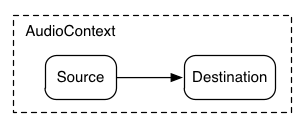
この単純なルーティングを図示します。 この例では単一の音を再生しています :
const context= new AudioContext(); function playSound() { const source= context. createBufferSource(); source. buffer= dogBarkingBuffer; source. connect( context. destination); source. start( 0 ); }
これはもっと複雑な例で、3 つのソースとコンボリューションリバーブが最終出力段にあるダイナミックコンプレッサーを介して送られます :
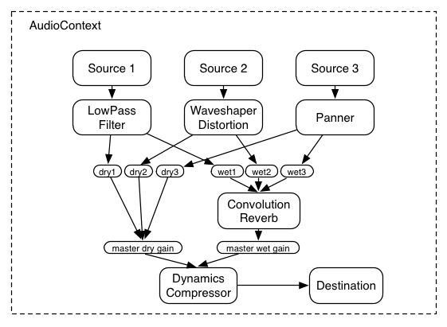
let context; let compressor; let reverb; let source1, source2, source3; let lowpassFilter; let waveShaper; let panner; let dry1, dry2, dry3; let wet1, wet2, wet3; let mainDry; let mainWet; function setupRoutingGraph() { context= new AudioContext(); // Create the effects nodes. lowpassFilter= context. createBiquadFilter(); waveShaper= context. createWaveShaper(); panner= context. createPanner(); compressor= context. createDynamicsCompressor(); reverb= context. createConvolver(); // Create main wet and dry. mainDry= context. createGain(); mainWet= context. createGain(); // Connect final compressor to final destination. compressor. connect( context. destination); // Connect main dry and wet to compressor. mainDry. connect( compressor); mainWet. connect( compressor); // Connect reverb to main wet. reverb. connect( mainWet); // Create a few sources. source1= context. createBufferSource(); source2= context. createBufferSource(); source3= context. createOscillator(); source1. buffer= manTalkingBuffer; source2. buffer= footstepsBuffer; source3. frequency. value= 440 ; // Connect source1 dry1= context. createGain(); wet1= context. createGain(); source1. connect( lowpassFilter); lowpassFilter. connect( dry1); lowpassFilter. connect( wet1); dry1. connect( mainDry); wet1. connect( reverb); // Connect source2 dry2= context. createGain(); wet2= context. createGain(); source2. connect( waveShaper); waveShaper. connect( dry2); waveShaper. connect( wet2); dry2. connect( mainDry); wet2. connect( reverb); // Connect source3 dry3= context. createGain(); wet3= context. createGain(); source3. connect( panner); panner. connect( dry3); panner. connect( wet3); dry3. connect( mainDry); wet3. connect( reverb); // Start the sources now. source1. start( 0 ); source2. start( 0 ); source3. start( 0 ); }
モジュラールーティングはまた AudioNode の出力を 別の AudioNode の動きを制御する AudioParam パラメータに接続する事もできます。 この場合は、ノードからの出力は入力信号ではなくモジュレーション信号として働きます。
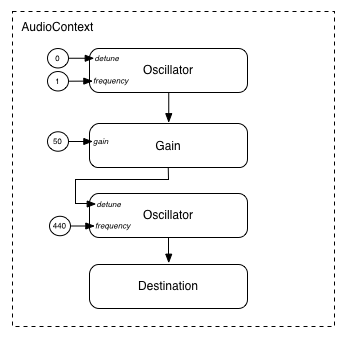
function setupRoutingGraph() { const context= new AudioContext(); // Create the low frequency oscillator that supplies the modulation signal const lfo= context. createOscillator(); lfo. frequency. value= 1.0 ; // Create the high frequency oscillator to be modulated const hfo= context. createOscillator(); hfo. frequency. value= 440.0 ; // Create a gain node whose gain determines the amplitude of the modulation signal const modulationGain= context. createGain(); modulationGain. gain. value= 50 ; // Configure the graph and start the oscillators lfo. connect( modulationGain); modulationGain. connect( hfo. detune); hfo. connect( context. destination); hfo. start( 0 ); lfo. start( 0 ); }
API の概要
定義されているインタフェースは次のとおりです :
-
AudioContext インタフェースは、
AudioNode間の接続を表すオーディオ信号グラフを保持します。 -
AudioNodeインタフェースは、オーディオのソース、オーディオの出力、その間にある処理モジュールを表します。AudioNodeは モジュラー方式 で動的に互いに接続されます。AudioNodeはAudioContextのコンテキスト内に存在します。 -
AnalyserNodeインタフェースは、ミュージックビジュアライザーやその他の視覚化アプリケーションで使用されるAudioNodeです。 -
AudioBufferインタフェースは、メモリー内に保持されるオーディオのリソースで使用されます。 これらはワンショットの音、またはもっと長いオーディオクリップを表します。 -
AudioBufferSourceNodeインタフェースは、AudioBuffer からの音を発生するAudioNodeです。 -
AudioDestinationNodeインタフェースは、AudioNodeのサブクラスでオーディオの最終的な出力地点を表します。 -
AudioParamインタフェースは、AudioNodeの個別の機能、例えば音量などを制御します。 -
AudioListenerインタフェースは、PannerNodeと共に空間音響のために使用されます。 -
AudioWorkletインタフェースは、スクリプトでオーディオを直接処理するカスタムノードを作成するファクトリーを表します。 -
AudioWorkletGlobalScopeインタフェースは、AudioWorkletProcessor の処理スクリプトが実行されるコンテキストです。 -
AudioWorkletNodeインタフェースは、AudioWorkletProcessor で処理されるAudioNodeを表します。 -
AudioWorkletProcessor インタフェースは、Audio ワーカー内の 1 つのノードのインスタンスを表します。
-
BiquadFilterNodeインタフェースは、次のような一般的な低次のフィルタのAudioNodeです :-
ローパス
-
ハイパス
-
バンドパス
-
ローシェルフ
-
ハイシェルフ
-
ピーキング
-
ノッチ
-
オールパス
-
-
ChannelMergerNodeインタフェースは、複数のオーディオストリームからひとつのオーディオストリームにチャンネルの結合を行うAudioNodeです。 -
ChannelSplitterNodeインタフェースは、ルーティンググラフ内のオーディオストリームの個別のチャンネルにアクセスするために使用されるAudioNodeです。 -
ConstantSourceNodeインタフェースは、AudioParamによる値のオートメーションが可能な定数値を出力するAudioNodeです。 -
ConvolverNodeインタフェースは、( 例えばコンサートホールでの音のような ) リアルタイム線形エフェクトを加えるAudioNodeです。 -
DynamicsCompressorNodeインタフェースは、ダイナミクス・コンプレッションのためのAudioNodeです。 -
IIRFilterNodeインタフェースは、一般的な IIR フィルタのAudioNodeです。 -
MediaElementAudioSourceNodeインタフェースは、audio、videoその他のメディア要素を音源とするAudioNodeです。 -
MediaStreamAudioSourceNodeインタフェースは、ライブオーディオ入力やリモート・ピアから受け取ったようなMediaStreamを音源とするAudioNodeです。 -
MediaStreamTrackAudioSourceNodeインタフェースは、MediaStreamTrackからのオーディオを音源とするAudioNodeです。 -
MediaStreamAudioDestinationNodeインタフェースは、リモート・ピアに送信するMediaStreamを出力先とするAudioNodeです。 -
PannerNodeインタフェースは、3D 空間での空間音響/空間定位のためのAudioNodeです。 -
PeriodicWaveインタフェースは、OscillatorNodeで使用されるカスタム周期波形を指定するために使用されます。 -
OscillatorNodeインタフェースは、周期的な波形を発生するAudioNodeです。 -
StereoPannerNodeインタフェースは、ステレオストリームで 入力された信号の equal-power 方式の定位を行うAudioNodeです。 -
WaveShaperNodeインタフェースは、ディストーションやその他微妙なウォーミング効果など、非線形のウェーブシェイピング・エフェクトを加えるためのAudioNodeです。
また、Web Audio API で既に非推奨とされましたがまだ削除されておらず、置き換えの実装が予定されているいくつかの機能があります :
-
ScriptProcessorNodeインタフェースは、スクリプトでオーディオを直接生成または処理するためのAudioNodeです。 -
AudioProcessingEventインタフェースは、ScriptProcessorNodeオブジェクトと共に用いられるイベントタイプです。
1. オーディオ API
1.1. BaseAudioContext インタフェース
このインタフェースは AudioNode オブジェクトのセットとそれらの接続を表します。 それによって AudioDestinationNode に任意の信号をルーティングする事を可能にします。 ノードはコンテキストから作成され、お互いに 接続 されます。
BaseAudioContext は直接的にはインスタンス化されず、代わりに AudioContext (リアルタイムレンダリングの場合)と OfflineAudioContext (オフラインレンダリングの場合)が拡張された具体的なインタフェースとなっています。
BaseAudioContext は、初期状態では空のプロミスの順序付きリストである [[pending promises]] という内部スロットを持って作成されます。
各 BaseAudioContext は、固有の メディア要素イベントタスクソース を持っています。 さらに BaseAudioContext には AudioContextState から値を取得する2つのプライベートスロット [[レンダリングスレッドの状態]] と [[制御スレッドの状態]] があり、どちらも最初は "suspended" に設定されています。 さらに符号なし整数のプライベートスロット [[レンダリング量子サイズ]] があります。
enum {AudioContextState "suspended" ,"running" ,"closed" };
| 列挙値 | 説明 |
|---|---|
"suspended"
| このコンテキストは現在中断しています ( コンテキストの時間は進まず、オーディオハードウェアはパワーダウン / 解放されている可能性もあります)。 |
"running"
| オーディオは処理状態にあります。 |
"closed"
| このコンテキストは解放され、もうオーディオ処理に使用できません。 すべてのシステムオーディオリソースは解放されました。 |
enum {AudioContextRenderSizeCategory "default" ,"hardware" };
| 列挙値の説明 | |
|---|---|
"default"
| AudioContext の レンダリング量子サイズ は、デフォルト値の 128 フレームです。 |
"hardware"
|
ユーザーエージェントは現在の構成に最適な レンダリング量子サイズ を選択します。
注 : これはホストに関する情報が露出されフィンガープリントに使用される可能性があります。 |
callback DecodeErrorCallback =undefined (DOMException );error callback DecodeSuccessCallback =undefined (AudioBuffer ); [decodedData Exposed =Window ]interface BaseAudioContext :EventTarget {readonly attribute AudioDestinationNode destination ;readonly attribute float sampleRate ;readonly attribute double currentTime ;readonly attribute AudioListener listener ;readonly attribute AudioContextState state ;readonly attribute unsigned long renderQuantumSize ; [SameObject ,SecureContext ]readonly attribute AudioWorklet audioWorklet ;attribute EventHandler onstatechange ;AnalyserNode createAnalyser ();BiquadFilterNode createBiquadFilter ();AudioBuffer createBuffer (unsigned long ,numberOfChannels unsigned long ,length float );sampleRate AudioBufferSourceNode createBufferSource ();ChannelMergerNode createChannelMerger (optional unsigned long numberOfInputs = 6);ChannelSplitterNode createChannelSplitter (optional unsigned long numberOfOutputs = 6);ConstantSourceNode createConstantSource ();ConvolverNode createConvolver ();DelayNode createDelay (optional double maxDelayTime = 1.0);DynamicsCompressorNode createDynamicsCompressor ();GainNode createGain ();IIRFilterNode createIIRFilter (sequence <double >,feedforward sequence <double >);feedback OscillatorNode createOscillator ();PannerNode createPanner ();PeriodicWave createPeriodicWave (sequence <float >,real sequence <float >,imag optional PeriodicWaveConstraints = {});constraints ScriptProcessorNode createScriptProcessor (optional unsigned long bufferSize = 0,optional unsigned long numberOfInputChannels = 2,optional unsigned long numberOfOutputChannels = 2);StereoPannerNode createStereoPanner ();WaveShaperNode createWaveShaper ();Promise <AudioBuffer >decodeAudioData (ArrayBuffer ,audioData optional DecodeSuccessCallback ?,successCallback optional DecodeErrorCallback ?); };errorCallback
1.1.1. 属性
audioWorklet, AudioWorklet 型, readonly-
[HTML] と
AudioWorkletのアルゴリズムにより定義されたAudioWorkletProcessorクラスのスクリプトをインポート可能なWorkletオブジェクトへのアクセスを行います。 currentTime, double 型, readonly-
コンテキストのレンダリンググラフで最後に処理されたオーディオブロックの最後のサンプルフレームの次のサンプルフレームを秒で表した時刻です。 もしコンテキストのレンダリンググラフがまだオーディオブロックを処理していない場合
currentTimeは 0 になります。currentTimeの時間軸で 0 はグラフで処理される最初のブロックの最初のサンプルフレームに対応します。 このシステムの経過時間はBaseAudioContextが生成するオーディオストリームの経過時間に対応し、それはシステム内の他の時計には同期しないかも知れません。 (OfflineAudioContextでは、ストリームはどのデバイスでも能動的に再生されないため、実時間とはまったく違う進み方になります )Web Audio API のすべてのスケジュールされた時刻は
currentTimeに対する相対値になります。BaseAudioContextが "running" 状態にあるとき、この属性の値は単調増加し、レンダリングスレッドにより 1 レンダリング量子 に対応する均一な増分で更新されます。 そのため動作中のコンテキストでは、currentTimeはシステムがオーディオブロックを処理するに従って徐々に増加し、常に次に処理されるオーディオブロックの先頭の時刻を表します。 それはまた現在の状態に対する変更が効力を持つ最も早い時刻でもあります。currentTimeは制御スレッドが処理を戻すまでに アトミック に読み取られなくてはなりません ( MUST )。 destination, AudioDestinationNode 型, readonly-
AudioDestinationNodeは単一の入力を持ち、すべてのオーディオの最終的な出口を表しています。 通常これは実際のオーディオハードウェアを表します。 動作中のすべてのAudioNodeは直接または間接的にこのdestinationに接続されます。 listener, AudioListener 型, readonly-
AudioListenerは 3D 空間音響 で使用されます。 onstatechange, EventHandler 型-
AudioContext の状態が変化したとき ( 例えば、対応する Promise がリゾルブされたときなど ) に
BaseAudioContextにディスパッチされるイベントのイベントハンドラを設定するために使用されるプロパティです。 このイベントハンドラのイベント型はstatechangeです。Eventインタフェースを使用するイベントはイベントハンドラにディスパッチされ、AudioContext の状態を直接照会できます。 新たに作成された AudioContext は常にsuspended状態から開始し、状態の変化イベントは異なる状態への遷移の度に発行されます。 このイベントはcompleteイベントが発生する前に発行されます。 sampleRate, float 型, readonly-
BaseAudioContextが扱うオーディオのサンプルレート ( 1 秒あたりのサンプルフレーム数 ) です。 コンテキスト内のすべてのAudioNodeはこのレートで動作する事を想定しています。 これを想定するため、サンプレートコンバータや " 可変速 " 処理はリアルタイム処理内ではサポートされません。 ナイキスト周波数 はこのサンプルレートの半分の値となります。 state, AudioContextState 型, readonly-
BaseAudioContextの現在の状態を表します。 この属性を読み出すと値は[[制御スレッドの状態]]スロットの値を返します。 renderQuantumSize, unsigned long 型, readonly-
この属性を読み出すと
[[レンダリング量子サイズ]]スロットの値を返します。
1.1.2. メソッド
createAnalyser()-
AnalyserNodeの ファクトリーメソッド です。パラメータなし。戻り値 :AnalyserNode createBiquadFilter()-
いくつかの一般的なフィルタタイプに設定可能な 2 次フィルタを表す
BiquadFilterNodeの ファクトリーメソッド です。パラメータなし。戻り値 :BiquadFilterNode createBuffer(numberOfChannels, length, sampleRate)-
与えられたサイズの AudioBuffer を作成します。 バッファ内のデータは 0 ( 無音 ) で初期化されます。 もし、引数のどれかが負、0
NotSupportedError例外を発生します ( MUST )。BaseAudioContext.createBuffer() メソッドの引数。 パラメータ 型 Null可 省略可 説明 numberOfChannelsunsigned long✘ ✘ バッファが持つチャンネル数を指定します。 実装は少なくとも 32 チャンネルをサポートしなくてはなりません ( MUST )。 lengthunsigned long✘ ✘ バッファのサイズをサンプルフレーム数で指定します。 これは少なくとも 1 でなくてはなりません ( MUST )。 sampleRatefloat✘ ✘ バッファ内の リニア PCM オーディオデータのサンプルレートを秒あたりのサンプルフレーム数で表します。 実装は少なくとも 8000 から 96000 の範囲をサポートしなくてはなりません ( MUST )。 戻り値 :AudioBuffer createBufferSource()-
AudioBufferSourceNodeの ファクトリーメソッド です。パラメータなし。戻り値 :AudioBufferSourceNode createChannelMerger(numberOfInputs)-
チャンネルマージャーを表す
ChannelMergerNodeの ファクトリーメソッド です。numberOfInputsが 1 より小さいかサポートするチャンネル数より大きい場合はIndexSizeError例外を発生します ( MUST )。BaseAudioContext.createChannelMerger(numberOfInputs) メソッドの引数。 パラメータ 型 Null可 省略可 説明 numberOfInputsunsigned long✘ ✔ 入力の数を指定します。 値は 32 までサポートされなくてはなりません ( MUST )。 もし指定されない場合は 6となります。戻り値 :ChannelMergerNode createChannelSplitter(numberOfOutputs)-
チャンネルスプリッターを表す
ChannelSplitterNodeの ファクトリーメソッド です。numberOfOutputsが 1 より小さいかサポートするチャンネル数より大きい場合は、IndexSizeError例外を発生します ( MUST )。BaseAudioContext.createChannelSplitter(numberOfOutputs) メソッドの引数 パラメータ 型 Null可 省略可 説明 numberOfOutputsunsigned long✘ ✔ 出力の数を指定します。 値は 32 までサポートされなくてはなりません ( MUST )。 もし指定されない場合は 6となります。戻り値 :ChannelSplitterNode createConstantSource()-
ConstantSourceNodeの ファクトリーメソッド です。パラメータなし。戻り値 :ConstantSourceNode createConvolver()-
ConvolverNodeの ファクトリーメソッド です。パラメータなし。戻り値 :ConvolverNode createDelay(maxDelayTime)-
DelayNodeの ファクトリーメソッド です。 初期化時のデフォルト遅延時間は 0 秒です。BaseAudioContext.createDelay(maxDelayTime) メソッドの引数 パラメータ 型 Null可 省略可 説明 maxDelayTimedouble✘ ✔ 遅延時間の最大値を秒で指定します。 指定する場合は、その値は 0 よりも大きく 3 分よりも小さくなければなりません ( MUST )。 そうでない場合 NotSupportedError例外を発生します ( MUST )。 指定しない場合は1となります。戻り値 :DelayNode createDynamicsCompressor()-
DynamicsCompressorNodeの ファクトリーメソッド です。パラメータなし。戻り値 :DynamicsCompressorNode createGain()-
GainNodeの ファクトリーメソッド です。パラメータなし。戻り値 :GainNode createIIRFilter(feedforward, feedback)-
BaseAudioContext.createIIRFilter() メソッドの引数 パラメータ 型 Null可 省略可 説明 feedforwardsequence<double>✘ ✘ IIR フィルタの伝達関数のフィードフォワード ( 分子 ) の係数の配列です。 この配列の最大の長さは 20 です。 もしすべての値が 0 の場合、 InvalidStateError例外を発生します ( MUST )。 配列の長さが 0 または 20 より大きい場合はNotSupportedError例外を発生します ( MUST )。feedbacksequence<double>✘ ✘ IIR フィルタの伝達関数のフィードバック ( 分母 ) の係数の配列です。 この配列の最大の長さは20です。 もし配列の最初の要素が 0 の場合、 InvalidStateError例外を発生します ( MUST )。 もし配列の長さが 0 または 20 より大きい場合はNotSupportedError例外を発生します ( MUST )。戻り値 :IIRFilterNode createOscillator()-
OscillatorNodeの ファクトリーメソッド です。パラメータなし。戻り値 :OscillatorNode createPanner()-
PannerNodeの ファクトリーメソッド です。パラメータなし。戻り値 :PannerNode createPeriodicWave(real, imag, constraints)-
PeriodicWaveを作成する ファクトリーメソッド です。このメソッドを呼び出したとき、以下の手順が実行されます :-
もし
realとimagが同じ長さでない場合、IndexSizeErrorが発生します ( MUST )。 -
o を
PeriodicWaveOptions型の新しいオブジェクトとします。 -
このファクトリーメソッドに各々渡された
realおよびimagパラメータを、o の同じ名前の属性として設定します。 -
o の
disableNormalization属性を、ファクトリーメソッドに渡されたconstraintsのdisableNormalization属性の値に設定します。 -
このファクトリーメソッドが呼ばれた
BaseAudioContextを最初の引数とし、o を渡して新しいPeriodicWavep を作成します。 -
p を返します。
BaseAudioContext.createPeriodicWave() メソッドの引数 パラメータ 型 Null可 省略可 説明 realsequence<float>✘ ✘ コサインパラメータの数値列です。 詳細の説明についてはコンストラクタの引数 realを参照してください。imagsequence<float>✘ ✘ サインパラメータの数値列です。 詳細の説明についてはコンストラクタの引数 imagを参照してください。constraintsPeriodicWaveConstraints✘ ✔ 指定されていない場合は、波形は正規化されます。 そうでない場合、波形は constraintsに与えられた値に従って正規化されます。戻り値 :PeriodicWave -
createScriptProcessor(bufferSize, numberOfInputChannels, numberOfOutputChannels)-
ScriptProcessorNodeの ファクトリーメソッド です。 このメソッドは廃止予定 ( DEPRECATED ) で、AudioWorkletNodeで置き換えられる予定です。 スクリプトによるオーディオデータ直接処理のためのScriptProcessorNodeを作成します。bufferSizeまたはnumberOfInputChannelsまたはnumberOfOutputChannelsが範囲外の場合、IndexSizeError例外を発生します ( MUST )。numberOfInputChannelsとnumberOfOutputChannelsの両方を 0 にはできません。 この場合、IndexSizeError例外を発生します ( MUST )。BaseAudioContext.createScriptProcessor(bufferSize, numberOfInputChannels, numberOfOutputChannels) メソッドの引数 パラメータ 型 Null可 省略可 説明 bufferSizeunsigned long✘ ✔ bufferSizeパラメータはサンプルフレーム数でバッファのサイズを指定します。 もしそれが渡されない場合、または値が 0 である場合、実装はノードのライフタイムを通して一定な、動作環境に最適な 2 の累乗のバッファサイズを選択します。 それ以外の場合は明示的にバッファサイズを指定します。 それは次の値のどれかでなければなりません : 256、512、1024、2048、4096、8192、16384 ( MUST )。 この値はaudioprocessイベントが発生する頻度とそれぞれの呼び出しでどれだけのサンプルフレームを処理する必要があるかを制御します。bufferSizeが小さい値ならば レイテンシ は低く ( 良く ) なります。 オーディオが途切れ、グリッジ が発生する事を避けるには大きな値が必要となります。 レイテンシ とオーディオ品質の間のバランスを取るためには、プログラマーはこのバッファサイズを指定せず、実装に最適なバッファサイズを選択させる事が推奨されます。 もしこのパラメータの値が上に示した許された 2 の累乗の値でない場合、IndexSizeError例外を発生します ( MUST )。numberOfInputChannelsunsigned long✘ ✔ このパラメータはこのノードの入力チャンネル数を指定します。 デフォルトの値は 2 です。 32 チャンネルまでの値がサポートされなくてはなりません。 チャンネル数がサポート外の場合、 NotSupportedError例外を発生します。numberOfOutputChannelsunsigned long✘ ✔ このパラメータはこのノードの出力チャンネル数を指定します。 デフォルトの値は 2 です。 32 チャンネルまでの値がサポートされなくてはなりません。 チャンネル数がサポート外の場合、 NotSupportedError例外を発生します。戻り値 :ScriptProcessorNode createStereoPanner()-
StereoPannerNodeの ファクトリーメソッド です。パラメータなし。戻り値 :StereoPannerNode createWaveShaper()-
非線形な歪み効果を表す
WaveShaperNodeの ファクトリーメソッド です。パラメータなし。戻り値 :WaveShaperNode decodeAudioData(audioData, successCallback, errorCallback)-
ArrayBuffer内にあるオーディオファイルのデータを非同期にデコードします。ArrayBufferは、例えばXMLHttpRequestでresponseTypeに"arraybuffer"を指定した場合のresponse属性としてロードされます。 オーディオファイルデータはaudio要素でサポートされるどのフォーマットでも構いません。decodeAudioData()に渡されるバッファは [mimesniff] で説明される手順で判定されるコンテントタイプを持ちます。この関数の基本的なインタフェースの手段は戻り値の promise ではありますが、歴史的な理由からコールバックのパラメータも提供されています。
ファイルが破損している場合、実装は作成者に警告する事を推奨します。 これは破壊的な変更となるため、スローすることはできません。
注 : 圧縮されたオーディオデータのバイトストリームが破損しているが、デコードは続行可能な場合、実装は開発者ツールなどを通じて作成者に警告することが推奨されます。decodeAudioDataが呼ばれたとき、制御スレッド上では次の手順を実行します ( MUST ) :-
this に 対応するグローバルオブジェクト に 関連付けられたドキュメント が 完全にアクティブ でない場合は、"
InvalidStateError"DOMExceptionで promise をリジェクト して返します。 -
promise を新しい Promise とします。
-
もし
audioDataが デタッチ されている場合、次の手順を実行します :-
promise を
[[pending promises]]に追加します。 -
audioDataArrayBufferを デタッチ します。 もしこの操作に失敗した場合はステップ 3 にジャンプします。 -
別のスレッドで実行されるデコード処理をキューにいれます。
-
-
そうでなければ、次の手順を実行します :
-
error を
DataCloneErrorとします。 -
promise を error でリジェクトし、
[[pending promises]]から削除します。 -
errorCallbackを error で呼び出す メディア要素タスクをキューに入れます 。
-
-
promise を返します。
制御スレッド でも レンダリングスレッド でもない、デコーディングスレッドと呼ばれる別のスレッドで実行されるデコード処理がキューに入れられるとき、次の手順が発生します ( MUST )。注 : 複数回の
decodeAudioDataの呼び出しを処理するため、複数のデコーディングスレッドが並列して走る事もあります。-
can decode を初期状態が true のブーリアンフラグとします。
-
MIME Sniffing § 6.2 Matching an audio or video type pattern を用いて、
audioDataの MIME タイプの決定を試みます。 もしオーディオまたはビデオのパターンマッチングアルゴリズムがundefinedを返した場合 can decode を false に設定します。 -
もし can decode が true の場合、エンコードされている
audioDataを リニア PCM にデコードを試みます。 もし失敗した場合は can decode を false に設定します。もしメディアのバイトストリームに複数のオーディオトラックが含まれている場合は、最初のトラックのみを リニア PCM にデコードします。
注 : デコード処理をより詳細に制御する必要がある作成者は、[WEBCODECS] を使用できます。
-
もし can decode が
falseの場合、次の手順を実行するための メディア要素タスクをキューに入れます :-
error を
EncodingErrorという名前のDOMExceptionとします。-
promise を error でリジェクトし、
[[pending promises]]から削除します。
-
-
もし
errorCallbackが存在している場合はerrorCallbackを error で呼び出します。
-
-
そうでなければ :
-
デコードされたリニア PCM の結果を得て、
BaseAudioContextのサンプルレートがaudioDataのサンプルレートと異なっていたらリサンプリングを行います。 -
次の手順を実行するための メディア要素タスクをキューに入れます :
-
buffer を最終的な結果 ( 必要ならサンプルレート変換を行った後 ) を保持した
AudioBufferとします。 -
promise を buffer を持ってリゾルブします。
-
もし
successCallbackが存在していればsuccessCallbackを buffer を持って呼び出します。
-
-
BaseAudioContext.decodeAudioData() メソッドの引数 パラメータ 型 Null可 省略可 説明 audioDataArrayBuffer✘ ✘ 圧縮されたオーディオデータを含む ArrayBuffer です。 successCallbackDecodeSuccessCallback?✔ ✔ デコードが完了したときに呼び出されるコールバック関数です。 コールバック関数の引数は 1 つでデコードされた PCM オーディオデータをあらわす AudioBuffer になります。 errorCallbackDecodeErrorCallback?✔ ✔ オーディオファイルをデコード中にエラーが起こった場合に呼び出されるコールバック関数です。 戻り値 :Promise<AudioBuffer> -
1.1.3. コールバック DecodeSuccessCallback() パラメータ
decodedData,AudioBuffer 型-
デコードしたオーディオデータを保持する AudioBuffer。
1.1.4. コールバック DecodeErrorCallback() パラメータ
error,DOMException 型-
デコード中に発生したエラー。
1.1.5. ライフタイム
AudioContext は一度作成された後、これ以上再生する音がなくなるまで、あるいはページを移動するまで再生を続けます。
1.1.6. 内部検査やシリアライゼーションの基本機能の欠如
Web Audio API は音源のスケジューリングに fire-and-forget アプローチを取っています。 つまり、音源ノード は、AudioContext のライフタイムの間のひとつひとつの音に対応して作成され、明示的にグラフからの削除は行いません。 これはシリアライゼーション API とは互換性がなく、そのためシリアライズ可能な固定的なノードのセットもありません。
さらに言えば、内部検査のための API があればスクリプトからガベージコレクションの監視が可能になります。
1.1.7. BaseAudioContext サブクラスに関連付けられるシステムリソース
サブクラス、AudioContext と OfflineAudioContext はコストの高いオブジェクトと考えるべきです。 これらのオブジェクトの作成には、高プライオリティのスレッドまたは低レイテンシのシステムオーディオを含み、どちらも消費電力への影響があります。 通常は、1 つのドキュメント内に 1 つ以上の AudioContext を作成する事は不必要です。
BaseAudioContext のサブクラスの作成または再開は、そのコンテキストが システムリソースを取得 する事を含みます。 このためには AudioContext としてはシステムのオーディオストリームを作成する事も必要です。 これらの動作はコンテキストが関連するオーディオグラフから出力の生成を開始する際に処理を戻します。
なお、ユーザーエージェントは実装で定められた最大数の AudioContext を持つ事ができ、それ以上の新しい AudioContext の作成は失敗して、 NotSupportedError 例外を発生します。
suspend および close を使う事で、スレッド、プロセスおよびオーディオストリームを含む システムリソースの解放 を行う事ができます。 BaseAudioContext をサスペンドする事で、実装は一部のリソースを解放して後で resume を呼び出したときに再開できるようにします。 AudioContext のクローズによって、実装はすべてのリソースを解放し、再度使用したり再開したりはできなくなります。
注 :例えば、定期的なコールバックの呼び出しを待つ事やハードウェアが処理可能になるのを待つ事も含みます。
1.2. AudioContext インタフェース
このインタフェースは、その AudioDestinationNode がデバイスへのリアルタイム出力によって直接ユーザーに信号が届くオーディオグラフを表します。 多くの場合、１ つのドキュメントにつき 1 つの AudioContext が使用されます。
enum {AudioContextLatencyCategory "balanced" ,"interactive" ,"playback" };
| 列挙値 | 説明 |
|---|---|
"balanced"
| オーディオ出力のレイテンシと安定性/消費電力のバランスを取ります。 |
"interactive"
| オーディオ出力のレイテンシをグリッジが発生しない最小値にする。 これがデフォルトになります。 |
"playback"
| オーディオ出力のレイテンシよりも再生の途切れを起こさない事を優先します。 消費電力は最も低くなります。 |
enum {AudioSinkType "none" };
| 列挙値 | 説明 |
|---|---|
"none"
| オーディオグラフは、オーディオ出力デバイスで再生されずに処理されます。 |
[Exposed =Window ]interface AudioContext :BaseAudioContext {constructor (optional AudioContextOptions contextOptions = {});readonly attribute double baseLatency ;readonly attribute double outputLatency ; [SecureContext ]readonly attribute (DOMString or AudioSinkInfo )sinkId ; [SecureContext ]readonly attribute AudioRenderCapacity renderCapacity ;attribute EventHandler onsinkchange ;attribute EventHandler onerror ;AudioTimestamp getOutputTimestamp ();Promise <undefined >resume ();Promise <undefined >suspend ();Promise <undefined >close (); [SecureContext ]Promise <undefined >((setSinkId DOMString or AudioSinkOptions ));sinkId MediaElementAudioSourceNode createMediaElementSource (HTMLMediaElement );mediaElement MediaStreamAudioSourceNode createMediaStreamSource (MediaStream );mediaStream MediaStreamTrackAudioSourceNode createMediaStreamTrackSource (MediaStreamTrack );mediaStreamTrack MediaStreamAudioDestinationNode createMediaStreamDestination (); };
ユーザーエージェントがコンテキストの状態を "suspended" から "running" に移行できる場合、AudioContext が スタート可能 であると言います。 ユーザーエージェントは、AudioContext の 関連するグローバルオブジェクト が スティッキーアクティベーション を持っている場合にのみ許可するために、この最初の遷移を許可しない場合があります。
AudioContext は内部に次のスロットを持っています :
[[suspended by user]]-
コンテキストがユーザーのコードによって中断されているかどうかを表すブーリアンフラグです。 初期値は
falseです。 [[sink ID]]-
現在のオーディオ出力デバイスの識別子または情報を表す
DOMStringまたはAudioSinkInfoです。 初期値は""で、デフォルトのオーディオ出力デバイスを意味します。 [[pending resume promises]]
1.2.1. コンストラクタ
AudioContext(contextOptions)-
現在の設定オブジェクト に 対応するグローバルオブジェクト の関連するドキュメントが 完全にアクティブ でない場合は "
InvalidStateError" を発行して、以下の手順を中止します。AudioContextを作成する際は、以下の手順を実行します :-
context を新しい
AudioContextオブジェクトとします。 -
context の
[[制御スレッドの状態]]をsuspendedに設定します。 -
context の
[[レンダリングスレッドの状態]]をsuspendedに設定します。 -
messageChannel を新しい
MessageChannelとします。 -
controlSidePort を messageChannel の
port1属性の値とします。 -
renderingSidePort を messageChannel の
port2属性の値とします。 -
serializedRenderingSidePort を StructuredSerializeWithTransfer(renderingSidePort の結果とします。
-
この
audioWorkletのportを controlSidePort に設定します。 -
AudioContextGlobalScope の MessagePort を serializedRenderingSidePort に 設定するための制御メッセージをキューに入れます。
-
もし
contextOptionsが与えられていれば、次の手順を適用します :-
sinkIdが指定されている場合は、sinkId をcontextOptions.の値として、次の手順を実行します。sinkId-
sinkId と
[[sink ID]]の両方がDOMString型であり、それが等しい場合はこれらの手順を中止します。 -
sinkId が
AudioSinkOptions型であり、[[sink ID]]がAudioSinkInfo型の時、sinkId のtypeと[[sink ID]]のtypeが等しければ、これらの手順を中止します。 -
validationResult を sinkId の sinkId検証 の戻り値とします。
-
validationResult が
DOMException型の場合、validationResult で例外を発生してこれらの手順を中止します。 -
sinkId が
DOMString型の場合、[[sink ID]]を sinkId に設定し、これらの手順を中止します。 -
sinkId が
AudioSinkOptions型の場合、[[sink ID]]を、sinkId のtypeの値で作成されたAudioSinkInfoの新しいインスタンスに設定します。
-
-
context の内部レイテンシを
latencyHintの項に書かれているように、contextOptions.に従って設定します。latencyHint -
もし
contextOptions.が指定されていれば、context のsampleRatesampleRateをその値に設定します。 そうでなければ、以下の手順に従います :-
sinkId が空文字列または
AudioSinkOptions型の場合は、デフォルトの出力デバイスのサンプルレートを使用し、これらの手順は中止します。 -
sinkId が
DOMStringの場合、sinkId で識別される出力デバイスのサンプルレートを使用し、これらの手順を中止します。
もし
contextOptions.が出力デバイスのサンプルレートと異なる場合、ユーザーエージェントは出力デバイスのサンプルレートに合わせてオーディオ出力をリサンプリングする必要があります。sampleRate注 : もしリサンプリングが必要とされる場合、context のレイテンシに大きな影響があるかも知れません。
-
-
-
context を返します。
処理を開始するための 制御メッセージ を送るには次の手順を実行します :-
document を、現在の設定オブジェクト に対応するグローバルオブジェクトの関連付けられたドキュメント とします。
-
[[sink ID]]に基づいてオーディオ出力デバイスを使用したレンダリングのために システムリソースの取得 を試みます :-
空文字列の場合、デフォルトのオーディオ出力デバイス
-
[[sink ID]]で識別されるオーディオ出力デバイス
-
リソースの取得に失敗した場合は、次の手順を実行します :
-
document が
"speaker-selection"で識別される機能の使用を許可されていない場合は、これらの手順を中止します。 -
AudioContextでerrorという名前の イベントを発生 させる メディア要素タスクをキューに入れ て、以降の手順を中止します。
-
-
-
AudioContextにおいて this の[[レンダリングスレッドの状態]]をrunningに設定します。 -
以下の手順を実行するための メディア要素タスクをキューに追加 します :
-
AudioContextのstate属性を "running" にします。 -
AudioContextでstatechangeという名前の イベントを発行 します。
-
注 :
AudioContextが引数なしで構築され、リソースの取得に失敗した場合、ユーザーエージェントはオーディオ出力デバイスをエミュレートするメカニズムを使用して、オーディオグラフを無音でレンダリングしようとします。AudioWorkletGlobalScopeのMessagePortを設定するための制御メッセージを送信するということは、AudioWorkletGlobalScopeに転送された serializedRenderingSidePort を使用して、レンダリングスレッドで次の手順を実行することを意味します :-
deserializedPort を StructuredDeserialize(serializedRenderingSidePort, 現在のRealm) の結果とします。
-
portを deserializedPort に設定します。
AudioContext.constructor(contextOptions) メソッドの引数 パラメータ 型 Null可 省略可 説明 contextOptionsAudioContextOptions✘ ✔ AudioContextをどのように作成するかをユーザーが指定するオプションです。 -
1.2.2. 属性
baseLatency, double 型, readonly-
これは
AudioContextがAudioDestinationNodeからオーディオサブシステムにオーディオを渡す処理で発生するレイテンシの秒数を表します。 これにはAudioDestinationNodeの出力とオーディオハードウェアの間で発生するかも知れないその他の処理による追加のレイテンシは含まれず、特にオーディオグラフ自体に発生するレイテンシは含まれません。例えばもし、オーディオコンテキストが 44.1 kHz で動作しており、
AudioDestinationNodeの実装が内部でダブルバッファリングによる レンダリング量子 の出力処理を行う場合、処理のレイテンシは、約 \((2\cdot128)/44100 = 5.805 \mathrm{ ms}\) となります。 outputLatency, double 型, readonly-
オーディオ出力処理のレイテンシの秒数の見積もり、つまり UA がホストシステムにバッファを再生を要求した時間から、バッファ内の最初のサンプルが実際にオーディオ出力デバイスで処理される時間までの間隔です。 この後者の時間は、スピーカーやヘッドフォンのような音の信号を発生するデバイスがサンプルの音を発生する時間を指します。
outputLatency属性の値はプラットフォームと接続されているオーディオ出力デバイスに依存します。outputLatency属性の値はコンテキストの実行中や対応するオーディオ出力デバイスの変更時に変化する可能性があります。 正確な同期が必要な場合はこの値を頻繁に問い合わせる事が有用です。 renderCapacity, AudioRenderCapacity 型, readonly-
AudioContextに関連付けられたAudioRenderCapacityインスタンスを返します。 sinkId,(DOMString or AudioSinkInfo)型, readonly-
内部スロット
[[sink ID]]の値を返します。 この属性は更新時にキャッシュされ、キャッシュされた後は同じオブジェクトを返します。 onsinkchange, EventHandler 型-
setSinkId()のイベントハンドラです。 このイベントハンドラのイベントタイプはsinkchangeです。 このイベントは、出力デバイスの変更が完了したときに送信されます。注 : これは、
AudioContextの構築時の最初のデバイス選択ではディスパッチされません。statechangeイベントは、初期出力デバイスの準備状況を確認するために使用できます。 onerror, EventHandler 型-
AudioContextからディスパッチされたEventのイベントハンドラです。 このハンドラのイベントタイプはerrorでユーザーエージェントは以下の場合にこのイベントをディスパッチします :-
選択したオーディオデバイスを初期化してアクティブ化するときにエラーが発生しました。
-
コンテキストが
running状態の最中にAudioContextに関連付けられたオーディオ出力デバイスが切断されました。 -
オペレーティングシステムがオーディオデバイスの障害を報告しました。
-
1.2.3. メソッド
close()-
AudioContextをクローズし、使用中の システムリソースを解放 します。 これはAudioContextが作成したすべてのオブジェクトを自動的に開放はしませんが、AudioContextのcurrentTimeの進行を止め、オーディオデータの処理を停止します。close が呼ばれたとき、以下の手順が実行されます :-
this に 対応するグローバルオブジェクト に 関連付けられたドキュメント が 完全にアクティブ でない場合は、"InvalidStateError" DOMException で promise をリジェクト して返します。
-
promise を新しい Promise とします。
-
AudioContextの[[制御スレッドの状態]]がclosedの場合、InvalidStateErrorで promise をリジェクトしてこれらの手順を中止し、promise を返します。 -
AudioContextの[[制御スレッドの状態]]をclosedに設定します。 -
AudioContextのクローズを行う 制御メッセージをキューに入れます。 -
promise を返します。
AudioContextをクローズするための 制御メッセージ を実行することは レンダリングスレッド で以下の手順を実行することを意味します :-
システムリソースの解放 を試みます。
-
[[レンダリングスレッドの状態]]をsuspendedに設定します。これによりレンダリングは停止します。 -
もしこの 制御メッセージ がドキュメントがアンロードされる反応の途中で実行されているなら、このアルゴリズムを中止します
この場合、制御スレッドへの通知は必要ありません。 -
以下の手順を実行する メディア要素タスクをキューに入れます :
-
promise をリゾルブします。
-
もし
AudioContextのstate属性が既に "closed" でない場合 :-
AudioContextのstate属性を "closed" に設定します。 -
AudioContextでstatechangeという名前の イベントを発行 するための メディア要素タスクをキューに入れます。
-
-
AudioContextがクローズされた場合、AudioContextに接続されているすべてのMediaStreamとHTMLMediaElementはその出力を無視されます。 つまり、これらはもうスピーカーなどの出力デバイスに出力されなくなります。 より柔軟な挙動のためには、HTMLMediaElement.captureStream()の使用を検討してください。注 :
AudioContextがクローズされるとき、実装はサスペンドの場合よりも積極的に多くのリソースを解放する事ができます。パラメータなし。 -
createMediaElementSource(mediaElement)-
指定された
HTMLMediaElementからMediaElementAudioSourceNodeを作成します。 このメソッドの呼び出しにより、HTMLMediaElementからのオーディオの再生はAudioContextの処理グラフに再ルーティングされるようになります。AudioContext.createMediaElementSource() メソッドの引数 パラメータ 型 Null可 省略可 説明 mediaElementHTMLMediaElement✘ ✘ 再ルーティングされるメディア要素です。 createMediaStreamDestination()-
MediaStreamAudioDestinationNodeを作成します。パラメータなし。 createMediaStreamSource(mediaStream)-
MediaStreamAudioSourceNodeを作成します。AudioContext.createMediaStreamSource() メソッドの引数 パラメータ 型 Null可 省略可 説明 mediaStreamMediaStream✘ ✘ 音源となるメディアストリームです。 createMediaStreamTrackSource(mediaStreamTrack)-
MediaStreamTrackAudioSourceNodeを作成します。AudioContext.createMediaStreamTrackSource() メソッドの引数 パラメータ 型 Null可 省略可 説明 mediaStreamTrackMediaStreamTrack✘ ✘ 音源となる MediaStreamTrackです。 そのkind属性は"audio"でなくてはならず、そうでない場合は、InvalidStateError例外を発生します ( MUST )。 getOutputTimestamp()-
コンテキストのオーディオストリームについて、2 つの関連する位置情報を含む新しい
AudioTimestampインスタンスを返します:contextTimeメンバーには、オーディオ出力デバイスによって現在レンダリングされているサンプルフレームの時間 ( つまり出力されているオーディオストリームの位置 ) が含まれます。 これにはコンテキストのcurrentTimeと同じ単位と起点を使用します。 そしてperformanceTimeメンバーには、contextTimeに格納された値に対応するサンプルフレームがperformance.now()( [hr-time-3] で説明されています ) と同じ単位および起点で、オーディオ出力デバイスによってレンダリングされる瞬間を推定する時間が含まれます 。コンテキストのレンダリンググラフがまだオーディオブロックを処理していないときに
getOutputTimestampを呼び出すと、両方のメンバーが 0 であるAudioTimestampインスタンスを返します。コンテキストのレンダリンググラフがオーディオブロックの処理を開始すると、その
currentTime属性の値は常にgetOutputTimestampメソッドの呼び出しで取得されるcontextTime値より大きくなります。getOutputTimestampメソッドから返された値は、コンテキストの時刻のわずかに後になるパフォーマンスの時刻の見積もりを得るのに使用できます:function outputPerformanceTime( contextTime) { const timestamp= context. getOutputTimestamp(); const elapsedTime= contextTime- timestamp. contextTime; return timestamp. performanceTime+ elapsedTime* 1000 ; } 上の例での見積もりの精度は、引数の値が現在の出力オーディオストリームの位置にどれほど近いかによって決まります: つまり与えられた
contextTimeがtimestamp.contextTimeに近いほど、得られた推定の精度は良くなります。注 :コンテキストの
currentTimeとgetOutputTimestampメソッドの呼び出しから得られたcontextTimeの値の差は、currentTimeが不均一な時間間隔で増加する可能性があるため、信頼できる出力レイテンシの見積もりとみなす事はできず、代わりにoutputLatency属性を使用する必要があります。パラメータなし。戻り値 :AudioTimestamp resume()-
AudioContextの code class="idl">currentTime の進行が停止している場合、再開させます。resume が呼ばれた時、以下の手順が実行されます :-
this に 対応するグローバルオブジェクト に 関連付けられたドキュメント が 完全にアクティブ でない場合は、"
InvalidStateError"DOMExceptionで promise をリジェクト します。 -
promise を新しい Promise とします。
-
もし
AudioContextの[[制御スレッドの状態]]がclosedであれば promise はInvalidStateErrorでリジェクトされ、これらの手順は中止して promise を返します。 -
[[suspended by user]]をfalseに設定します。 -
もしこのコンテキストが スタート可能 でない場合 promise を
[[pending promises]]と[[pending resume promises]]に加え、これらの手順を中止して promise を返します。 -
AudioContextの[[制御スレッドの状態]]をrunningに設定します。 -
AudioContextを再開するための 制御メッセージをキューに入れます。 -
promise を返します。
AudioContextを再開するための 制御メッセージ を実行するとは、次の手順を レンダリングスレッド で実行する事を意味します :-
システムリソースの取得 を試みます。
-
AudioContextの[[レンダリングスレッドの状態]]をrunningに設定します。 -
オーディオグラフのレンダリング を開始します。
-
失敗した場合は次の手順を実行するための メディア要素タスクをキューに入れます :
-
[[pending resume promises]]から全ての promise を順番にリジェクトして[[pending resume promises]]を空にします。 -
さらに、これらの promise を
[[pending promises]]から削除します。
-
-
以下の手順を実行するための メディア要素タスクをキューに入れます :
-
[[pending resume promises]]にある全ての promise を順番にリゾルブします。 -
[[pending resume promises]]を空にします。 さらに、これらの promise を[[pending promises]]から削除します。 -
promise をリゾルブします。
-
もし
AudioContextのstate属性が既に "running" でない場合 :-
AudioContextのstate属性を "running" に設定します。 -
AudioContextでstatechangeという名前の イベントを発行 するための メディア要素タスクをキューに入れます。
-
-
パラメータなし。 -
suspend()-
AudioContextのcurrentTimeの進行を中断し、デスティネーションで再生するために既に処理を終えた現在のコンテキストの処理ブロックを再生し、その後システムがオーディオハードウェアの占有を解放できるようにします。 これは一般的に、アプリケーションがしばらくの間AudioContextを必要とせず、一時的にAudioContextに関連付けられた システムリソースを解放 したいことがアプリケーションに分かっているときに役に立ちます。 この promise は、フレームバッファが空のとき ( ハードウェアに渡されたとき )、またはコンテキストがすでにsuspended状態のときは即座に ( 副作用なしで ) リゾルブされます。 コンテキストがクローズされた場合、promise はリジェクトされます。suspend が呼び出された場合、以下の手順を実行します :-
this に 対応するグローバルオブジェクト に 関連付けられたドキュメント が 完全にアクティブ でない場合は、"
InvalidStateError"DOMExceptionで リジェクト して promise を返します。 -
promise を新しい Promise とします。
-
もし
AudioContextの[[制御スレッドの状態]]がclosedであれば promise はInvalidStateErrorでリジェクトされ、これらの手順は中止して promise を返します。 -
promise を
[[pending promises]]に追加します。 -
[[suspended by user]]をtrueに設定します。 -
AudioContextの[[制御スレッドの状態]]をsuspendedに設定します。 -
AudioContextをサスペンドするための 制御メッセージをキューに入れます。 -
promise を返します。
AudioContextをサスペンドするための 制御メッセージ を実行する、とは レンダリングスレッド で、以下の手順を実行する事を意味します :-
システムリソースの解放 を試みます。
-
AudioContextの[[レンダリングスレッドの状態]]をsuspendedに設定します。 -
以下の手順を実行する メディア要素タスクをキューに入れます :
-
promise をリゾルブします。
-
もし
AudioContextのstate属性が既に "suspended" でない場合:-
AudioContextのstate属性を "suspended" に設定します。 -
AudioContextでstatechangeという名前の イベントを発行 するための メディア要素タスクをキューに入れます。
-
-
AudioContextがサスペンドされている間MediaStreamの出力は無視されます。 つまり、メディアストリームのリアルタイム性によって、データは失われます。HTMLMediaElementも同様に、システムが再開されるまでその出力は無視されます。AudioWorkletNodeおよびScriptProcessorNodeは、サスペンド中は処理ハンドラの呼び出しが止まりますが、コンテキストがリジュームされると再開します。AnalyserNodeでは、ウィンドウ関数の目的そのものにより、データは連続ストリームとみなされます。 つまり、resume()/suspend()によってAnalyserNodeのデータストリームに無音は発生しません。 特に、AudioContextがサスペンドされているときにAnalyserNodeの関数を繰り返し呼び出した際は、同じデータが返されなければなりません ( MUST )。パラメータなし。 -
setSinkId((DOMString or AudioSinkOptions) sinkId)-
出力デバイスの識別子を設定します。 このメソッドが呼び出されると、ユーザーエージェントは次の手順を実行しなくてはなりません :
-
sinkId をメソッドの最初の引数とします。
-
sinkId が
[[sink ID]]と等しい場合は、Promise を返してすぐにリゾルブしこれらのステップを中止します。 -
validationResult を、sinkId のsink識別子検証の戻り値とします。
-
var>validationResult が
nullでない場合は、validationResult でリジェクトされた promise を返し、この手順は中止します。 -
p を新しい promise とします。
-
処理を開始するために p と sinkId を含む 制御メッセージ を発行します。
-
p を返します。
setSinkId()中に処理を開始するための 制御メッセージ を発行することは、以下の手順を実行することを意味します :-
p をこのアルゴリズムに渡される promise とします。
-
sinkId をこのアルゴリズムに渡される sink 識別子とします。
-
sinkId と
[[sink ID]]の両方がDOMString型であり、両者が等しい場合は p をリゾルブするための メディア要素タスクをキューに入れて これらの手順を中止します。 -
sinkId が
AudioSinkOptions型であり、[[sink ID]]がAudioSinkInfo型であり、sinkId のtypeと[[sink ID]]のtypeが等しい場合は、p を解決するために メディア要素タスクをキューに入れて これらの手順を中止します。 -
wasRunning を true にします。
-
AudioContextの[[レンダリング スレッドの状態]]が"suspended"の場合は、wasRunning を false に設定します。 -
現在のレンダリング量子を処理した後、レンダリングを一時停止します。
-
システムリソースの解放 を試みます。
-
もし wasRunning が true ならば :
-
AudioContextの[[レンダリング スレッドの状態]]を"suspended"に設定します。 -
以下の手順を実行するために メディア要素タスクをキューに追加 します :
-
AudioContextのstate属性が "suspended" ではない場合 :-
AudioContextのstate属性を "suspended" に設定します。 -
関連付けられている
AudioContextでstatechangeという名前の イベントを発行 します。
-
-
-
-
[[sink ID]]に基づき、以降のレンダリングにオーディオ出力デバイスを使用するために システムリソースの取得 を試みます :-
空文字列の場合はデフォルトのオーディオ出力デバイス
-
[[sink ID]]で識別されるオーディオ出力デバイス。
失敗した場合は "
InvalidAccessError" で p をリジェクトし、以降の手順を中止します。 -
-
以降の手順を実行するために メディア要素タスクをキューに追加します :
-
sinkId が
DOMString型の場合、[[sink ID]]を sinkId に設定し、これらの手順を中止します。 -
sinkId が
AudioSinkOptions型であり[[sink ID]]がDOMString型の場合、[[sink ID]]を sinkId のtypeの値で作成されたAudioSinkInfoの新しいインスタンスに設定します。 -
sinkId が
AudioSinkOptions型であり[[sink ID]]がAudioSinkInfo型である場合、[[sink ID]]のtypeを sinkId のtypeの値に設定します。 -
p をリゾルブします。
-
関連する
AudioContextでsinkchangeという名前の イベントを発行 します。
-
-
もし wasRunning が true ならば :
-
AudioContextの[[レンダリングスレッドの状態]]を"running"に設定します。 -
以降の手順を実行するために メディア要素タスクをキューに追加 します :
-
AudioContextのstate属性が既に "running" でない場合 :-
AudioContextのstate属性を "running" に設定します。 -
関連付けられている
AudioContextでstatechangeという名前の イベントを発行 します。
-
-
-
-
1.2.4. sinkId の 検証
このアルゴリズムは、sinkId を変更する情報を検証するために使用されます :
-
document を現在の設定オブジェクトに 関連付けられたドキュメント とします。
-
sinkIdArg をこのアルゴリズムに渡される値とします。
-
document が
"speaker-selection"で識別される機能の使用を許可されていない場合は、"NotAllowedError" という名前の新しいDOMExceptionを返します。 -
sinkIdArg が
DOMString型であり、空文字列でなく、enumerateDevices()によって得られる結果によって識別されるどのオーディオ出力デバイスとも一致しない場合は "NotFoundError" という名前の新しいDOMExceptionを返します。 -
nullを返します。
1.2.5. AudioContextOptions
AudioContextOptions ディクショナリは AudioContext のユーザー指定のオプションで使用されます。
dictionary AudioContextOptions { (AudioContextLatencyCategory or double )latencyHint = "interactive";float sampleRate ; (DOMString or AudioSinkOptions )sinkId ; (AudioContextRenderSizeCategory or unsigned long )renderSizeHint = "default"; };
1.2.5.1. ディクショナリ AudioContextOptions メンバー
latencyHint,(AudioContextLatencyCategory または double)型, デフォルト値は"interactive"-
オーディオ出力のレイテンシと消費電力の間のトレードオフに影響を与える、再生のタイプを指示します。
latencyHintの値は、AudioContextLatencyCategoryから選択する事が推奨されます。 ただし、レイテンシと消費電力をより細かくバランスを取るために、レイテンシの秒数を double 型で指定することもできます。 数値を適切に解釈するのはブラウザの裁量に委ねられています。 実際に使用されるレイテンシは、AudioContext のbaseLatency属性によって与えられます。 sampleRate, float 型-
作成される
AudioContextのsampleRateをこの値に設定します。 サポートされている値はAudioBufferのサンプルレートと同じです。 指定されたサンプルレートがサポートされていない場合はNotSupportedError例外を発生します ( MUST )。もし
sampleRateが指定されていない場合、このAudioContextの出力デバイスが推奨するサンプルレートが使用されます。 sinkId,(DOMString または AudioSinkOptions)型-
オーディオ出力デバイスの識別子または関連情報です。 詳細については
sinkIdを参照してください。 renderSizeHint,(AudioContextRenderSizeCategory または unsigned long)型, デフォルト値は"default"-
これにより、ユーザーは整数を渡して特定の レンダリング量子サイズ を要求したり、何も渡さないか
"default"を渡してデフォルトの 128 フレームを使用したり、"hardware"を指定して適切な レンダリング量子サイズ を選択するようユーザーエージェントに要求したりすることができます。このヒントは重視されない可能性があります。
1.2.6. AudioSinkOptions
AudioSinkOptions ディクショナリは sinkId のオプションを指定するために使用されます。
dictionary AudioSinkOptions {required AudioSinkType type ; };
1.2.6.1. ディクショナリ AudioSinkOptions メンバー
type, AudioSinkType 型-
デバイスのタイプを指定する
AudioSinkTypeの値です。
1.2.7. AudioSinkInfo
AudioSinkInfo インタフェースは sinkId を介して現在のオーディオ出力デバイスに関する情報を取得するために使用されます。
[Exposed =Window ]interface AudioSinkInfo {readonly attribute AudioSinkType type ; };
1.2.7.1. 属性
type, AudioSinkType 型, readonly-
デバイスのタイプを表す
AudioSinkTypeの値です。
1.2.8. AudioTimestamp
dictionary AudioTimestamp {double contextTime ;DOMHighResTimeStamp performanceTime ; };
1.2.8.1. Dictionary AudioTimestamp Members
contextTime, double 型-
BaseAudioContext の
currentTimeの時間軸内の時刻を表します。 performanceTime, DOMHighResTimeStamp 型-
Performanceインタフェースの実装における時間軸内の時刻を表します ( [hr-time-3] で説明されています )。
1.2.9. AudioRenderCapacity
[Exposed =Window ]interface :AudioRenderCapacity EventTarget {undefined start (optional AudioRenderCapacityOptions = {});options undefined stop ();attribute EventHandler onupdate ; };
このインタフェースは AudioContext のレンダリングのパフォーマンスに関するメトリクスを取得します。 これを計算するために、レンダラーはシステムレベルのオーディオコールバックごとに 負荷値 を収集します。
1.2.9.1. 属性
onupdate, EventHandler 型-
このイベントハンドラのイベントタイプは
updateです。 イベントハンドラにディスパッチされるイベントはAudioRenderCapacityEventインタフェースを使用します。
1.2.9.2. メソッド
start(options)-
メトリクスの収集と分析を開始します。 これにより
AudioRenderCapacityOptionsで指定された更新間隔でAudioRenderCapacityEventを使用してAudioRenderCapacityでupdateという名前の イベントの発行 を繰り返します。 stop()-
メトリクスの収集と分析を停止します。 これにより
updateイベントのディスパッチも停止します。
1.2.10. AudioRenderCapacityOptions
AudioRenderCapacityOptions ディクショナリを使用して AudioRenderCapacity のオプションの指定で使用されます。
dictionary {AudioRenderCapacityOptions double updateInterval = 1; };
1.2.10.1. ディクショナリ AudioRenderCapacityOptions メンバー
updateInterval, double 型, デフォルト値は1-
AudioRenderCapacityEventをディスパッチする更新間隔 (秒)。 負荷値 は システムレベルのオーディオコールバック ごとに計算され、指定された間隔の周期で複数の負荷値が収集されます。 たとえば、レンダラーが 48 KHz のサンプルレートで実行され、システムレベルのオーディオコールバックのバッファーサイズが 192 フレームの場合、1 秒間隔で 250 個の負荷値が収集されます。指定された値が システムレベルのオーディオコールバック の周期よりも小さい場合
NotSupportedErrorが発生します。
1.2.11. AudioRenderCapacityEvent
[Exposed =Window ]interface :AudioRenderCapacityEvent Event {(constructor DOMString ,type optional AudioRenderCapacityEventInit = {});eventInitDict readonly attribute double timestamp ;readonly attribute double averageLoad ;readonly attribute double peakLoad ;readonly attribute double underrunRatio ; };dictionary :AudioRenderCapacityEventInit EventInit {double = 0;timestamp double = 0;averageLoad double = 0;peakLoad double = 0; };underrunRatio
1.2.11.1. 属性
timestamp, double 型, readonly-
関連付けられた
AudioContextのcurrentTimeに基づくデータ収集期間の開始時刻です。 averageLoad, double 型, readonly-
指定された更新間隔で収集された負荷値の平均です。 精度は 1/100 に制限されます。
peakLoad, double 型, readonly-
指定された更新間隔で収集された負荷値の最大値です。 精度は 1/100 に制限されます。
underrunRatio, double 型, readonly-
バッファアンダーランの数 ( 負荷値 が 1.0 より大きい場合) と、指定された更新間隔での システムレベルのオーディオコールバックの合計数との比率です。
ここで、\(u\) はバッファアンダーランの数、\(N\) は指定された更新間隔での システムレベルのオーディオコールバック の数として、バッファアンダーラン率は次のようになります :
-
もし \(u\) = 0. ならば 0.0
-
それ以外の場合、\(u/N\) を計算し、最も近い 100 分の 1 単位の切り上げ値
-
1.3. OfflineAudioContext インタフェース
OfflineAudioContext は、レンダリング/ミックスダウンのための特殊なタイプの BaseAudioContext で、( 潜在的には ) リアルタイムよりも高速に動作します。 これはオーディオハードウェアに対してレンダリングせず、可能な限り高速にレンダリングした結果を AudioBuffer に格納して promise を返します。
[Exposed =Window ]interface OfflineAudioContext :BaseAudioContext {constructor (OfflineAudioContextOptions contextOptions );constructor (unsigned long numberOfChannels ,unsigned long length ,float sampleRate );Promise <AudioBuffer >startRendering ();Promise <undefined >resume ();Promise <undefined >suspend (double );suspendTime readonly attribute unsigned long length ;attribute EventHandler oncomplete ; };
1.3.1. コンストラクタ
OfflineAudioContext(contextOptions)-
現在の設定オブジェクト に対応する グローバルオブジェクト に 関連付けられたドキュメント が 完全にアクティブ でない場合は、
c を新しいInvalidStateErrorを発生して、これらの手順を中止します。OfflineAudioContextオブジェクトとします。 c は次のように初期化されます :-
c の
[[制御スレッドの状態]]を"suspended"に設定します。 -
c の
[[レンダリングスレッドの状態]]を"suspended"に設定します。 -
renderSizeHintの値に基づいてこのOfflineAudioContextの[[レンダリング量子サイズ]]を決定します :-
デフォルト値
"default"または"hardware"の場合は、[[レンダリング量子サイズ]]プライベートスロットを 128 に設定します。 -
それ以外の場合、整数が渡されたならばユーザーエージェントはこの値を尊重して
[[レンダリング量子サイズ]]プライベートスロットに設定する事もできます。
-
-
channelCountをcontextOptions.numberOfChannelsとしたAudioDestinationNodeを作成します。 -
messageChannel を新しい
MessageChannelとします。 -
controlSidePort を messageChannel の
port1属性の値とします。 -
renderingSidePort を messageChannel の
port2属性の値とします。 -
serializedRenderingSidePort を StructuredSerializeWithTransfer(renderingSidePort, « renderingSidePort ») の結果とします。
-
この
audioWorkletのportを controlSidePort に設定します。 -
serializedRenderingSidePort を使用して、AudioContextGlobalScope の MessagePort を設定 するための 制御メッセージをキューに入れます。
OfflineAudioContext.constructor(contextOptions) メソッドの引数 パラメータ 型 Null可 省略可 説明 contextOptionsこのコンテキストを作成するための初期パラメータです。 -
OfflineAudioContext(numberOfChannels, length, sampleRate)-
OfflineAudioContextは AudioContext.createBuffer と同じ引数で作成できます。 もし引数のどれかが負、0、または範囲外の場合はNotSupportedError例外を発生します ( MUST )。OfflineAudioContext は、次の呼び出し
new OfflineAudioContext({ numberOfChannels: numberOfChannels, length: length, sampleRate: sampleRate}) が行われたのと同じように作成されます。
OfflineAudioContext.constructor(numberOfChannels, length, sampleRate) メソッドの引数 パラメータ 型 Null可 省略可 説明 numberOfChannelsunsigned long✘ ✘ バッファが持つチャンネルの数を指定します。 サポートされているチャンネル数については、 createBuffer()を参照してください。lengthunsigned long✘ ✘ バッファのサイズをサンプルフレーム数で指定します。 sampleRatefloat✘ ✘ バッファ内の リニア PCM オーディオデータのサンプルレートをサンプルフレーム / 秒で記述します。 有効なサンプルレートについては、 createBuffer()を参照してください。
1.3.2. 属性
length, unsigned long 型, readonly-
サンプルフレーム数で表したバッファのサイズです。 これは、コンストラクタの
lengthパラメータの値と同じです。 oncomplete, EventHandler 型-
このイベントハンドラのイベントタイプは
completeです。 イベントハンドラにディスパッチされるイベントは、OfflineAudioCompletionEventインタフェースを使用します。 これは、OfflineAudioContextで発生する最後のイベントです。
1.3.3. メソッド
startRendering()-
与えられた現在の接続と変化のスケジュールで、オーディオのレンダリングを開始します。
レンダリングされたオーディオデータを取得する主な方法は、promise の戻り値を経由する方法ですが、インスタンスは歴史的な理由により、
completeという名前のイベントも発生させます。[[rendering started]]をこのOfflineAudioContextの内部スロットとします。 このスロットは false に初期化されます。startRenderingが呼び出されたとき 制御スレッド で以下の手順を実行しなくてはなりません ( MUST ) :- this に 対応するグローバルオブジェクト に 関連付けられたドキュメント が 完全にアクティブ でない場合は、
InvalidStateErrorDOMExceptionで promise をリジェクト して返します。 OfflineAudioContextの[[rendering started]]スロットが true の場合、InvalidStateErrorでリジェクトした promise を返し、これらの手順を中止します。OfflineAudioContextの[[rendering started]]スロットを true に設定します。- promise を新しい Promise とします。
contextOptionsパラメータでこのインスタンスのコンストラクタに渡されたnumberOfChannels、length、およびsampleRateの値にそれぞれ等しいチャンネル数、長さ、およびサンプルレートを持つ、新しいAudioBufferを作成します。 このバッファをOfflineAudioContextの内部スロット[[rendered buffer]]に割り当てます。- 前項の
AudioBufferコンストラクタ呼び出し中に例外が発生した場合、この例外を持って promise をリジェクトします。 - そうでなく、バッファが正常に作成された場合は、オフラインレンダリングを開始 します。
- promise を
[[pending promises]]に追加します。 - promise を返します。
オフラインレンダリングを開始 するには、その際に作成された レンダリングスレッド で次の手順が実行されなくてはなりません ( MUST )。- 現在の接続と変化のスケジュールが与えられたら、
length長のオーディオのサンプルフレームを[[rendered buffer]]にレンダリングし始めます。 - レンダリング量子 ごとにチェックを行い、必要ならば
suspendします。 - もしサスペンドされていたコンテキストが再開された場合、バッファへのレンダリングを継続します。
- レンダリングが完了したら、次の手順を実行する メディア要素タスクをキューに入れます :
startRendering()によって作成された promise を[[rendered buffer]]をもってリゾルブします。OfflineAudioCompletionEventを使用してrenderedBufferプロパティに[[rendered buffer]]を設定し、OfflineAudioContextでcompleteという名前の イベントを発行 する メディア要素タスクをキューに入れます。
パラメータなし。戻り値 :Promise<AudioBuffer> - this に 対応するグローバルオブジェクト に 関連付けられたドキュメント が 完全にアクティブ でない場合は、
resume()-
OfflineAudioContextがサスペンドされていた場合、そのcurrentTimeの進行を再開します。resume が呼び出された場合これらの手順を実行します :-
this に 対応するグローバルオブジェクト に 関連付けられたドキュメント が 完全にアクティブ でない場合は、"
InvalidStateError"DOMExceptionで promise をリジェクト して返します。 -
promise を新しい Promise とします。
-
次の条件が真となった場合、これらの手順を中止し promise を
InvalidStateErrorでリジェクトします :-
OfflineAudioContextの[[制御スレッドの状態]]がclosedになった。 -
OfflineAudioContextの[[rendering started]]スロットが false になった。
-
-
OfflineAudioContextの[[制御スレッドの状態]]フラグをrunningに設定します。 -
OfflineAudioContextを再開させるための 制御メッセージをキューに入れます。 -
promise を返します。
OfflineAudioContextを再開する 制御メッセージ を実行するとは、以下の手順を レンダリングスレッド で実行する事を意味します :-
OfflineAudioContextの[[制御スレッドの状態]]をrunningに設定します。 -
オーディオグラフのレンダリング を開始します。
-
失敗した場合は promise をリジェクトする メディア要素タスクをキューに入れ、残りの手順を中止します :
-
以下の手順を実行する メディア要素タスクをキューに入れます :
-
promise をリゾルブします。
-
もし
OfflineAudioContextのstate属性が既に "running" でない場合 :-
OfflineAudioContextのstate属性を "running" に設定します。 -
OfflineAudioContext上でstatechangeという名前の イベントを発行 するための メディア要素タスクをキューに入れます。
-
-
パラメータなし。 -
suspend(suspendTime)-
指定された時刻にオーディオコンテキストの時間進行の停止をスケジュールし、promise を返します。 これは一般的に、
OfflineAudioContextでオーディオグラフを同期して操作する場合に有用です。サスペンドの最大の精度は レンダリング量子 のサイズであり、指定されたサスペンドの時刻は最も近い レンダリング量子 の境界に丸められることに注意してください。 このため、同じ量子化されたフレーム内で複数のサスペンドをスケジュールすることはできません。 また精度の高いサスペンドを確実に行うには、コンテキストが動作中でない間にスケジューリングを行う必要があります。
OfflineAudioContext.suspend() メソッドの引数 パラメータ 型 Null可 省略可 説明 suspendTimedouble✘ ✘ 指定された時刻にレンダリングのサスペンドをスケジューリングします。 時刻は レンダリング量子 のサイズで量子化されて丸められます。 量子化されたフレーム番号が - 負の値、または
- 現在の時刻より小さいか同じ、または
- レンダリング全体の長さより大きいか同じ、または
- 同じ時刻に別のサスペンドがスケジュールされている
InvalidStateErrorでリジェクトされます。
1.3.4. OfflineAudioContextOptions
これは OfflineAudioContext の作成の際に使用するオプションを指定します。
dictionary OfflineAudioContextOptions {unsigned long numberOfChannels = 1;required unsigned long length ;required float sampleRate ; (AudioContextRenderSizeCategory or unsigned long )renderSizeHint = "default"; };
1.3.4.1. ディクショナリ OfflineAudioContextOptions メンバー
length, unsigned long 型-
サンプルフレーム数で表したレンダリングされる
AudioBufferの長さ。 numberOfChannels, unsigned long 型, デフォルト値は1-
この
OfflineAudioContextのチャンネル数。 sampleRate, float 型-
この
OfflineAudioContextのサンプルレート。 renderSizeHint,(AudioContextRenderSizeCategory または unsigned long)型, デフォルト値は"default"-
この
OfflineAudioContextの レンダリング量子サイズ に対するヒント。
1.3.5. OfflineAudioCompletionEvent インタフェース
これは、歴史的な理由から OfflineAudioContext に発行される Event オブジェクトです。
[Exposed =Window ]interface OfflineAudioCompletionEvent :Event {(constructor DOMString ,type OfflineAudioCompletionEventInit );eventInitDict readonly attribute AudioBuffer renderedBuffer ; };
1.3.5.1. 属性
renderedBuffer, AudioBuffer 型, readonly-
レンダリングしたオーディオデータを保持する
AudioBufferです。
1.3.5.2. OfflineAudioCompletionEventInit
dictionary OfflineAudioCompletionEventInit :EventInit {required AudioBuffer renderedBuffer ; };
1.3.5.2.1. ディクショナリ OfflineAudioCompletionEventInit メンバー
renderedBuffer, AudioBuffer 型-
イベントの
renderedBuffer属性に割り当てる値です。
1.4. AudioBuffer インタフェース
このインタフェースは、メモリー上にあるオーディオデータを表します。 これは 1 つ以上のチャンネルを持ち、それぞれのチャンネルは 32 ビット浮動小数で リニア PCMを表し、公称範囲は \([-1,1]\) ですが、値はこの範囲に限定されません。 典型的には PCM データの長さはかなり短い ( 通常は 1 分未満 ) と想定されています。 音楽サウンドトラックなどのより長いサウンドの場合は、audio 要素と MediaElementAudioSourceNode によるストリーミングを使用するべきです。
AudioBuffer は、1 つ以上の AudioContext によって使用され、OfflineAudioContext と AudioContext の間で共有する事もできます。
AudioBuffer には 4 つの内部スロットがあります：
[[number of channels]]-
この
AudioBufferのオーディオチャンネルの数、符号なし unsigned long 型です。 [[length]]-
この
AudioBufferの各チャンネルの長さ、unsigned long 型です。 [[sample rate]]-
Hz で表した
AudioBufferのサンプルレート、float 型です。 [[internal data]]-
オーディオのサンプルデータを保持する データブロック です。
[Exposed =Window ]interface AudioBuffer {constructor (AudioBufferOptions );options readonly attribute float sampleRate ;readonly attribute unsigned long length ;readonly attribute double duration ;readonly attribute unsigned long numberOfChannels ;Float32Array getChannelData (unsigned long );channel undefined copyFromChannel (Float32Array ,destination unsigned long ,channelNumber optional unsigned long = 0);bufferOffset undefined copyToChannel (Float32Array ,source unsigned long ,channelNumber optional unsigned long = 0); };bufferOffset
1.4.1. コンストラクタ
AudioBuffer(options)-
-
optionsの値のいずれかが公称範囲外にある場合は、NotSupportedError例外を発生し、以下の手順を中止します。 -
b を新しい
AudioBufferオブジェクトとします。 -
コンストラクタで渡された
AudioBufferOptionsの属性numberOfChannels、length、sampleRateの値をそれぞれ内部スロット[[number of channels]]、[[length]]、[[sample rate]]に割り当てます。 -
この
AudioBufferの内部スロット[[internal data]]をCreateByteDataBlock(を呼び出した結果に設定します。[[length]]*[[number of channels]])注 : これは、下層にある記憶域をゼロに初期化します。
-
b を返します。
AudioBuffer.constructor() メソッドの引数 パラメータ 型 Null可 省略可 説明 optionsAudioBufferOptions✘ ✘ AudioBufferOptionsはこのAudioBufferのプロパティを決定します。 -
1.4.2. 属性
duration, double 型, readonly-
秒数で表した PCM オーディオデータの長さです。
これは
AudioBufferの[[sample rate]]と[[length]]から計算され、[[length]]を[[sample rate]]で割る事で求められます。 length, unsigned long 型, readonly-
サンプルフレーム数で表した PCM オーディオデータの長さです。 これは
[[length]]の値を返さなければなりません ( MUST )。 numberOfChannels, unsigned long 型, readonly-
個別のオーディオチャンネルの数です。 これは
[[number of channels]]の値を返さなければなりません ( MUST )。 sampleRate, float 型, readonly-
サンプル / 秒で表した PCM オーディオデータのサンプルレートです。 これは、
[[sample rate]]の値を返さなければなりません ( MUST )。
1.4.3. メソッド
copyFromChannel(destination, channelNumber, bufferOffset)-
copyFromChannel()メソッドは、AudioBufferの指定されたチャンネルからサンプルをdestinationの配列にコピーします。bufferを フレーム数 \(N_b\) のAudioBufferとし、\(N_f\) をdestination配列の要素数とし、\(k\) をbufferOffsetの値とします。 このとき、bufferからdestinationにコピーされるフレームの数は \(\max(0, \min(N_b - k, N_f))\) となります。 もしこれが \(N_f\) より小さい場合、destinationの残りの要素は変更されません。AudioBuffer.copyFromChannel() メソッドの引数 パラメータ 型 Null可 省略可 説明 destinationFloat32Array✘ ✘ チャンネルデータがコピーされる先の配列です。 channelNumberunsigned long✘ ✘ データのコピー元のチャンネルのインデックスです。 channelNumberがAudioBufferのチャンネル数と同じか大きい場合、IndexSizeError例外を発生します ( MUST )。bufferOffsetunsigned long✘ ✔ オプションのオフセットで、デフォルトは 0 です。 AudioBufferのこのオフセットから始まるデータがdestination にコピーされます。戻り値 :undefined copyToChannel(source, channelNumber, bufferOffset)-
copyToChannel()メソッドは、source配列からAudioBufferの指定されたチャンネルにサンプルをコピーします。もし、
sourceがバッファにコピーできない場合はUnknownErrorを発生する事があります。bufferを フレーム数 \(N_b\)のAudioBufferとし \(N_f\) をsource配列の要素数とし、\(k\) をbufferOffsetの値とします。 このとき、sourceからbufferにコピーされるフレームの数は \(\max(0, \min(N_b - k, N_f))\) となります。 これが \(N_f\) より小さい場合、bufferの残りの要素は変更されません。AudioBuffer.copyToChannel() メソッドの引数 パラメータ 型 Null可 省略可 説明 sourceFloat32Array✘ ✘ チャンネルデータがコピーされる元の配列です。 channelNumberunsigned long✘ ✘ データをコピーする先のチャンネルのインデックスです。 もし channelNumberがAudioBufferのチャンネル数より大きいか同じ場合、IndexSizeErrorを発生します ( MUST )。bufferOffsetunsigned long✘ ✔ データをコピーする先を示すオプションのオフセットで、デフォルトは 0 です。 sourceからのデータがAudioBufferのこのオフセットから始まる場所にコピーされます。戻り値 :undefined getChannelData(channel)-
コンテンツの取得 に記述されているルールに従って、
[[internal data]]に格納されているバイトへの 書き込み または新しいFloat32Arrayに 読み出し する事ができます。もし、
[[internal data]]または新しいFloat32Arrayの作成ができなかった場合は、UnknownErrorを発生する事があります。AudioBuffer.getChannelData() メソッドの引数 パラメータ 型 Null可 省略可 説明 channelunsigned long✘ ✘ このパラメータは、データを取得する特定のチャンネルを表すインデックスです。 インデックス値 0 は最初のチャンネルを表します。 このインデックス値は [[number of channels]]より小さくなくてはならず ( MUST )、そうでない場合はIndexSizeError例外を発生します ( MUST )。戻り値 :Float32Array
注 : copyToChannel() と copyFromChannel() メソッドはより大きな配列のビューである Float32Array を渡す事で配列の一部だけを埋めるのに使用できます。 AudioBuffer のチャンネルからデータを読み取って塊りとして処理する場合、不要なメモリの割り当てとコピーを回避するため、getChannelData() を呼び出して結果の配列にアクセスするよりも、copyFromChannel() をお勧めします。
APIの実装により AudioBuffer の内容が必要になったとき、AudioBuffer の内容の取得 という内部処理が起動されます。 この処理は呼び出し元に変更不能なチャンネルデータを返します。
AudioBuffer の 内容の取得 処理が発生した場合は次の手順で実行されます :
-
AudioBufferのArrayBufferのどこかが デタッチ されている場合はtrueを返し、これらの手順を中止して、呼び出し元には長さ 0 のチャンネルデータバッファを返します。 -
この
AudioBufferのgetChannelData()によってこれまでに返された配列のすべてのArrayBufferを デタッチ します。注 :
AudioBufferはcreateBuffer()またはAudioBufferコンストラクタを介してのみ作成できるため、これは例外を起こしません。 -
これらの
ArrayBufferの下層にある[[internal data]]を保持したまま、それらへの参照を呼び出し側に返します。 -
AudioBufferのデータのコピーを保持するArrayBufferをアタッチして次回のgetChannelData()の呼び出しで返せるようにします
AudioBuffer の内容の取得 処理は、次の場合に呼び出されます :
-
AudioBufferSourceNode.startが呼び出されると、ノードのbufferの 内容の取得 を行います。 この処理が失敗した場合は何も再生されません。 -
AudioBufferSourceNode.startがあらかじめ呼び出されている状態で、AudioBufferSourceNodeのbufferが設定されたとき、その設定処理がAudioBufferの 内容の取得 を行います。 この処理が失敗した場合、何も再生されません。 -
ConvolverNodeのbufferがあるAudioBufferに設定された時、そのAudioBufferの 内容の取得 が行われます。 -
AudioProcessingEventのディスパッチが完了すると、そのoutputBufferの 内容の取得 が行われます。
注 :これは copyToChannel() は現在 AudioNode が AudioBuffer の 内容を取得 して使用中の AudioBuffer の内容を変更するためには使えない事を意味します。 AudioNode は以前に取得したデータを使い続けます。
1.4.4. AudioBufferOptions
これは AudioBuffer の作成に使用するオプションを指定します。 length と sampleRate メンバーは必須です。
dictionary AudioBufferOptions {unsigned long numberOfChannels = 1;required unsigned long length ;required float sampleRate ; };
1.4.4.1. ディクショナリ AudioBufferOptions メンバー
このディクショナリのメンバーが取れる値には制約があります。 createBuffer() を参照してください。
length, unsigned long 型-
サンプルフレーム数で表されるバッファの長さです。 制約については
lengthを参照してください。 numberOfChannels, unsigned long 型, デフォルト値は1-
バッファのチャンネル数です。 制約については
numberOfChannelsを参照してください。 sampleRate, float 型-
Hz で表されるバッファのサンプルレートです。 制約については
sampleRateを参照してください。
1.5. AudioNode インタフェース
AudioNode は AudioContext の構成ブロックです。 このインタフェースは、音源、音の出力先、および中間の処理モジュールを表しています。 これらのモジュールは互いに接続されて、音をオーディオハードウェアに出力するための 処理グラフ を形成します。 それぞれのノードは 入力 や 出力 を持つ事ができます。 ソースノード は入力を持たず、単一の出力を持ちます。 フィルタのようなほとんどの処理ノードは、1 つの入力と 1 つの出力を持ちます。 それぞれのタイプの AudioNode はどのようにオーディオを処理したり合成するのかの詳細が異なっています。 しかし一般的に AudioNode は ( 持っていれば ) 入力を処理し、( 持っていれば ) その出力にオーディオ信号を送り出します。
それぞれの出力は 1 つ以上のチャンネルを持っています。 正確なチャンネル数はそれぞれの AudioNode の詳細に依存します。
出力は 1 つ以上の AudioNode の入力に接続でき、つまり ファンアウト がサポートされています。 入力は初期状態では接続されていません。 しかし、1 つ以上の AudioNode の出力から接続する事ができ、即ち、ファンイン がサポートされています。 AudioNode の出力を AudioNode の入力に接続するため connect() メソッドが呼ばれたとき、それをその入力への 接続 と呼びます。
各 AudioNode の 入力 はその時々で特定のチャンネル数を持ちます。 この数はその入力への 接続 によって変化します。 もし入力が接続を持っていない場合、チャンネル数は 1 で無音となります。
AudioNode は 各々の 入力 について、その入力へのすべての接続のミキシングを行います。 この詳細な基準となる要件については § 4 チャンネルのアップミックスとダウンミックス セクションを参照してください。
AudioNode の入力および内部の処理は、そのノードが出力を接続されているか、またそれらの出力が AudioContext の AudioDestinationNode に最終的に到達しているかどうかに関わらず、AudioContext の時刻を踏まえて継続的に行われます。
[Exposed =Window ]interface AudioNode :EventTarget {AudioNode connect (AudioNode destinationNode ,optional unsigned long output = 0,optional unsigned long input = 0);undefined connect (AudioParam destinationParam ,optional unsigned long output = 0);undefined disconnect ();undefined disconnect (unsigned long output );undefined disconnect (AudioNode destinationNode );undefined disconnect (AudioNode destinationNode ,unsigned long output );undefined disconnect (AudioNode destinationNode ,unsigned long output ,unsigned long input );undefined disconnect (AudioParam destinationParam );undefined disconnect (AudioParam destinationParam ,unsigned long output );readonly attribute BaseAudioContext context ;readonly attribute unsigned long numberOfInputs ;readonly attribute unsigned long numberOfOutputs ;attribute unsigned long channelCount ;attribute ChannelCountMode channelCountMode ;attribute ChannelInterpretation channelInterpretation ; };
1.5.1. AudioNode Creation
AudioNode の作成には 2 つの方法があります: 特定のインタフェースのコンストラクタを使用する方法、と BaseAudioContext または AudioContext の ファクトリーメソッド を使用する方法です。
AudioNode のコンストラクタの最初の引数として渡される BaseAudioContext は、作成される AudioNode が 関連する BaseAudioContext と呼ばれます。 同様に、ファクトリーメソッドを使用する場合、AudioNode の 関連する BaseAudioContext は このファクトリーメソッドが呼び出される BaseAudioContext です。
AudioNode から継承したオブジェクト o を 初期化 する事は、このインタフェースのコンストラクタに引数 context と dict を渡して、次の手順を実行することを意味します。
-
context を o が関連付けられた
BaseAudioContextとします。 -
numberOfInputs、numberOfOutputs、channelCount、channelCountMode、channelInterpretationの値を、各AudioNodeのセクションで説明するそれぞれのインタフェースのデフォルト値に設定します。 -
渡された dict のそれぞれのメンバーについて、k をメンバーのキー、v をその値として以下の手順を実行します。 手順の実行の際に何らかの例外が発生した場合は反復処理を中止し、例外をアルゴリズムの呼び出し元 ( コンストラクタまたはファクトリーメソッド ) に伝えます
-
k がこのインタフェースの
AudioParamの名前である場合、このAudioParamのvalue属性を v に設定します。 -
そうでなく、k がこのインタフェースの属性の名前である場合、この属性に関連付けられたオブジェクトを v に設定します。
-
ファクトリーメソッドに 関連するインタフェース は、このメソッドから返されるオブジェクトのインタフェースです。 インタフェースに 関連するオプションオブジェクト は、このインタフェースのコンストラクタに渡すことができるオプションオブジェクトです。
AudioNode は [DOM] で説明されているように EventTarget です。 つまり、他の EventTarget がイベントを受け入れるのと同じ方法で、イベントを AudioNode にディスパッチすることができます。
enum {ChannelCountMode "max" ,"clamped-max" ,"explicit" };
ChannelCountMode は、ノードの channelCount および channelInterpretation の値と組み合わせて、ノードへの入力をどのようにミックスするかを制御する computedNumberOfChannels を決定するために使用されます。 computedNumberOfChannels は次のように決定されます。 ミックスがどのように行われるかの詳細については、§ 4 チャンネルのアップミックスとダウンミックス を参照してください。
| 列挙値 | 説明 |
|---|---|
"max"
| computedNumberOfChannels は入力となっている全接続のチャンネル数の最大値になります。 このモードでは channelCount は無視されます。 |
"clamped-max"
| computedNumberOfChannels は "max" のときと同じように計算されますが、指定された channelCount を上限に制限されます。 |
"explicit"
| computedNumberOfChannels の値は channelCount によって指定された値そのものになります。 |
enum {ChannelInterpretation "speakers" ,"discrete" };
| 列挙値 | 説明 |
|---|---|
"speakers"
| アップミックス式 または ダウンミックス式 を使用します。 チャンネル数がスピーカーの基本レイアウトに合致しない場合は、"discrete" に戻します。 |
"discrete"
| アップミックスの場合は、チャンネルを使い切るまで順に埋めて行き、余っているチャンネルには 0 を出力します。 ダウンミックスでは、可能な限りチャンネルを順に埋め、余ったチャンネルは捨てられます。 |
1.5.2. AudioNode のテールタイム
AudioNode は テールタイム を持つことができます。 これは AudioNode に無音が供給されている場合でも、出力が無音では無い可能性があることを意味します。
AudioNode は過去の入力が将来の出力に影響するような内部処理状態を持っている場合、非ゼロのテールタイムを持っています。 AudioNode は、入力が音のある状態から無音に移行した後でも、計算されたテールタイムの間、音を出力し続ける場合があります。
1.5.3. AudioNode のライフタイム
AudioNode は次のいずれかの条件が満たされている場合、レンダリング量子 の間 アクティブに処理 を続けます。
-
AudioScheduledSourceNodeは現在のレンダリング量子の少なくとも一部で 再生 されている場合にのみ アクティブに処理 されます。 -
MediaElementAudioSourceNodeはそのmediaElementが現在のレンダリング量子の少なくとも一部で再生されている場合にのみ アクティブに処理 されます。 -
MediaStreamAudioSourceNodeまたはMediaStreamTrackAudioSourceNodeは関連付けられているMediaStreamTrackオブジェクトのreadyState属性が"live"で、muted属性がfalseで、enabled属性がtrueである場合に アクティブに処理 されます。 -
循環の中に入っている
DelayNodeは現在の レンダリング量子 の出力サンプルの絶対値が \( 2^{-126} \) 以上の場合にのみ アクティブに処理 されます。 -
ScriptProcessorNodeは、その入力または出力が接続されている場合に アクティブに処理 されます。 -
AudioWorkletNodeはAudioWorkletProcessorの[[callable process]]がtrueを返して、その active source フラグがtrueであるか、入力のどれかに接続されているAudioNodeが アクティブに処理 している場合に アクティブに処理 されます。 -
他のすべての
AudioNodeは、その入力のどれかに接続されたAudioNodeが アクティブに処理 を行っているのであれば アクティブな処理 を開始し、他の アクティブに処理 を行っているAudioNodeから受け取った入力が出力に影響を与えなくなったときに アクティブな処理 を停止します。
注 :これは AudioNode が テールタイム を持つ事を考慮に入れます。
アクティブに処理 を行っていない AudioNode は 1 チャンネルの無音を出力します。
1.5.4. 属性
channelCount, unsigned long 型-
channelCountはノードへの入力の接続におけるアップミックスおよびダウンミックスの際に使用されるチャンネル数です。 値が別途定められている特定のノードを除いて、デフォルトは 2 です。 この属性は入力を持たないノードでは意味を持ちません。 もしこの値が 0、あるいは実装のチャンネル数の最大値より大きい値にセットされた場合、NotSupportedError例外を発生します ( MUST )。さらに、一部のノードではこれに加えて、設定可能な チャンネル数の制約 があります :
AudioDestinationNode-
この動作は、接続先のデスティネーションノードが
AudioContextかOfflineAudioContextかによって異なります :AudioContext-
チャンネル数は 1 から
maxChannelCountの間でなければなりません ( MUST )。 この範囲外の値を設定しようとすると、IndexSizeError例外を発生します ( MUST )。 OfflineAudioContext-
チャンネル数を変更することはできません。 値を変更しようとすると
InvalidStateError例外を発生します ( MUST )。
AudioWorkletNodeChannelMergerNode-
チャンネル数を変更することはできません。 値を変更しようとすると
InvalidStateError例外を発生します ( MUST )。 ChannelSplitterNode-
チャンネル数を変更することはできません。 値を変更しようとすると
InvalidStateError例外を発生します ( MUST )。 ConvolverNode-
チャンネル数は 2 より大きくできません。 2 より大きい値を設定しようとすると
NotSupportedError例外を発生します ( MUST )。 DynamicsCompressorNode-
チャンネル数は 2 より大きい値にはできません。 2 より大きい値に変更しようとすると
NotSupportedError例外を発生します ( MUST )。 PannerNode-
チャンネル数は 2 より大きくすることはできません。 2 より大きな値に変更しようとすると
NotSupportedError例外を発生します ( MUST )。 ScriptProcessorNode-
チャンネル数は変更することができません。 変更しようとすると
NotSupportedError例外を発生します ( MUST )。 StereoPannerNode-
チャンネル数は 2 より大きくすることはできません。 2 より大きな値に変更しようとすると
NotSupportedError例外を発生します ( MUST )。
この属性の詳細については、§ 4 チャンネルのアップミックスとダウンミックス を参照してください。
channelCountMode, ChannelCountMode 型-
channelCountModeは、ノードの入力への接続をアップミックスおよびダウンミックスするときに、チャンネルがどのようにカウントされるかを決定します。 デフォルト値は "max" です。 この属性は、入力のないノードには影響しません。さらに、一部のノードでは、チャンネル数モードが取れる値について channelCountMode の制約 があります :
AudioDestinationNode-
AudioDestinationNodeがOfflineAudioContextのdestinationノードである場合、チャンネル数モードは変更できません。 値を変更しようとするとInvalidStateError例外を発生します ( MUST )。 ChannelMergerNode-
チャンネル数モードは "
explicit" から変更できません。 値を変更しようとするとInvalidStateError例外を発生します ( MUST )。 ChannelSplitterNode-
チャンネル数モードは "
explicit" から変更できません。 値を変更しようとするとInvalidStateError例外を発生します ( MUST )。 ConvolverNode-
チャンネル数モードは "
max" に設定する事はできません。 値を "max" に設定しようとするとNotSupportedError例外を発生します ( MUST )。 DynamicsCompressorNode-
チャンネル数モードは "
max" に設定する事はできません。 値を "max" に設定しようとするとNotSupportedError例外を発生します ( MUST )。 PannerNode-
チャンネル数モードは "
max" に設定する事はできません。 値を "max" に設定しようとするとNotSupportedError例外を発生します ( MUST )。 ScriptProcessorNode-
チャンネル数モードは "
explicit" から変更できません。 値を変更しようとするとNotSupportedError例外を発生します ( MUST )。 StereoPannerNode-
チャンネル数モードは "
max" に設定する事はできません。 値を "max" に設定しようとするとNotSupportedError例外を発生します ( MUST )。
この属性の詳細については、§ 4 チャンネルのアップミックスとダウンミックス を参照してください。
channelInterpretation, ChannelInterpretation 型-
channelInterpretationは、ノードの入力への接続をアップミックスまたはダウンミックスするときに、個々のチャンネルをどのように扱うかを決定します。 デフォルト値は "speakers" です。 この属性は、入力のないノードには影響しません。さらに、一部のノードでは、チャンネルの解釈として取れる値に追加の channelInterpretation の制約 があります :
ChannelSplitterNode-
チャンネルの解釈は "
discrete" から変更することはできません。 値を変更しようとするとInvalidStateError例外を発生します ( MUST )。
この属性の詳細については、§ 4 チャンネルのアップミックスとダウンミックス を参照してください。
context, BaseAudioContext 型, readonly-
この
AudioNodeを所有するBaseAudioContextです。 numberOfInputs, unsigned long 型, readonly-
この
AudioNodeの入力の数です。 ソースノード ではこれは 0 になります。 この属性は多くのAudioNodeのタイプであらかじめ決められていますが、ChannelMergerNodeやAudioWorkletNodeのようないくつかのAudioNodeでは入力の数は可変です。 numberOfOutputs, unsigned long 型, readonly-
この
AudioNodeから出る出力の数です。 この属性はいくつかのAudioNodeではあらかじめ決められた値ですが、ChannelSplitterNodeやAudioWorkletNodeなどでは可変になります。
1.5.5. メソッド
connect(destinationNode, output, input)-
あるノードの特定の出力から別のノードの特定の入力への接続は 1 つだけ存在できます。 同じ端子間の複数回の接続は無視されます。
このメソッドは、
destinationのAudioNodeオブジェクトを返します。AudioNode.connect(destinationNode, output, input) メソッドの引数 パラメータ 型 Null可 省略可 説明 destinationNodedestinationパラメータは接続先のAudioNodeです。 もしdestinationが他のAudioContextによって作成されたAudioNodeの場合、InvalidAccessError例外を発生します ( MUST )。 つまりAudioNodeは複数のAudioContext間で共有する事はできません。 チャンネルのアップミックスとダウンミックス で説明されているように複数のAudioNodeが同じAudioNodeに接続する事はできます。outputunsigned long✘ ✔ outputパラメータはAudioNodeのどの出力から接続するかを指定するインデックスです。 もしこのパラメータが範囲外の場合、IndexSizeError例外を発生します ( MUST )。 connect() を複数回呼び出してAudioNodeの出力から複数の入力に接続する事は可能です。 つまり、"ファンアウト"がサポートされています。inputinputパラメータは接続先のAudioNodeのどの入力に接続するかを指定するインデックスです。 もしこのパラメータが範囲外の場合、IndexSizeError例外を発生します ( MUST )。 あるAudioNodeから他のAudioNodeに 循環 を作るような接続を行う事も可能です: つまりあるAudioNodeから、最初のAudioNodeの入力かAudioParamに接続を行っている別のAudioNodeに対して接続を行う事ができます。戻り値 :AudioNode connect(destinationParam, output)-
AudioNodeをAudioParamに接続し、パラメータの値を a-rate の信号で制御します。connect() を複数回呼び出す事で、1 つの
AudioNodeの出力を 1 つ以上のAudioParamに接続する事が可能です。 即ち "ファンアウト" がサポートされています。connect() を複数回呼び出す事で、1 つ以上の
AudioNodeを 1 つのAudioNodeに接続する事が可能です。 即ち "ファンイン" がサポートされています。AudioParamはそれに接続されているすべてのAudioNodeの出力からレンダリングされたオーディオデータを取り出し、それがモノラルでなければ、ダウンミックスによって モノラルに変換 します。 そして接続されている各出力をミックスし、さらに最終的にパラメータが持っているタイムラインの変化スケジュールを含む 固有値 (AudioParamに何も接続されていない状態でのvalue) とミックスします。モノラルへのダウンミックスは、
channelCount= 1、channelCountMode= "explicit"、およびchannelInterpretation= "speakers" のAudioNodeのダウンミックスに相当します。特定のノードの出力と特定の
AudioParamの間の接続は 1 つのみ存在できます。 同じ終端点を持つ複数の接続は無視されます。AudioNode.connect(destinationParam, output) メソッドの引数 パラメータ 型 Null可 省略可 説明 destinationParamAudioParam✘ ✘ destinationパラメータは接続先のAudioParamです。 このメソッドはdestinationのAudioParamオブジェクトを返しません。destinationParamが属するAudioNodeを作成したBaseAudioContextと、このメソッドが呼び出されたAudioNodeを作成したBaseAudioContextが異なる場合、InvalidAccessError例外を発生します ( MUST )。outputunsigned long✘ ✔ outputパラメータはAudioNodeのどの出力から接続するかを指定するインデックスです。 もしparameterが範囲外の場合、IndexSizeError例外を発生します ( MUST )。戻り値 :undefined disconnect()-
AudioNodeから出るすべての接続を切断します。パラメータなし。戻り値 :undefined disconnect(output)-
AudioNodeの 1 つの出力から他のAudioNodeまたはAudioParamオブジェクトへの接続をすべて切断します。AudioNode.disconnect(output) メソッドの引数 パラメータ 型 Null可 省略可 説明 outputunsigned long✘ ✘ このパラメータは接続を切る AudioNodeの出力のインデックスです。 これは与えられた出力から出るすべての接続を切断します。 もしこのパラメータが範囲外の場合、IndexSizeError例外を発生します ( MUST )。戻り値 :undefined disconnect(destinationNode)-
AudioNodeのすべての出力から特定の接続先となるAudioNodeに繋がる接続を切断します。AudioNode.disconnect(destinationNode) メソッドの引数 パラメータ 型 Null可 省略可 説明 destinationNodedestinationNodeパラメータは切断するAudioNodeです。 これは与えられたdestinationNodeに出力されるすべての接続を切断します。 もしdestinationNodeに対する接続がない場合、InvalidAccessError例外を発生します ( MUST )。戻り値 :undefined disconnect(destinationNode, output)-
AudioNodeの特定の出力からある接続先AudioNodeのすべての入力への接続を切断します。AudioNode.disconnect(destinationNode, output) メソッドの引数 パラメータ 型 Null可 省略可 説明 destinationNodedestinationNodeパラメータは切断するAudioNodeです。 もし与えられた出力からdestinationNodeに対する接続がない場合、InvalidAccessError例外を発生します ( MUST )。outputunsigned long✘ ✘ outputパラメータは接続を切るAudioNodeの出力を表すインデックスです。 もしこのパラメータが範囲外の場合はIndexSizeError例外を発生します ( MUST )。戻り値 :undefined disconnect(destinationNode, output, input)-
AudioNodeの特定の出力から 接続先AudioNodeの特定の入力への接続を切断します。AudioNode.disconnect(destinationNode, output, input) メソッドの引数 パラメータ 型 Null可 省略可 説明 destinationNodedestinationNodeパラメータは切断するAudioNodeです。 もし与えられた出力からdestinationNodeの与えられた入力への接続が存在しない場合、InvalidAccessError例外を発生します ( MUST )。outputunsigned long✘ ✘ outputパラメータは切断するAudioNodeの出力のインデックスです。 もしこのパラメータが範囲外の場合、IndexSizeError例外を発生します ( MUST )。inputinputパラメータは切断する接続先AudioNodeの入力のインデックスです。 もしこのパラメータが範囲外の場合、IndexSizeError例外を発生します ( MUST )。戻り値 :undefined disconnect(destinationParam)-
特定の接続先
AudioParamに繋がるAudioNodeのすべての出力を切断します。 この操作によって、このAudioNodeからパラメータ値の計算への寄与は 0 となります。 パラメータの固有値はこの操作に影響されません。AudioNode.disconnect(destinationParam) メソッドの引数 パラメータ 型 Null可 省略可 説明 destinationParamAudioParam✘ ✘ destinationParamパラメータは切断するAudioParamです。 もしdestinationParamに対する接続がない場合はInvalidAccessError例外を発生します ( MUST )。戻り値 :undefined disconnect(destinationParam, output)-
AudioNodeの特定の出力から特定のAudioParamへの接続を切断します。 この操作によって、このAudioNodeからパラメータ値の計算への寄与は 0 となります。 パラメータの固有値はこの操作に影響されません。AudioNode.disconnect(destinationParam, output) メソッドの引数 パラメータ 型 Null可 省略可 説明 destinationParamAudioParam✘ ✘ destinationParamパラメータは切断されるAudioParamです。 もしdestinationParamへの接続が存在しない場合、InvalidAccessError例外を発生します ( MUST )。outputunsigned long✘ ✘ outputパラメータは切断されるAudioNodeの出力のインデックスです。 もしparameterが範囲外の場合、IndexSizeError例外を発生します ( MUST )。戻り値 :undefined
1.5.6. AudioNodeOptions
これは、すべての AudioNode の生成の際に使用できるオプションを指定します。 すべてのメンバーはオプションです。 ただし、それぞれのノードで使われる値は、実際のノードに依存します。
dictionary AudioNodeOptions {unsigned long channelCount ;ChannelCountMode channelCountMode ;ChannelInterpretation channelInterpretation ; };
1.5.6.1. ディクショナリ AudioNodeOptions メンバー
channelCount, unsigned long 型-
channelCount属性に要求するチャンネル数です。 channelCountMode, ChannelCountMode 型-
channelCountMode属性に要求するモードです。 channelInterpretation, ChannelInterpretation 型-
channelInterpretation属性に要求するモードです。
1.6. AudioParam インタフェース
AudioParam は AudioNode の例えば音量のような個別の機能をコントロールします。 パラメータは value 属性を使って特定の値に即時にセットする事ができます。 あるいは ( AudioContext の currentTime 属性の時間軸で ) 非常に高い時間精度で値の変化のスケジュールを組む事ができ、エンベロープ、音量のフェード、LFO、フィルタスイープ、グレイン窓、などに応用する事ができます。 このような方法で任意のタイムラインベースのオートメーション曲線をすべての AudioParam に対して設定する事が可能です。 またさらに、AudioNode からの出力の音声信号を AudioParam に接続する事ができ、個別に持っているパラメータの 固有値 に加算する事ができます。
いくつかの合成や処理の AudioNode は、オーディオサンプル単位で反映されなくてはならない ( MUST ) AudioParam 型の属性を持っています。 その他の AudioParam はサンプル単位の精度は重要ではなく、その値の変化はより粗く取り込まれます。 各 AudioParam は a-rate パラメータつまりサンプル単位で反映される ( MUST )か、それ以外の k-rate パラメータかが指定されます。
実装はそれぞれの AudioNode について、1 レンダリング量子 ごとのブロック単位の処理を行わなくてはなりません ( MUST )。
それぞれの レンダリング量子 に対して、k-rate パラメータは最初のサンプルのタイミングで取り込まれ、その値はブロック全体に対して使用されなくてはなりません ( MUST )。 a-rate パラメータはブロック内のサンプルフレームごとに取り込まれなくてはなりません ( MUST )。 AudioParam によっては、automationRate 属性を "a-rate" または "k-rate" のいずれかに設定することによって、レートを制御できます。 詳細については、個々の AudioParam の説明を参照してください。
各 AudioParam は minValue および maxValue 属性を持っており、それがパラメータの 単純な公称範囲 となっています。 実際のパラメータの値は \([\mathrm{minValue}, \mathrm{maxValue}]\) の範囲に制限されます。 詳細は、§ 1.6.3 値の計算 を参照してください。
多くの AudioParam では、minValue と maxValue は可能な最大限の範囲に設定されています。 この場合、maxValue は、最も正の単精度浮動小数点値 である 3.4028235e38 となります。 ( ただし、JavaScript では IEEE-754 倍精度浮動小数点値のみをサポートするため、これは 3.4028234663852886e38 と書かなくてはなりません ) 同様に、minValue は 最も負の単精度浮動小数点値、つまり 最も正の単精度浮動小数点値 の符号を負にしたもの: -3.4028235e38 となります。 ( 同様に、これは JavaScript では -3.4028234663852886e38 として記述する必要があります )。
AudioParam は、0 個以上の オートメーションイベント のリストを保持しています。 各オートメーションイベントは、AudioContext の currentTime 属性の時間軸における オートメーションイベント時刻 に関連して、特定の時間範囲にわたるパラメータ値の変更を指定します。 オートメーションイベントのリストは、オートメーションイベント時刻の昇順で管理されます。
オートメーションイベントの振る舞いは、AudioContext の現在の時刻とこのイベントのオートメーションイベント時刻とリスト内に隣接するイベントの関数になります。 以下の オートメーションメソッド は、そのメソッドに固有のタイプの新しいイベントをイベントリストに追加し、変更します :
-
setValueAtTime()-SetValue -
linearRampToValueAtTime()-LinearRampToValue -
exponentialRampToValueAtTime()-ExponentialRampToValue -
setTargetAtTime()-SetTarget -
setValueCurveAtTime()-SetValueCurve
これらのメソッドが呼ばれるとき、次の規則が適用されます :
-
オートメーションイベント時刻 は、使われるサンプルレートに対して量子化されません。 カーブと傾斜を決定する式では、イベントをスケジューリングするときに与えられた正確な数値的な時刻を使用されます。
-
これらのイベントが、リストの中で既に 1 つまたは複数のイベントが存在する時刻に追加された場合、そのイベントの後で、時刻がより後ろのイベントの前に追加されます。
-
もし setValueCurveAtTime() が時刻 \(T\) と持続時間 \(D\) を指定して呼ばれたとき、\(T\) よりも厳密に後ろで \(T + D\) よりも厳密に手前に何らかのイベントが既に存在している場合、
NotSupportedError例外を発生します ( MUST )。 言い換えれば、他のイベントの時刻を含んだ期間のカーブをスケジュールする事はできませんが、他のイベントと正確に同じ時刻の値をスケジュールすることは問題ありません。 -
同様に、時刻 \(T\) と 持続時間 \(D\) で示されるカーブの期間 \([T, T+D)\) に含まれる時刻を指定して何らかの オートメーションメソッド を呼んだ場合、
NotSupportedError例外を発生します ( MUST )。
注 :AudioParam の属性は、value 属性を除いて、読み取り専用です。
AudioParam のオートメーションレートは、automationRate 属性を次のいずれかの値で設定して選択できます。 ただし、一部の AudioParam では、オートメーションレートを変更できるかどうかについて制約があります。
enum {AutomationRate "a-rate" ,"k-rate" };
| 列挙値 | 説明 |
|---|---|
"a-rate"
| この AudioParam は、a-rate での処理に設定されます。 |
"k-rate"
| この AudioParam は、k-rate での処理に設定されます。 |
各 AudioParam には内部スロット [[current value]] があり、AudioParam の defaultValue に初期設定されています。
[Exposed =Window ]interface AudioParam {attribute float value ;attribute AutomationRate automationRate ;readonly attribute float defaultValue ;readonly attribute float minValue ;readonly attribute float maxValue ;AudioParam setValueAtTime (float ,value double );startTime AudioParam linearRampToValueAtTime (float ,value double );endTime AudioParam exponentialRampToValueAtTime (float ,value double );endTime AudioParam setTargetAtTime (float ,target double ,startTime float );timeConstant AudioParam setValueCurveAtTime (sequence <float >,values double ,startTime double );duration AudioParam cancelScheduledValues (double );cancelTime AudioParam cancelAndHoldAtTime (double ); };cancelTime
1.6.1. 属性
automationRate, AutomationRate 型-
AudioParamのオートメーションの速度です。 デフォルト値は実際のAudioParamに依存します。 デフォルト値についてはそれぞれのAudioParamの説明を参照してください。いくつかのノードには、次のような追加の オートメーション速度の制約 があります :
AudioBufferSourceNode-
AudioParamのplaybackRateとdetuneは "k-rate" でなくてはなりません ( MUST )。 速度が "a-rate" に変更された場合は、InvalidStateErrorが発生します。 DynamicsCompressorNode-
AudioParamのthreshold、knee、ratio、attack、およびreleaseは、"k-rate" でなければなりません ( MUST )。 速度が "a-rate" に変更された場合、InvalidStateErrorが発生します。 PannerNode-
panningModelが "HRTF" の場合、PannerNodeのすべてのAudioParamに対するautomationRateの設定は無視されます。 同様に、AudioListenerのすべてのAudioParamのautomationRateの設定は無視されます。 この場合、AudioParamは、automationRateが "k-rate" に設定されているかのように動作します。
defaultValue, float 型, readonly-
value属性の初期値です。 maxValue, float 型, readonly-
パラメータが取ることができる名目上の最大値です。
minValueと組み合わせて、これはこのパラメータの 公称範囲 となります。 minValue, float 型, readonly-
パラメータが取ることができる名目上の最小値です。
maxValueと組み合わせて、これはこのパラメータの 公称範囲 となります。 value, float 型-
パラメータの浮動小数点の値です。 この属性の初期値は
defaultValueとなります。この属性を読み取ると、
[[current value]]スロットの内容が返されます。 返される値のアルゴリズムについては § 1.6.3 値の計算 を参照してください。この属性を設定すると、要求された値を
[[current value]]スロットに割り当て、現在のAudioContextのcurrentTimeと[[current value]]を使って setValueAtTime() メソッドを呼び出す効果があります。setValueAtTime()で発生する例外がこの属性を設定する事でも発生する事があります。
1.6.2. メソッド
cancelAndHoldAtTime(cancelTime)-
これは
cancelTimeと同じかそれ以降の時刻のスケジュールされたすべてのパラメータの変化をキャンセルするという点でcancelScheduledValues()と似ています。 しかしそれに加えてcancelTimeの時点でのオートメーション値が、他のオートメーションイベントが起こるまで、保持されます。オートメーションが動作中に
cancelAndHoldAtTime()を呼び出してからcancelTimeに達するまでの任意の時間のcancelAndHoldAtTime()に対するタイムラインの動作は非常に複雑です。 それでcancelAndHoldAtTime()の動作は次のアルゴリズムで定義されます。\(t_c\) をcancelTimeの値とします。 そして、-
時刻 \(t_1\) におけるイベントを ( 存在すれば ) \(E_1\) とし、\(t_1\) が \(t_1 \le t_c\) を満たす最大の数であるとします。
-
時間 \(t_2\) におけるイベントを ( 存在すれば ) \(E_2\) とし、\(t_2\) が \(t_c \lt t_2\) を満たす最小の数であるとします。
-
もし \(E_2\) が存在すれば :
-
もし、\(E_2\) が linear または exponential 型の傾斜の場合、
-
実質的に \(E_2\) を書き換えて、時刻 \(t_c\) に終了し、最終値が元の傾斜の \(t_c\) の時点の値である同じ種類の傾斜とします。
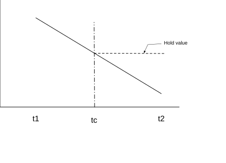
-
ステップ 5. に行きます。
-
-
そうでなければ ステップ 4. に行きます。
-
-
もし \(E_1\) が存在すれば :
-
もし \(E_1\) が
setTargetイベントの場合、-
時刻 \(t_c\) に
setValueAtTimeイベントを暗黙的に挿入し、setTargetが時刻 \(t_c\) に持つであろう値とします。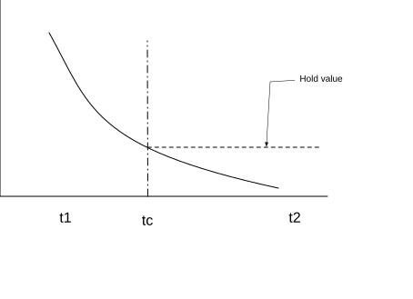
-
ステップ 5. に行きます。
-
-
もし \(E_1\) が
setValueCurveで、開始時刻が \(t_3\)、持続時間が \(d\) の場合-
もし \(t_c \gt t_3 + d\) ならば ステップ 5. に行きます。
-
そうでなければ、
-
実質的にこのイベントを、開始時刻が \(t_3\)、新しい持続時間が \(t_c-t_3\) の
setValueCurveイベントで置き換えます。 しかしながら、これは単なる置き換えではありません。 このオートメーションは、オリジナルと同じ出力を生成するために留意しなくてはならず ( MUST )、ただ異なる持続時間を使用して計算された出力ではありません。 ( これだと、値の曲線を少し違う方法でサンプリングして、異なる結果を生じることになります )。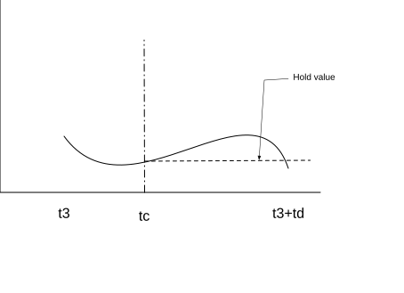
-
ステップ 5. に行きます。
-
-
-
-
時刻 \(t_c\) より後ろのすべてのイベントを削除します。
イベントが追加されない場合は、
cancelAndHoldAtTime()の後のオートメーション値は、元のタイムラインが時刻 \(t_c\) に持つ定数値となります。AudioParam.cancelAndHoldAtTime() メソッドの引数 パラメータ 型 Null可 省略可 説明 cancelTimedouble✘ ✘ この時刻以降の以前スケジュールされたパラメータの変化はキャンセルされます。 これは、 AudioContextのcurrentTime属性と同じ時間軸の時刻です。 もしcancelTimeが負の場合、RangeError例外を発生します ( MUST )。cancelTimeがcurrentTimeより小さい場合はcurrentTimeにクランプされます。戻り値 :AudioParam -
cancelScheduledValues(cancelTime)-
cancelTimeと同じか後ろの時刻にスケジュールされたすべてのパラメータ変化を取り消します。 スケジュールされたパラメータ変化を取り消すという事は、スケジュールされたイベントをイベントリストから削除することを意味します。 オートメーションイベントの時刻 がcancelTime未満の現在動作中のオートメーションも取り消され、( そのオートメーション以前の ) 直前の値が直ちに復元されるため、このような取り消しは不連続を引き起こす可能性があります。cancelAndHoldAtTime()によってスケジュールされたすべてのホールド値で、cancelTimeの後ろにホールドの時刻が発生した場合にもまた削除されます。setValueCurveAtTime()の場合、\(T_0\) と \(T_D\) は それぞれこのイベントのstartTimeとdurationとします。 そしてcancelTimeが \([T_0, T_0 + T_D]\) の範囲内にあるならば、イベントがタイムラインから削除されます。AudioParam.cancelScheduledValues() メソッドの引数 パラメータ 型 Null可 省略可 説明 cancelTimedouble✘ ✘ この時刻以降で既にスケジュールされているパラメータ変化はキャンセルされます。 これは AudioContextのcurrentTime属性と同じ時間軸の時刻です。 もしcancelTimeが負の場合RangeError例外を発生します ( MUST )。cancelTimeがcurrentTimeより小さい場合はcurrentTimeにクランプされます。戻り値 :AudioParam exponentialRampToValueAtTime(value, endTime)-
前にスケジュールされているバラメーター値から指定された値まで、指数的に連続して値を変化させる事をスケジュールします。 フィルタの周波数や再生スピードなどのパラメータは人間の聴覚特性のため、指数的変化が適しています。
時間範囲 \(T_0 \leq t < T_1\) ( ここで \(T_0\) は前のイベントの時刻で \(T_1\) はこのメソッドに渡された
endTimeパラメータです ) に対して次のように計算されます :$$ v(t) = V_0 \left(\frac{V_1}{V_0}\right)^\frac{t - T_0}{T_1 - T_0} $$ここで \(V_0\) は時刻 \(T_0\) での値、\(V_1\) はこのメソッドに渡された
valueパラメータです。 もし \(V_0\) と \(V_1\)が、逆の符号を持つか \(V_0\) が 0 ならば、\(T_0 \le t \lt T_1\) に対して \(v(t) = V_0\) となります。これはまた、0 に向かう指数カーブが不可能である事も示しています。
setTargetAtTime()で適当な時間定数を選択する事で良い近似を得る事ができます。もしこの ExponentialRampToValue イベント以降のイベントがない場合 \(t \geq T_1\) に対して \(v(t) = V_1\) となります
もしこのイベントより前にイベントが存在しない場合、指数カーブは
setValueAtTime(value, currentTime)が呼び出されたかのように動作します。 ここでvalueは属性の現在の値でcurrentTimeはexponentialRampToValueAtTime()が呼び出された時刻のコンテキストのcurrentTimeです。もし、前のイベントが
SetTargetイベントの場合、\(T_0\) と \(V_0\) はSetTargetオートメーションの現在の時刻と値から選択されます。SetTargetイベントがまだ開始されていない場合、\(T_0\) はイベントの開始時刻であり、\(V_0\) はSetTargetイベントの開始直前の値です。 この場合ExponentialRampToValueイベントは実質的にSetTargetイベントを置き換えます。 もしSetTargetイベントが既に開始されている場合、\(T_0\) は現在のコンテキストの時刻であり、\(V_0\) は時刻 \(T_0\) での現在のSetTargetオートメーションの値です。 どちらの場合も、オートメーション曲線は連続しています。AudioParam.exponentialRampToValueAtTime() メソッドの引数 パラメータ 型 Null可 省略可 説明 valuefloat✘ ✘ パラメータが指数変化により指定された時刻に到達する値です。 この値が 0 の場合、 RangeError例外を発生します ( MUST )。endTimedouble✘ ✘ AudioContextのcurrentTime属性と同じ時間軸で、指数変化が終了する時刻です。 もしendTimeが負の値または有限数でない場合RangeError例外を発生します ( MUST )。 もし endTime がcurrentTimeよりも小さい場合、currentTimeにクランプされます。戻り値 :AudioParam linearRampToValueAtTime(value, endTime)-
前にスケジュールされているパラメータ値から指定された値まで、直線的に連続して値を変化させる事をスケジュールします。
時間範囲 \(T_0 \leq t < T_1\) ( ここで \(T_0\) は前のイベントの時刻、\(T_1\) はこのメソッドで指定された
endTimeです ) の間の値は次のように計算されます :$$ v(t) = V_0 + (V_1 - V_0) \frac{t - T_0}{T_1 - T_0} $$ここで \(V_0\) は時刻 \(T_0\) での値、\(V_1\) はこのメソッドで指定された
valueパラメータです。もしこの LinearRampToValue イベント以降にイベントがない場合、\(t \geq T_1\) に対して \(v(t) = V_1\) となります。
もしこのイベントにより前にイベントが存在しない場合、直線変化は
setValueAtTime(value, currentTime)が呼び出されたかのように動作します。 ここでvalueは属性の現在の値でcurrentTimeはlinearRampToValueAtTime()が呼び出されたときのコンテキストのcurrentTimeです。もし、前のイベントが
SetTargetイベントの場合、\(T_0\) と \(V_0\) はSetTargetオートメーションの現在の時刻と値から選択されます。 つまりSetTargetイベントがまだ開始されていない場合、\(T_0\) はイベントの開始時刻であり、\(V_0\) はSetTargetイベントの開始直前の値です。 この場合、LinearRampToValueイベントは実質的にSetTargetイベントを置き換えます。SetTargetイベントが既に開始されている場合、\(T_0\) は現在のコンテキストの時刻であり、\(V_0\) は時刻 \(T_0\) での現在のSetTargetオートメーションの値です。 どちらの場合も、オートメーションの曲線は連続しています。AudioParam.linearRampToValueAtTime() メソッドの引数 パラメータ 型 Null可 省略可 説明 valuefloat✘ ✘ 与えられた時刻にパラメータが直線変化で到達する値です。 endTimedouble✘ ✘ AudioContextのcurrentTime属性と同じ時間軸で、オートメーションが終了する時刻です。 もしendTimeが負の値または有限数でない場合RangeError例外を発生します ( MUST )。 もし endTime がcurrentTimeよりも小さい場合、currentTimeにクランプされます。戻り値 :AudioParam setTargetAtTime(target, startTime, timeConstant)-
指定の時刻から、指定の時定数によって指数的に目標の値に漸近を開始します。 様々な使い方がありますが、これは ADSR エンベロープの "ディケイ" および "リリース" を実装する際に役立ちます。 値は指定の時刻に即、目標値になるのではなく徐々に目標値に向かって変化する事に注意してください。
時間範囲 \(T_0 \leq t\) について、ここで \(T_0\) は
startTimeパラメータの時刻として :$$ v(t) = V_1 + (V_0 - V_1)\, e^{-\left(\frac{t - T_0}{\tau}\right)} $$ここで \(V_0\) は \(T_0\) (
startTimeパラメータ ) での初期値 ([[current value]]属性の値 )、\(V_1\) はtargetパラメータ、そして \(\tau\) はtimeConstantパラメータです。LinearRampToValueまたはExponentialRampToValueイベントがこのイベントの後に続く場合、その動作はそれぞれlinearRampToValueAtTime()またはexponentialRampToValueAtTime()で説明しています。 他のすべてのイベントの場合は、SetTargetイベントは次のイベントの時点で終了します。AudioParam.setTargetAtTime() メソッドの引数 パラメータ 型 Null可 省略可 説明 targetfloat✘ ✘ パラメータが指定の時刻から変化を 開始 する際の目標値です。 startTimedouble✘ ✘ AudioContextのcurrentTime属性と同じ時間軸で指数的漸近を開始する時刻です。 もしstartが負の値または有限数でない場合はRangeError例外を発生します ( MUST )。 もし、startTime がcurrentTimeよりも小さい場合、currentTimeの値にクランプされます。timeConstantfloat✘ ✘ 目標値に漸近する一次フィルタ ( 指数 ) の時定数です。 この値が大きいと変化はゆっくりになります。 値は負の値ではならず ( MUST )、そうでない場合 RangeError例外を発生します ( MUST )。 もしtimeConstantがゼロの場合、出力値は直ちに最終値にジャンプします。 より正確には、timeConstant は、ステップ入力応答 ( 0 から 1 への遷移 ) が与えられた場合、一次線形連続時間不変システムが値 \(1 - 1/e\) ( 約 63.2% ) に達する時間です。戻り値 :AudioParam setValueAtTime(value, startTime)-
指定の時刻になるとパラメータ値を変更するようにスケジュールします。
もしこの
SetValueイベントの後にもうイベントがない場合、\(t \geq T_0\) に対して \(v(t) = V\)、ここで \(T_0\) はstartTimeパラメータ 、そして \(V\) はvalueパラメータの値です。 別の言い方をすれば、値は定数のまま保持されます。もしこの
SetValueイベントの次のイベント ( 時刻は \(T_1\) ) がLinearRampToValueまたはExponentialRampToValueでない場合、\(T_0 \leq t < T_1\) は :$$ v(t) = V $$別の言い方をすれば、値に "ステップ" を作ってこの期間、定数のまま保持されます。
この
SetValueイベントに続く次のイベントがLinearRampToValue型またはExponentialRampToValue型の場合、linearRampToValueAtTime()またはexponentialRampToValueAtTime()をそれぞれ参照してください。AudioParam.setValueAtTime() メソッドの引数 パラメータ Type Null可 省略可 説明 valuefloat✘ ✘ 指定の時刻にパラメータが変化する値です。 startTimedouble✘ ✘ BaseAudioContextのcurrentTime属性と同じ時間軸で与えられた値に変化する時刻です。 もし startTime が負の値または有限数でない場合はRangeError例外を発生します ( MUST )。 もし startTime がcurrentTimeよりも小さい場合、currentTimeにクランプされます。戻り値 :AudioParam setValueCurveAtTime(values, startTime, duration)-
指定の時刻と期間に対して、任意の値の配列を設定します。 値の個数は必要とされる期間に合うようにスケーリングされます。
\(T_0\) を
startTime、\(T_D\) をduration、\(V\) をvalues配列、\(N\) をvalues配列の長さとすると、期間 \(T_0 \le t < T_0 + T_D\) の間、次のようになります :$$ \begin{align*} k &= \left\lfloor \frac{N - 1}{T_D}(t-T_0) \right\rfloor \\ \end{align*} $$そして \(v(t)\) は \(V[k]\) と \(V[k+1]\) の間で直線補間されます。
曲線の期間が終了した後、(\(t \ge T_0 + T_D\)) に対して値は ( もしあれば ) 別のオートメーションイベントまで、最後の曲線の値を保持します。
時刻 \(T_0 + T_D\)、値 \(V[N-1]\) として暗黙的な
setValueAtTime()の呼び出しが行われ、以後のオートメーションはsetValueCurveAtTime()イベントの終わりから開始するようになります。AudioParam.setValueCurveAtTime() メソッドの引数 パラメータ 型 Null可 省略可 説明 valuessequence<float>✘ ✘ パラメータ値の曲線を表す float 値のシーケンスです。 これらの値は、指定された時刻から開始される、指定された期間に割り当てられます。 このメソッドが呼び出されると、オートメーションのためにカーブの内部的なコピーが作成されます。 そのため、それ以降に渡した配列の中身を変更しても AudioParamに対する効果はありません。 この属性の sequenceオブジェクトの長さが 2 未満の場合、 。InvalidStateErrorが発生します ( MUST )startTimedouble✘ ✘ AudioContextのcurrentTime属性と同じ時間軸の曲線の適用を開始する時刻です。 もしstartTimeが負の値または有限数でない場合RangeError例外を発生します ( MUST )。 もし startTime がcurrentTimeよりも小さい場合、currentTimeの値にクランプされます。durationdouble✘ ✘ ( startTimeパラメータの時刻の後 )valuesパラメータに基づいて値が計算される期間の秒数です。 もしdurationが 厳密に正の値でないか、有限数でない場合、RangeError例外を発生します ( MUST )。戻り値 :AudioParam
1.6.3. 値の計算
AudioParam には、単純パラメータ と 複合パラメータ という 2 つの異なる種類があります。 単純パラメータ ( デフォルト ) は、AudioNode の最終的なオーディオ出力を計算するために単独で使用されます。 複合パラメータ は、他の AudioParam と一緒に合わせて計算された値が、AudioNode の出力を計算するための入力となる AudioParam です。
computedValue はオーディオ DSP を制御する最終的な値であり、オーディオレンダリングスレッドによって、それぞれのレンダリング量子の時刻に計算します。
AudioParam の値の計算は 2 つの部分から成ります :
-
value属性と オートメーションイベント から計算される paramIntrinsicValue の値。 -
オーディオ DSP を制御する最終値であり、各 レンダリング量子 中にオーディオレンダリングスレッドによって計算される paramComputedValue 。
これらの値は次のように計算されなくてはなりません ( MUST ) :
-
paramIntrinsicValue は毎回計算されます。 これは
value属性に直接設定された値であるか、以前または現在 オートメーションイベント が存在するならばこれらのイベントから計算された値です。 もしその時間範囲からオートメーションイベントが削除された場合 paramIntrinsicValue 値は変更されずvalue属性が直接設定されるか時間範囲にオートメーションイベントが追加されるまで、以前の値のままになります。 -
[[current value]]を この レンダリング量子 の先頭での paramIntrinsicValue の値にします。 -
paramComputedValue は paramIntrinsicValue の値と 入力される AudioParam バッファ の値の合計です。 合計が
NaNの場合、合計をdefaultValueに置き換えます。 -
この
AudioParamが 複合パラメータ の場合、他のAudioParamと組み合わせてその最終値を計算します。 -
computedValue を paramComputedValue に設定します。
computedValue の 公称範囲 は、このパラメータが実質的に持つことができる最小値と最大値です。 単純パラメータ の場合、computedValue はこのパラメータの 単純な公称範囲 内にクランプされます。 複合パラメータ では、複合される別の AudioParam の値と合わせて計算された後、最終的な値が 公称範囲 にクランプされます。
オートメーションメソッドを使用する場合にも、クランプは依然として適用されます。 ただし、オートメーション自体はクランプが全くないかのように実行され、オートメーションの値が出力に適用される際にのみ、上記のクランプが実行されます。
N. p. setValueAtTime( 0 , 0 ); N. p. linearRampToValueAtTime( 4 , 1 ); N. p. linearRampToValueAtTime( 0 , 2 );
曲線の最初の勾配は 4 であり、最大値 1 に達すると出力は一定に保たれます。 最後に、時刻 2 の近くで、曲線の傾きは -4 になります。 これを図示したのが下のグラフで、破線はクリッピングされない場合に何が起こったかを示し、実線は公称範囲へのクリッピングによる audioparam の実際の予想される動作を示しています。
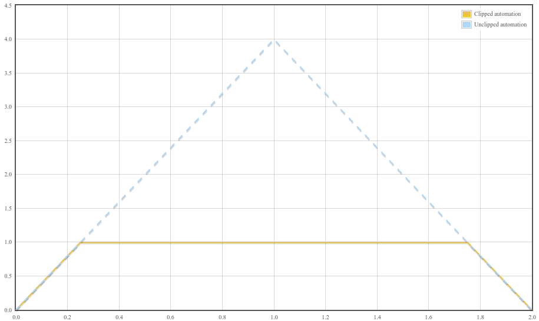
1.6.4. AudioParam オートメーションの例
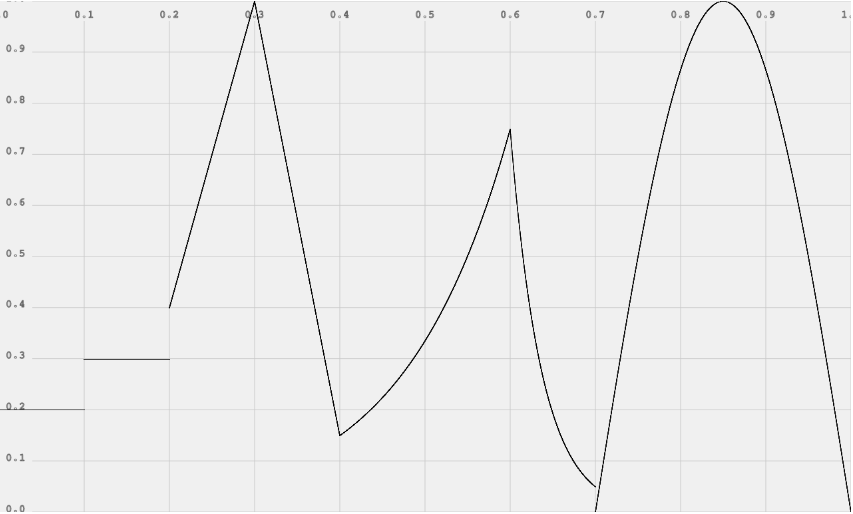
const curveLength= 44100 ; const curve= new Float32Array( curveLength); for ( const i= 0 ; i< curveLength; ++ i) curve[ i] = Math. sin( Math. PI* i/ curveLength); const t0= 0 ; const t1= 0.1 ; const t2= 0.2 ; const t3= 0.3 ; const t4= 0.325 ; const t5= 0.5 ; const t6= 0.6 ; const t7= 0.7 ; const t8= 1.0 ; const timeConstant= 0.1 ; param. setValueAtTime( 0.2 , t0); param. setValueAtTime( 0.3 , t1); param. setValueAtTime( 0.4 , t2); param. linearRampToValueAtTime( 1 , t3); param. linearRampToValueAtTime( 0.8 , t4); param. setTargetAtTime( .5 , t4, timeConstant); // Compute where the setTargetAtTime will be at time t5 so we can make // the following exponential start at the right point so there's no // jump discontinuity. From the spec, we have // v(t) = 0.5 + (0.8 - 0.5)*exp(-(t-t4)/timeConstant) // Thus v(t5) = 0.5 + (0.8 - 0.5)*exp(-(t5-t4)/timeConstant) param. setValueAtTime( 0.5 + ( 0.8 - 0.5 ) * Math. exp( - ( t5- t4) / timeConstant), t5); param. exponentialRampToValueAtTime( 0.75 , t6); param. exponentialRampToValueAtTime( 0.05 , t7); param. setValueCurveAtTime( curve, t7, t8- t7);
1.7. AudioScheduledSourceNode インタフェース
このインタフェースは、AudioBufferSourceNode 、ConstantSourceNode 、および OscillatorNode などのソースノードの共通の機能を表します。
( start() を呼び出すことによって ) ソースが開始されるより前は、ソースノードは無音 ( 0 ) を出力しなければなりません ( MUST )。 ( stop() を呼び出すことによって ) ソースが停止した後、ソースは無音 ( 0 ) を出力しなければなりません ( MUST )。
AudioScheduledSourceNode は直接インスタンス化することはできませんが、代わりにソースノードの具体的なインタフェースに拡張されています。
AudioScheduledSourceNode は関連付けられている BaseAudioContext の currentTime が AudioScheduledSourceNode が開始するように設定されている時間以上で、停止するように設定されている時間未満の場合に、再生中 になります。
AudioScheduledSourceNode は作成時から内部にブーリアンスロット [[source started]] を持っており、最初は false に設定されています。
[Exposed =Window ]interface AudioScheduledSourceNode :AudioNode {attribute EventHandler onended ;undefined start (optional double when = 0);undefined stop (optional double when = 0); };
1.7.1. 属性
onended, EventHandler 型-
AudioScheduledSourceNode型のノードにディスパッチされるendedイベントの イベントハンドラ を設定するために使用される属性です。 ソースノードが再生を停止した時 (具体的にはノードによって決定されます)、Eventインタフェースを使用するイベントがイベントハンドラにディスパッチされます。すべての
AudioScheduledSourceNodeはstop()によって設定された停止時間に達するとendedイベントが発行されます。AudioBufferSourceNodeの場合は、再生がdurationの時間に達したか、buffer全体を再生し終わった場合にも、イベントが送出されます。
1.7.2. メソッド
start(when)-
指定した時刻に音を再生するようにスケジュールします。
このメソッドが呼ばれると以下の手順を実行します :-
もしこの
AudioScheduledSourceNodeの内部スロット[[source started]]が true ならば、InvalidStateError例外を発生します ( MUST )。 -
後述するパラメータの制約のために発生するエラーがないかを調べます。 もし何らかの例外が発生した場合、以降のステップを中止します。
-
この
AudioScheduledSourceNodeの内部スロット[[source started]]をtrueに設定します。 -
メッセージ内のパラメータ値を含めて
AudioScheduledSourceNodeを開始するための 制御メッセージをキューに入れます。 -
以下の条件が満たされている場合には、レンダリングスレッドで実行 するための 制御メッセージ を関連付けられた
AudioContextに送ります :-
コンテキストの
[[制御スレッドの状態]]が "suspended" となっている。 -
コンテキストが スタート可能 になっている。
-
[[suspended by user]]フラグが false になっている。
注 :これにより、それまで起動を止められていた
AudioContextをstart()で スタート可能 になります。 -
AudioScheduledSourceNode.start(when) メソッドの引数 パラメータ 型 Null可 省略可 説明 whendouble✘ ✔ whenパラメータは、サウンドの再生開始時刻を秒単位で表します。 これはAudioContextのcurrentTime属性と同じ時間軸を使用します。 いつAudioScheduledSourceNodeが信号を出力するかは開始時刻に依存し、whenの正確な値は近いサンプルフレーム単位に丸めずに使用されます。 この値に 0 が渡された場合、または値がcurrentTimeよりも小さい場合は、音が即時に再生されます。 もしwhenが負の場合にはRangeError例外を発生します ( MUST )。戻り値 :undefined -
stop(when)-
正確な時刻に音の再生を停止するようにスケジュールします。 もし
stopがすでに呼び出された後に再度呼び出された場合は、最後の呼び出しだけが適用されます。 後続のコールの前にバッファがすでに停止していない限り、前回の呼び出しで設定された停止時刻は適用されません。 バッファがすでに停止している場合は、さらにstopを呼び出しても効果はありません。 スケジュールされた開始時刻よりも前に停止時刻に達すると、音は再生されません。このメソッドが呼ばれた時、以下のステップを実行します :-
もしこの
AudioScheduledSourceNodeの内部スロット[[source started]]がtrueでない時、InvalidStateError例外を発生します ( MUST )。 -
後述するパラメータの制約のために発生するエラーがないかを調べます。
-
パラメータ値を含めて
AudioScheduledSourceNodeを停止するための 制御メッセージをキューに入れます。
もしノードがAudioBufferSourceNodeの場合、AudioBufferSourceNodeを停止する 制御メッセージ を実行することは 再生アルゴリズム のhandleStop()関数を呼び出すことを意味します。AudioScheduledSourceNode.stop(when) メソッドの引数 パラメータ 型 Null可 省略可 説明 whendouble✘ ✔ whenパラメータは、ソースの再生を停止する時間 ( 秒 ) を示します。 これはAudioContextのcurrentTime属性と同じ時間軸を使用します。 この値に 0 が渡された場合、または値がcurrentTimeよりも小さい場合は、音の再生は即時に停止します。 もしwhenが負の場合にはRangeError例外を発生します ( MUST )。戻り値 :undefined -
1.8. AnalyserNode インタフェース
このインタフェースはリアルタイムの周波数および時間領域の分析を可能にするノードを表します。 オーディオストリームは加工されずに入力から出力に渡されます。
| プロパティ | 値 | 説明 |
|---|---|---|
numberOfInputs
| 1 | |
numberOfOutputs
| 1 | この出力は接続されずに放置される事もあります。 |
channelCount
| 2 | |
channelCountMode
| "max"
| |
channelInterpretation
| "speakers"
| |
| tail-time | No |
[Exposed =Window ]interface AnalyserNode :AudioNode {constructor (BaseAudioContext ,context optional AnalyserOptions = {});options undefined getFloatFrequencyData (Float32Array );array undefined getByteFrequencyData (Uint8Array );array undefined getFloatTimeDomainData (Float32Array );array undefined getByteTimeDomainData (Uint8Array );array attribute unsigned long fftSize ;readonly attribute unsigned long frequencyBinCount ;attribute double minDecibels ;attribute double maxDecibels ;attribute double smoothingTimeConstant ; };
1.8.1. コンストラクタ
AnalyserNode(context, options)-
コンストラクタが
BaseAudioContextc とオプションオブジェクト option を指定して呼び出される場合、ユーザーエージェントは context と options を引数として AudioNode this を 初期化 しなくてはなりません ( MUST )。AnalyserNode.constructor() メソッドの引数 パラメータ 型 Null可 省略可 説明 contextBaseAudioContext✘ ✘ 新しく作成される AnalyserNodeが 関連付け られるBaseAudioContextです。optionsAnalyserOptions✘ ✔ この AnalyserNodeのオプションの初期パラメータ値です。
1.8.2. 属性
fftSize, , unsigned long 型-
周波数領域の分析に使用する FFT のサイズ ( サンプルフレーム数 ) です。 これは 32 から 32768 までの 2 の累乗でなくてはならず ( MUST )、そうでなければ、
IndexSizeError例外を発生します ( MUST )。 デフォルトの値は 2048 です。 大きな FFT サイズは計算量が増加する事に注意してください。fftSizeが異なる値に変更されると、(getByteFrequencyData()およびgetFloatFrequencyData()の ) 周波数データの平滑化に関連するすべての状態がリセットされます。 つまり、時間の経過による平滑化 に使用される 前のブロック のデータ、\(\hat{X}_{-1}[k]\) が、すべての \(k\) に対して 0 に設定されます。fftSizeを増加させた時、現在の時間領域のデータ はそれまでと異なり、より過去のサンプルフレームを含んで伸長する必要があることに注意してください。 これは実質的にAnalyserNodeは最後の 32768 のサンプルフレームを常に保持しなければならない ( MUST ) ことを意味し、現在の時間領域のデータ は、常に最新のfftSizeの大きさのサンプルフレームとなります。 frequencyBinCount, unsigned long 型, readonly-
FFT サイズの半分の値です。
maxDecibels, double 型-
maxDecibelsは FFT 解析データを unsigned byte 値へ変換するスケーリングの際の最大パワー値です。 デフォルトの値は -30 です。 もしこの属性の値がminDecibelsより小さいか同じ値に設定された場合IndexSizeError例外を発生します ( MUST )。 minDecibels, double 型-
minDecibelsは FFT 解析データを unsigned byte 値へ変換するスケーリングの際の最少パワー値です。 デフォルトの値は -100 です。 もしこの属性の値がmaxDecibelsよりも大きいか同じに設定された場合IndexSizeError例外を発生します ( MUST )。 smoothingTimeConstant, double 型-
0 -> 1 の範囲の値で、0 ならば最後の解析フレームに対して時間平均が取られない事を表します。 デフォルトの値は 0.8 です。 もしこの属性の値が 0 より小さいか 1 より大きい値が設定された場合
IndexSizeError例外を発生します ( MUST )。
1.8.3. メソッド
getByteFrequencyData(array)-
現在の周波数データ を array に 書き込み ます。 array の バイト長 が
frequencyBinCountより短い場合、余った要素は捨てられます。 array の バイト長 がfrequencyBinCountより大きい場合、超過分の要素は無視されます。 周波数データの計算には、最新のfftSizeのフレームが使用されます。getByteFrequencyData()またはgetFloatFrequencyData()への別の呼び出しが前の呼び出しと同じ レンダリング量子 内で発生した場合、現在の周波数データ は同じデータで更新されません。 代わりに、以前に計算されたデータが返されます。符号なしバイト配列に格納される値は次のように計算されます。 FFT 窓関数と時間的スムージング で説明されているように \(Y[k]\) を 現在の周波数データ とします。 次に、バイト値 \(b[k]\) は
$$ b[k] = \left\lfloor \frac{255}{\mbox{dB}_{max} - \mbox{dB}_{min}} \left(Y[k] - \mbox{dB}_{min}\right) \right\rfloor $$ここで \(\mbox{dB}_{min}\) は
minDecibels、そして \(\mbox{dB}_{max}\) はmaxDecibelsです。 もし \(b[k]\) が 0 から 255 の範囲外である場合は \(b[k]\) はその範囲に収まるようにクリップされます。AnalyserNode.getByteFrequencyData() の引数 パラメータ 型 Null可 省略可 説明 arrayUint8Array✘ ✘ このパラメータは周波数領域の分析データをコピーする場所を示します。 戻り値 :undefined getByteTimeDomainData(array)-
現在の時間領域データ ( 波形データ ) を array に 書き込み ます。 array の バイト長 が
fftSizeより短い場合、余った要素は捨てられます。 array の バイト長 がfftSizeより大きい場合、超過分の要素は無視されます。 バイトデータの計算には、最新のfftSizeのフレームが使用されます。符号なしバイト配列に書き込まれる値は次のように計算されます。 \(x[k]\) を時間領域データとします。 バイト値 \(b[k]\) は、
$$ b[k] = \left\lfloor 128(1 + x[k]) \right\rfloor. $$もし \(b[k]\) が 0 から 255 の範囲外の場合、\(b[k]\) は範囲内にクリップされます。
AnalyserNode.getByteTimeDomainData() の引数 パラメータ 型 Null可 省略可 説明 arrayUint8Array✘ ✘ このパラメータは時間領域のサンプルデータをコピーする場所を示します。 戻り値 :undefined getFloatFrequencyData(array)-
現在の周波数データ を array に 書き込み ます。 array の要素数が
frequencyBinCountより少ない場合、余った要素は捨てられます。 array の要素数がfrequencyBinCountより多い場合、超過分の要素は無視されます。 周波数データの計算には最新のfftSizeのフレームが使用されます。以前の呼び出しと同じ レンダリング量子 内で
getFloatFrequencyData()またはgetByteFrequencyData()が再度呼び出された場合、現在の周波数データ は同じデータで更新されず、代わりに以前に計算されたデータが返されます。周波数データの単位は dB です。
AnalyserNode.getFloatFrequencyData() の引数 パラメータ 型 Null可 省略可 説明 arrayFloat32Array✘ ✘ このパラメータは周波数領域の分析データをコピーする場所を示します。 戻り値 :undefined getFloatTimeDomainData(array)-
現在の時間領域データ (波形データ) を array に 書き込み ます。 array の要素数が
fftSizeの値より少ない場合、余った要素は捨てられます。 array の要素数がfftSizeの値より多い場合、超過分の要素は無視されます。 最新のfftSizeフレームが書き込まれます (ダウンミックス後)。AnalyserNode.getFloatTimeDomainData() の引数 パラメータ 型 Null可 省略可 説明 arrayFloat32Array✘ ✘ このパラメータは時間領域のサンプルデータをコピーする場所を示します。 戻り値 :undefined
1.8.4. AnalyserOptions
これは AnalyserNode を生成する際に使用するオプションを指定します。 すべてのメンバーは省略可能で、もし指定されない場合は通常のデフォルト値がノードの生成に使用されます。
dictionary AnalyserOptions :AudioNodeOptions {unsigned long fftSize = 2048;double maxDecibels = -30;double minDecibels = -100;double smoothingTimeConstant = 0.8; };
1.8.4.1. ディクショナリ AnalyserOptions メンバー
fftSize, unsigned long 型, デフォルト値は2048-
周波数領域解析のための FFT サイズとして要求する初期値です。
maxDecibels, double 型, デフォルト値は-30-
FFT 解析の最大パワー (dB) として要求する初期値です。
minDecibels, double 型, デフォルト値は-100-
FFT 解析の最小パワー (dB) として要求する初期値です。
smoothingTimeConstant, double 型, デフォルト値は0.8-
FFT 解析のスムーズ化定数として要求する初期値です。
1.8.5. 時間領域のダウンミックス
現在の時間領域データ が計算されるとき、入力信号は channelCount が 1、channelCountMode が "max" であり、channelInterpretation が "speakers" であるかのように、モノラルに ダウンミックス されなければなりません。 これは、AnalyserNode 自体の設定とは無関係です。 最新の code class="idl">fftSize フレームがこのダウンミックス処理に使用されます。
1.8.6. FFT 窓関数と時間的スムージング
現在の周波数データ が計算されるとき、次の処理が行われます :
-
現在の時間領域データ を計算します。
-
時間領域の入力データに対して ブラックマン窓を適用 します。
-
窓関数を通した時間領域の入力データからイマジナリとリアルの周波数データを得るため、フーリエ変換を適用 します。
-
周波数領域データに 時間的スムージング の処理を行います。
-
dB への変換 を行います。
次の式では \(N\) をこの AnalyserNode の fftSize 属性の値とします。
$$
\begin{align*}
\alpha &= \mbox{0.16} \\ a_0 &= \frac{1-\alpha}{2} \\
a_1 &= \frac{1}{2} \\
a_2 &= \frac{\alpha}{2} \\
w[n] &= a_0 - a_1 \cos\frac{2\pi n}{N} + a_2 \cos\frac{4\pi n}{N}, \mbox{ for } n = 0, \ldots, N - 1
\end{align*}
$$
窓関数を通した信号 \(\hat{x}[n]\) は
$$
\hat{x}[n] = x[n] w[n], \mbox{ for } n = 0, \ldots, N - 1
$$
$$
X[k] = \frac{1}{N} \sum_{n = 0}^{N - 1} \hat{x}[n]\, W^{-kn}_{N}
$$
ただし \(k = 0, \dots, N/2-1\) where \(W_N = e^{2\pi i/N}\)
-
\(\hat{X}_{-1}[k]\) を 前回のブロック に対するこの処理の結果とします。 前回のブロック は前回の 時間的スムージング 処理で計算されたバッファとして定義され、もし 時間的スムージング 処理が最初の 1 回目の場合は \(N\) 個の 0 からなる配列になります。
-
\(\tau\) を この
AnalyserNodeのsmoothingTimeConstant属性の値とします。 -
\(X[k]\) を現在のブロックの フーリエ変換の適用 の結果とします。
そしてスムージングされた値 \(\hat{X}[k]\) は次の式で計算されます
$$
\hat{X}[k] = \tau\, \hat{X}_{-1}[k] + (1 - \tau)\, \left|X[k]\right|
$$
-
もし \(\hat{X}[k]\) が
NaN、正の無限大または負の無限大 ならば \(\hat{X}[k]\) = 0 とします。
ただし \(k = 0, \ldots, N - 1\).
$$
Y[k] = 20\log_{10}\hat{X}[k]
$$
ただし \(k = 0, \ldots, N-1\).
この配列、\(Y[k]\) は getFloatFrequencyData() の出力の配列にコピーされます。 getByteFrequencyData() に対しては、\(Y[k]\) は minDecibels と maxDecibelsminDecibels が 0、maxDecibels
1.9. AudioBufferSourceNode インタフェース
このインタフェースは AudioBuffer によってメモリー上に保持されているオーディオデータからのオーディオソースを表します。 これはオーディオデータの再生に高度なスケジューリングの柔軟性と精度が要求される場合に役立ちます。 もしネットワークからあるいはディスクからのデータをサンプル精度で再生する必要がある場合、再生機能の実装には AudioWorkletNode を使用しなくてはなりません。
start() メソッドはいつ再生されるかをスケジュールするために使用されます。 start() メソッドを複数回呼び出す事はできません。 再生は ( もし loop 属性が false の場合 ) バッファのオーディオデータがすべて再生されると、あるいは stop() メソッドが呼び出されて指定された時刻になると自動的に停止します。 より詳細には start() および stop() の説明を参照してください。
| プロパティ | 値 | 説明 |
|---|---|---|
numberOfInputs
| 0 | |
numberOfOutputs
| 1 | |
channelCount
| 2 | |
channelCountMode
| "max"
| |
channelInterpretation
| "speakers"
| |
| tail-time | No |
出力のチャンネル数は常に buffer 属性に指定された AudioBuffer のチャンネル数と同じになります。 もし buffer が null の場合、チャンネルは無音の 1 チャンネルとなります。
さらに、バッファに 1 つ以上のチャンネルがある場合 AudioBufferSourceNode の出力は、次のいずれかの条件が成立した後、レンダリング量子の開始時に 1 チャンネルの無音に変化しなくてはなりません :
AudioBufferSourceNode の 再生ヘッド位置 は、バッファ内の最初のサンプルフレームの時刻を基準にした秒単位の時間オフセットとして定義される値です。 その値はノードの playbackRate および detune パラメータとは独立したものとして想定されます。 一般に、再生ヘッド位置はサブサンプルの精度であり、正確なサンプルフレームの位置を参照するものではありません。 その値は 0 とバッファ全体の長さの間で有効な値を取ります。
playbackRate および detune 属性は、複合パラメータ を形成します。 それらは組み合わせて使用され、次のように computedPlaybackRate 値を決定します :
computedPlaybackRate(t) = playbackRate(t) * pow(2, detune(t) / 1200)
この 複合パラメータ の 公称範囲 は \((-\infty, \infty)\) です。
AudioBufferSourceNode は作成された時から ブーリアンの内部スロット [[buffer set]] を持っており、初期値は false に設定されています。
[Exposed =Window ]interface AudioBufferSourceNode :AudioScheduledSourceNode {constructor (BaseAudioContext ,context optional AudioBufferSourceOptions = {});options attribute AudioBuffer ?buffer ;readonly attribute AudioParam playbackRate ;readonly attribute AudioParam detune ;attribute boolean loop ;attribute double loopStart ;attribute double loopEnd ;undefined start (optional double when = 0,optional double offset ,optional double duration ); };
1.9.1. コンストラクタ
AudioBufferSourceNode(context, options)-
コンストラクタが
BaseAudioContextc とオプションオブジェクト option を指定して呼び出される時、ユーザーエージェントは context と options を引数として AudioNode this を 初期化 しなくてはなりません ( MUST )。AudioBufferSourceNode.constructor() の引数 パラメータ 型 Null可 省略可 説明 contextBaseAudioContext✘ ✘ 作成した新しい AudioBufferSourceNodeが 関連付け られるBaseAudioContextです。optionsAudioBufferSourceOptions✘ ✔ この AudioBufferSourceNodeのオプションの初期パラメータ値です。
1.9.2. 属性
buffer, AudioBuffer 型, nullable-
再生されるオーディオのリソースを表します。
buffer属性を設定する際は次の手順が行われます :-
new buffer を
bufferに割り当てるAudioBufferまたはnullとします。 -
もし new buffer が
nullでなく、[[buffer set]]が true ならば、InvalidStateError例外を発生してこれらの手順を中止します。 -
もし new buffer が
nullでなければ、[[buffer set]]を true に設定します。 -
new buffer を
buffer属性に割り当てます。
-
detune, AudioParam 型, readonly-
オーディオストリームをレンダリングする速度を変調する追加のパラメータで、単位はセントです。 このパラメータは、
playbackRateと組み合わせて computedPlaybackRate を計算する 複合パラメータ です。パラメータ 値 説明 defaultValue0 minValue最も負の単精度浮動小数点値 約 -3.4028235e38 maxValue最も正の単精度浮動小数点値 約 3.4028235e38 automationRate" k-rate"オートメーション速度の制約 があります。 loop, boolean 型-
オーディオデータの
loopStartとloopEndで指定された範囲を繰り返してループ再生するかどうかを指定します。 デフォルトはfalseです。 loopEnd, double 型-
loop属性が true の場合、ループの終了位置を示すオプションの 再生ヘッド位置 です。 その値そのものはループ範囲に含まれません。 そのデフォルトのvalueは 0 で、通常は 0 から バッファの長さの範囲の任意の値に設定できます。loopEndが 0 より小さいまたは 0 である、またはloopEndがバッファの長さよりも長い場合、ループはバッファの最後が終了位置になります。 loopStart, double 型-
loop属性が true の場合にループを開始するオプションの 再生ヘッド位置 です。 そのデフォルトのvalueは 0 で、0 からバッファの長さの範囲の任意の値に設定できます。 もしloopStartが 0 より小さい場合、ループは 0 から開始します。 もしloopStartがバッファの長さより大きい場合、ループはバッファの最後から開始します。 playbackRate, AudioParam 型, readonly-
オーディオストリームをレンダリングする速度です。 これは、
detuneと組み合わせて computedPlaybackRate が計算される 複合パラメータ です。パラメータ 値 説明 defaultValue1 minValue最も負の浮動小数点値 約 -3.4028235e38 maxValue最も正の浮動小数点値 約 3.4028235e38 automationRate" k-rate"オートメーション速度の制約 があります。
1.9.3. メソッド
start(when, offset, duration)-
指定の時刻に音の再生開始をスケジュールします。
メソッドが呼び出されたとき、以下の手順が実行されます:-
もしこの
AudioBufferSourceNodeの内部スロット[[source started]]がtrueならばInvalidStateError例外を発生します ( MUST )。 -
後述するパラメータの制約のために発生するエラーがないか調べます。 もしこのステップの途中で何らかの例外が発生した場合、手順を中止します。
-
この
AudioBufferSourceNodeの内部スロット[[source started]]をtrueに設定します。 -
AudioBufferSourceNodeを開始するため、パラメータと共に 制御メッセージをキューに入れます。 -
次の条件が満たされている場合、関連付けられた
AudioContextに 制御メッセージ を送って、レンダリングスレッドの実行 を開始します :-
コンテキストの
[[制御スレッドの状態]]がsuspendedになっている。 -
コンテキストが スタート可能 である。
-
[[suspended by user]]フラグがfalseになっている。
注 :この条件の時、それ以前は起動がブロックされていた
AudioContextがstart()で スタート可能になります。 -
AudioBufferSourceNode.start(when, offset, duration) の引数 パラメータ 型 Null可 省略可 説明 whendouble✘ ✔ whenパラメータは、再生の開始時刻を ( 秒で ) 指定します。 これはAudioContextのcurrentTime属性と同じ時間軸の時刻を使用します。 もしこの値に 0 、あるいは currentTime よりも小さな値を渡した場合、音は即時に再生されます。 もしwhenが負の値の場合、RangeError例外を発生します ( MUST )。offsetdouble✘ ✔ offsetパラメータは再生を開始する 再生ヘッド位置 を指定します。 もしこの値に 0 が渡された場合、再生はバッファの先頭から開始されます。 もしoffsetが負の値の場合はRangeError例外を発生します ( MUST )。 もしoffsetがloopEndより大きく、playbackRateが正か 0 で、loop がtrueの場合は、再生はloopEndから始まります。 もしoffsetがloopStartより大きく、playbackRateが負、loopがtrueの場合、再生はloopStartから始まります。offsetはstartTimeに到達したとき [0,duration] の範囲に暗黙的にクランプされます。 ここでdurationはこのAudioBufferSourceNodeのbuffer属性に設定されているAudioBufferのduration属性の値です。durationdouble✘ ✔ durationパラメータは、再生される音の持続時間を表し、全体または部分的なループの反復を含む、出力されるバッファ内容全体の秒数で表します。durationの単位は、playbackRateの影響とは無関係です。 例えば、再生速度が 0.5 で 5 秒間のdurationの場合、5 秒間分のバッファ内容が半分の速度で出力され、10 秒間の出力が生成されます。durationが負の場合、RangeError例外を発生します ( MUST )。戻り値 :undefined -
1.9.4. AudioBufferSourceOptions
AudioBufferSourceNode を生成する際のオプションを指定します。 すべてのメンバーは省略可能です。 指定されていない場合、通常のデフォルト値がノードの生成に使用されます。
dictionary AudioBufferSourceOptions {AudioBuffer ?buffer ;float detune = 0;boolean loop =false ;double loopEnd = 0;double loopStart = 0;float playbackRate = 1; };
1.9.4.1. ディクショナリ AudioBufferSourceOptions メンバー
buffer, AudioBuffer 型, nullable-
再生するオーディオのデータを指定します。 これは
bufferをAudioBufferSourceNodeのbuffer属性に割り当てるのと等価です。 detune, float 型, デフォルト値は0-
detuneAudioParam の初期値です。 loop, boolean 型, デフォルト値はfalse-
loop属性の初期値です。 loopEnd, double 型, デフォルト値は0-
loopEnd属性の初期値です。 loopStart, double 型, デフォルト値は0-
loopStart属性の初期値です。 playbackRate, float 型, デフォルト値は1-
playbackRateAudioParam の初期値です。
1.9.5. ループ再生
このセクションは非基準情報です。 基準としての要件については 再生アルゴリズム を参照してください。
loop 属性を true に設定すると、端点 loopStart および loopEnd によって定義される範囲が、一度その範囲内のどこかが再生されると、その後範囲の再生を繰り返します。 loop が true である間、ループ再生は次のいずれかが発生するまで続きます :
ループの範囲は loopStart から 自身を含まない loopEnd までの領域を占めているとみなされます。 ループ範囲の再生方向は、ノードの再生速度の符号を考慮します。 再生速度が正の場合、ループは loopStart から loopEnd まで; 再生速度が負の場合は loopEnd から loopStart までのループが発生します。
ループは start() の offset 引数の解釈には影響しません。 再生は常に指定されたオフセットから開始され、再生中にループ範囲に差し掛かった場合にのみループが開始されます。
有効なループ開始点と終了点は、後述のアルゴリズムで定義されているように、0 から バッファの長さの間にある必要があります。 loopEnd は loopStart と同じかより後ろになるようにさらに制約されます。 これらの制約のいずれかに沿わない場合は、ループ範囲はバッファ全体を指すとみなされます。
ループの端点はサブサンプルの精度で扱われます。 端点が正確なサンプルフレームのオフセットにならない場合、または再生レートが 1 に等しくない場合、ループの再生は、ループの終了点と開始点が一致するように繋ぎ合わされ、それがバッファの連続した領域のオーディオであるように補間されます。
ループ関連のプロパティは、バッファの再生中に変化させても良く、一般に次のレンダリング量子から有効となります。 正確な内容については、後述の基準としての再生アルゴリズムによって定義されます。
loopStart と loopEnd 属性のデフォルト値はどちらも 0 です。 loopEnd の値が 0 である事はバッファ全体の長さと等価であるため、デフォルトのループ範囲はバッファ全体になります。
ループの端点の値は、バッファのサンプルレートを前提とした時間のオフセットとして表されています。 これらの値は再生中に動的に変化可能なノードの playbackRate パラメータとは無関係であることに注意してください。
1.9.6. AudioBuffer 内容の再生
この基準情報のセクションでは、再生中に動的に変化する可能性がある次の要素の組み合わせの影響を考慮しつつ、バッファ内容の再生について定義します :
-
サブサンプル精度で表現される開始オフセット。
-
サブサンプル精度で表現され、再生中に動的に変化可能なループポイント。
-
再生速度とデチューンパラメータ。 これらは組み合わされて、単一の computedPlaybackRate となり、その値は有限の正または負の値となります。
AudioBufferSourceNode の出力を生成するための内部のアルゴリズムは、以下の原則に従います :
-
出力の効率または品質を向上させるため、バッファのリサンプリングが必要になったとき、任意に UA によって実行されます
-
サブサンプル単位の開始オフセットまたはループポイントは、サンプルフレーム間に補間を必要とすることがあります。
-
ループバッファの再生は、補間による影響を除いて、ループ部のオーディオ内容が連続して繰り返される非ループのバッファと同じように振舞わなくてはなりません。
アルゴリズムの説明は次のとおりです :
let buffer; // AudioBuffer employed by this node let context; // AudioContext employed by this node // The following variables capture attribute and AudioParam values for the node. // They are updated on a k-rate basis, prior to each invocation of process(). let loop; let detune; let loopStart; let loopEnd; let playbackRate; // Variables for the node's playback parameters let start= 0 , offset= 0 , duration= Infinity ; // Set by start() let stop= Infinity ; // Set by stop() // Variables for tracking node's playback state let bufferTime= 0 , started= false , enteredLoop= false ; let bufferTimeElapsed= 0 ; let dt= 1 / context. sampleRate; // Handle invocation of start method call function handleStart( when, pos, dur) { if ( arguments. length>= 1 ) { start= when; } offset= pos; if ( arguments. length>= 3 ) { duration= dur; } } // Handle invocation of stop method call function handleStop( when) { if ( arguments. length>= 1 ) { stop= when; } else { stop= context. currentTime; } } // Interpolate a multi-channel signal value for some sample frame. // Returns an array of signal values. function playbackSignal( position) { /* This function provides the playback signal function for buffer, which is a function that maps from a playhead position to a set of output signal values, one for each output channel. If |position| corresponds to the location of an exact sample frame in the buffer, this function returns that frame. Otherwise, its return value is determined by a UA-supplied algorithm that interpolates sample frames in the neighborhood of |position|. If |position| is greater than or equal to |loopEnd| and there is no subsequent sample frame in buffer, then interpolation should be based on the sequence of subsequent frames beginning at |loopStart|. */ ... } // Generate a single render quantum of audio to be placed // in the channel arrays defined by output. Returns an array // of |numberOfFrames| sample frames to be output. function process( numberOfFrames) { let currentTime= context. currentTime; // context time of next rendered frame const output= []; // accumulates rendered sample frames // Combine the two k-rate parameters affecting playback rate const computedPlaybackRate= playbackRate* Math. pow( 2 , detune/ 1200 ); // Determine loop endpoints as applicable let actualLoopStart, actualLoopEnd; if ( loop&& buffer!= null ) { if ( loopStart>= 0 && loopEnd> 0 && loopStart< loopEnd) { actualLoopStart= loopStart; actualLoopEnd= Math. min( loopEnd, buffer. duration); } else { actualLoopStart= 0 ; actualLoopEnd= buffer. duration; } } else { // If the loop flag is false, remove any record of the loop having been entered enteredLoop= false ; } // Handle null buffer case if ( buffer== null ) { stop= currentTime; // force zero output for all time } // Render each sample frame in the quantum for ( let index= 0 ; index< numberOfFrames; index++ ) { // Check that currentTime and bufferTimeElapsed are // within allowable range for playback if ( currentTime< start|| currentTime>= stop|| bufferTimeElapsed>= duration) { output. push( 0 ); // this sample frame is silent currentTime+= dt; continue ; } if ( ! started) { // Take note that buffer has started playing and get initial // playhead position. if ( loop&& computedPlaybackRate>= 0 && offset>= actualLoopEnd) { offset= actualLoopEnd; } if ( computedPlaybackRate< 0 && loop&& offset< actualLoopStart) { offset= actualLoopStart; } bufferTime= offset; started= true ; } // Handle loop-related calculations if ( loop) { // Determine if looped portion has been entered for the first time if ( ! enteredLoop) { if ( offset< actualLoopEnd&& bufferTime>= actualLoopStart) { // playback began before or within loop, and playhead is // now past loop start enteredLoop= true ; } if ( offset>= actualLoopEnd&& bufferTime< actualLoopEnd) { // playback began after loop, and playhead is now prior // to the loop end enteredLoop= true ; } } // Wrap loop iterations as needed. Note that enteredLoop // may become true inside the preceding conditional. if ( enteredLoop) { while ( bufferTime>= actualLoopEnd) { bufferTime-= actualLoopEnd- actualLoopStart; } while ( bufferTime< actualLoopStart) { bufferTime+= actualLoopEnd- actualLoopStart; } } } if ( bufferTime>= 0 && bufferTime< buffer. duration) { output. push( playbackSignal( bufferTime)); } else { output. push( 0 ); // past end of buffer, so output silent frame } bufferTime+= dt* computedPlaybackRate; bufferTimeElapsed+= dt* computedPlaybackRate; currentTime+= dt; } // End of render quantum loop if ( currentTime>= stop) { // End playback state of this node. No further invocations of process() // will occur. Schedule a change to set the number of output channels to 1. } return output; }
次の非基準の図は、様々な主要シナリオでのアルゴリズムの動作を示しています。 バッファの動的なリサンプリングは考慮されませんが、ループ位置の時間が変更されない限り、結果の再生には重大な影響はありません。 すべての図において、次の規則が適用されます :
-
コンテキストのサンプルレートは 1000 Hz とします。
-
AudioBufferの内容の最初のサンプルを x の原点とします。 -
x 原点を
startの時刻として出力信号をサンプルフレームとともに示します。 -
UA は他の補間技術を使う事もできますが、直線補間として図示しています。
-
図に示されている
durationの値は、start()の引数ではなくbufferを参照します。
この図は、バッファ内の最後のサンプルフレームの後にエンドポイントがある単純なループがあるバッファの基本的な再生を示しています :
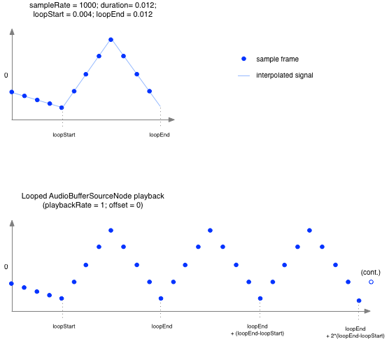
AudioBufferSourceNode の基本再生この図は、playbackRate の補間を示し、1 つおきに出力サンプルフレームが補間される、バッファコンテンツの半分の速度での再生を示しています。 特に注目すべき点は、ループされた出力の最後のサンプルフレームで、ループの開始点を使用して補間されます。
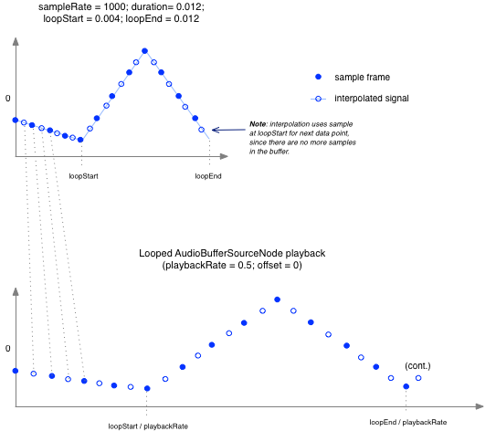
AudioBufferSourceNode playbackRate の補間この図はサンプルレートの補間を示し、サンプルレートがコンテキストのサンプルレートの 50% であるバッファの再生を示しています。 バッファとコンテキストとの間のサンプルレートの差を補正するために、計算された再生レートは 0.5 となります。 結果の出力は前の例と同じですが、理由は異なります。
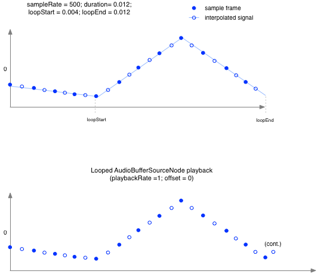
AudioBufferSourceNode サンプルレートの補間この図は、バッファ内のオフセットがサンプルフレームのちょうど半分で始まるサブサンプルオフセットの再生を示しています。そのため、すべての出力フレームが補間されます :
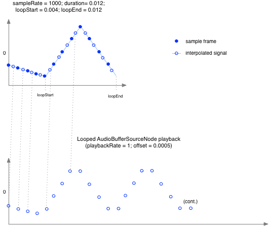
AudioBufferSourceNode サブサンプルオフセットの再生この図は、ループの端点の小数点以下を持つフレームオフセットが、正確なサンプルフレームを参照している場合と同じように、オフセットに従ってバッファ内の補間データポイントにどのようにマップするかを示すサブサンプルループ再生を示しています :
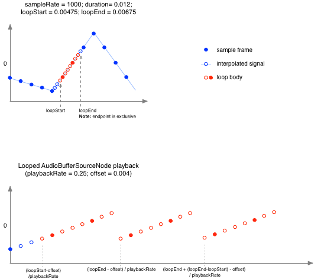
AudioBufferSourceNode サブサンプルのループ再生1.10. AudioDestinationNode インタフェース
これはユーザーが聴く事になる最終的な音の出力地点を表す AudioNode です。 それは多くの場合、スピーカーが接続されているオーディオ出力デバイスと考えられます。 聴こえるべきすべてのレンダリングされた音は AudioContext のルーティンググラフの "終端点" であるこのノードに導かれます。 AudioDestinationNode は 1 つの AudioContext に付き、AudioContext の destination 属性を介して 1 つだけ存在します。
AudioDestinationNode の出力はその 入力を足し合わせる ことによって生成され、AudioContext の出力を例えば MediaStreamAudioDestinationNode または MediaRecorder ( [mediastream-recording] で説明されています ) で取り込むこともできます。
AudioDestinationNode は、AudioContext または OfflineAudioContext のいずれかの出力先であり、チャンネルのプロパティはコンテキストが何であるかによって異なります。
AudioContext の場合のデフォルトは
| プロパティ | 値 | 説明 |
|---|---|---|
numberOfInputs
| 1 | |
numberOfOutputs
| 1 | |
channelCount
| 2 | |
channelCountMode
| "explicit"
| |
channelInterpretation
| "speakers"
| |
| tail-time | No |
channelCount は maxChannelCount と同じか小さい任意の値に設定できます。 この値が有効な範囲内にない場合は、IndexSizeError 例外を発生します ( MUST )。 具体的な例を挙げると、オーディオハードウェアが 8 チャンネル出力をサポートする場合、channelCount を 8 に設定する事で 8 チャンネルの出力をレンダリングすることができます。
OfflineAudioContext の場合のデフォルトは
| プロパティ | 値 | 説明 |
|---|---|---|
numberOfInputs
| 1 | |
numberOfOutputs
| 1 | |
channelCount
| numberOfChannels | |
channelCountMode
| "explicit"
| |
channelInterpretation
| "speakers"
| |
| tail-time | No |
ここで numberOfChannels は OfflineAudioContext を生成するときに指定されたチャンネルの数です。 この値は変更できません。 channelCount が別の値に変更された場合、NotSupportedError 例外を発生します ( MUST )。
[Exposed =Window ]interface AudioDestinationNode :AudioNode {readonly attribute unsigned long maxChannelCount ; };
1.10.1. 属性
maxChannelCount, unsigned long 型, readonly-
channelCount属性に設定できるチャンネルの最大数です。 ( 通常の場合 ) 終点としてオーディオハードウェアを表すAudioDestinationNodeは、オーディオハードウェアがマルチチャンネル対応である場合、2 よりも大きなオーディオチャンネルを出力する可能性があります。maxChannelCountは、このハードウェアがサポートできるチャンネルの最大数です。
1.11. AudioListener インタフェース
このインタフェースは人がオーディオシーンを聴く位置と方向を表します。 すべての PannerNode オブジェクトは BaseAudioContext の listener との関係で空間音響処理を行います。 空間音響についての詳細は § 6 空間音響 / パンニング を参照してください。
positionX 、positionY 、positionZ パラメータは、3D デカルト座標空間におけるリスナーの位置を表します。 PannerNode オブジェクトは、これと個々の音源との相対位置を空間音響に使用します。
forwardX 、forwardY 、forwardZ パラメータは、3D 空間内の方向ベクトルを表します。 forward ベクトルと up ベクトルの両方が、リスナーの向きを決定するために使用されます。 わかりやすく人間で言えば、forward ベクトルは、人の鼻がどの方向を指しているかを表します。 up のベクトルは、人の頭の上を指している方向を表します。 これらの 2 つのベクトルは線形独立であると考えられます。 これらの値がどのように解釈されるかの基準としての要件については、§ 6 空間音響 / パンニング のセクションを参照してください。
[Exposed =Window ]interface AudioListener {readonly attribute AudioParam positionX ;readonly attribute AudioParam positionY ;readonly attribute AudioParam positionZ ;readonly attribute AudioParam forwardX ;readonly attribute AudioParam forwardY ;readonly attribute AudioParam forwardZ ;readonly attribute AudioParam upX ;readonly attribute AudioParam upY ;readonly attribute AudioParam upZ ;undefined setPosition (float ,x float ,y float );z undefined setOrientation (float ,x float ,y float ,z float ,xUp float ,yUp float ); };zUp
1.11.1. 属性
forwardX, AudioParam 型, readonly-
3D デカルト座標空間内で、リスナーが向いている forward 方向の x 座標成分です。
パラメータ 値 説明 defaultValue0 minValue最も負の単精度浮動小数点値 約 -3.4028235e38 maxValue最も正の単精度浮動小数点値 約 3.4028235e38 automationRate" a-rate" forwardY, AudioParam 型, readonly-
3D デカルト座標空間内で、リスナーが向いている forward 方向の y 座標成分です。
パラメータ 値 説明 defaultValue0 minValue最も負の単精度浮動小数点値 約 -3.4028235e38 maxValue最も正の単精度浮動小数点値 約 3.4028235e38 automationRate" a-rate" forwardZ, AudioParam 型, readonly-
3D デカルト座標空間内で、リスナーが向いている forward 方向の z 座標成分です。
パラメータ 値 説明 defaultValue-1 minValue最も負の単精度浮動小数点値 約 -3.4028235e38 maxValue最も正の単精度浮動小数点値 約 3.4028235e38 automationRate" a-rate" positionX, AudioParam 型, readonly-
3D デカルト座標空間内での、オーディオリスナーの位置の x 座標です。
パラメータ 値 説明 defaultValue0 minValue最も負の単精度浮動小数点値 約 -3.4028235e38 maxValue最も正の単精度浮動小数点値 約 3.4028235e38 automationRate" a-rate" positionY, AudioParam 型, readonly-
3D デカルト座標空間内での、オーディオリスナーの位置の y 座標です。
パラメータ 値 説明 defaultValue0 minValue最も負の単精度浮動小数点値 約 -3.4028235e38 maxValue最も正の単精度浮動小数点値 約 3.4028235e38 automationRate" a-rate" positionZ, AudioParam 型, readonly-
3D デカルト座標空間内での、オーディオリスナーの位置の z 座標です。
パラメータ 値 説明 defaultValue0 minValue最も負の単精度浮動小数点値 約 -3.4028235e38 maxValue最も正の単精度浮動小数点値 約 3.4028235e38 automationRate" a-rate" upX, AudioParam 型, readonly-
3D デカルト座標空間内で、リスナーの頭上の up 方向の x 座標成分です。
パラメータ 値 説明 defaultValue0 minValue最も負の単精度浮動小数点値 約 -3.4028235e38 maxValue最も正の単精度浮動小数点値 約 3.4028235e38 automationRate" a-rate" upY, AudioParam 型, readonly-
3D デカルト座標空間内で、リスナーの頭上の up 方向の y 座標成分です。
パラメータ 値 説明 defaultValue1 minValue最も負の単精度浮動小数点値 約 -3.4028235e38 maxValue最も正の単精度浮動小数点値 約 3.4028235e38 automationRate" a-rate" upZ, AudioParam 型, readonly-
3D デカルト座標空間内で、リスナーの頭上の up 方向の z 座標成分です。
パラメータ 値 説明 defaultValue0 minValue最も負の単精度浮動小数点値 約 -3.4028235e38 maxValue最も正の単精度浮動小数点値 約 3.4028235e38 automationRate" a-rate"
1.11.2. メソッド
setOrientation(x, y, z, xUp, yUp, zUp)-
このメソッドは非推奨 (DEPRECATED) です。 これは
forwardX.value、forwardY.value、forwardZ.value、upX.value、upY.value、upZ.valueに、与えられたx、y、z、xUp、yUp、zUpの値をそれぞれ直接設定するのと等価です。そのため、
forwardX、forwardY、forwardZ、upX、upY、upZのAudioParamのいずれかに、setValueCurveAtTime()を使用したオートメーションカーブがあるときに、このメソッドを呼び出すとNotSupportedErrorを発生します ( MUST )。setOrientation()はリスナーが 3D デカルト座標空間でどの方向を指しているかを示します。 forward ベクトルと up ベクトルの両方が与えられます。 わかりやすく人間で言えば、forward ベクトルは、人の鼻がどの方向を向いているかを表します。 up ベクトルは、人の頭の上を指している方向を表します。 これらの2つのベクトルは線形独立であると考えられます。 これらの値がどのように解釈されるかの基準としての要件については、§ 6 空間音響 / パンニング のセクションを参照してください。x、y、zパラメータは、3D 空間における forward 方向ベクトルを表し、デフォルト値は ( 0, 0, -1 ) になります。xUp、yUp、zUpパラメータは、3D 空間内の up 方向ベクトルを表し、デフォルト値は ( 0, 1, 0 ) になります。AudioListener.setOrientation() の引数 パラメータ 型 Null可 省略可 説明 xfloat✘ ✘ AudioListenerの forward x の方向yfloat✘ ✘ AudioListenerの forward y の方向zfloat✘ ✘ AudioListenerの forward z の方向xUpfloat✘ ✘ AudioListenerの up x の方向yUpfloat✘ ✘ AudioListenerの up y の方向zUpfloat✘ ✘ AudioListenerの up z の方向戻り値 :undefined setPosition(x, y, z)-
このメソッドは非推奨 (DEPRECATED) です。 これは、
positionX.value、positionY.value、positionZ.valueにそれぞれ与えられたx、y、zの値を直接設定することと等価です。そのため、
AudioListenerのpositionX、positionY、positionZのAudioParamのいずれかに、setValueCurveAtTime()を使用したオートメーションカーブがあるときに、このメソッドを呼び出すとNotSupportedErrorを発生します ( MUST )。setPosition()はリスナーの位置を 3D デカルト座標空間に設定します。PannerNodeオブジェクトは、この位置と個々の音源の相対位置を空間音響に使用します。x、y、zパラメータは 3D 空間内の座標を表しています。デフォルトの値は (0, 0, 0) です。
AudioListener.setPosition() の引数 パラメータ 型 Null可 省略可 説明 xfloat✘ ✘ AudioListenerの位置の x 座標yfloat✘ ✘ AudioListenerの位置の y 座標zfloat✘ ✘ AudioListenerの位置の z 座標
1.11.3. 処理
AudioListener のパラメータには AudioNode を接続する事ができ、それが同じグラフ内の PannerNode の出力にも影響を与えるため、ノードの順序付けアルゴリズムで処理の順序を計算する際には AudioListener を考慮する必要があります。 このためグラフ内のすべての PannerNode は入力として AudioListener を持っています。
1.12. AudioProcessingEvent インタフェース - DEPRECATED
これは ScriptProcessorNode ノードにディスパッチされる Event オブジェクトです。 置き換えとなる AudioWorkletNode は異なるアプローチを使用するため、ScriptProcessorNode が削除される際には削除されます。
このイベントのハンドラは inputBuffer 属性を経由してオーディオデータにアクセスすることによって、( もしあれば ) 入力からのオーディオを処理します。 処理の結果 ( または入力がない場合は合成したデータ ) であるオーディオデータは、outputBuffer に格納されます。
[Exposed =Window ]interface AudioProcessingEvent :Event {(constructor DOMString ,type AudioProcessingEventInit );eventInitDict readonly attribute double playbackTime ;readonly attribute AudioBuffer inputBuffer ;readonly attribute AudioBuffer outputBuffer ; };
1.12.1. 属性
inputBuffer, AudioBuffer 型, readonly-
入力となるオーディオデータを含む AudioBuffer です。 これは createScriptProcessor() メソッドの
numberOfInputChannelsパラメータと等しい数のチャンネルを持っています。 この AudioBuffer は、audioprocess関数の範囲内でのみ有効です。 このスコープの外では値は意味を持ちません。 outputBuffer, AudioBuffer 型, readonly-
出力のオーディオデータを書き込まなくてはならない AudioBuffer です ( MUST )。 この AudioBuffer は createScriptProcessor() メソッドの
numberOfOutputChannelsパラメータと等しい数のチャンネルを持っています。audioprocessイベントハンドラ関数のスコープ内のスクリプトコードは、この AudioBuffer のチャンネルデータを表すFloat32Array配列を変更することを期待されています。 このスコープの外でのスクリプトによる AudioBuffer の変更では、オーディオに対する効果は発生しません。 playbackTime, double 型, readonly-
AudioContextのcurrentTimeと同じ時間軸で表される、このオーディオが再生される時刻です。
1.12.2. AudioProcessingEventInit
dictionary AudioProcessingEventInit :EventInit {required double playbackTime ;required AudioBuffer inputBuffer ;required AudioBuffer outputBuffer ; };
1.12.2.1. ディクショナリ AudioProcessingEventInit メンバー
inputBuffer, AudioBuffer 型-
イベントの
inputBuffer属性に割り当てられる値です。 outputBuffer, AudioBuffer 型-
イベントの
outputBuffer属性に割り当てられる値です。 playbackTime, double 型-
イベントの
playbackTime属性に割り当てられる値です。
1.13. BiquadFilterNode インタフェース
BiquadFilterNode は、よくある低次フィルタを実装した AudioNode です。
低次フィルタは基本的なトーンコントロール (バス、ミドル、トレブル) やグラフィックイコライザーやより高度なフィルタを構成するブロックです。 複数の BiquadFilterNode フィルタを組み合わせてより複雑なフィルタを作る事もできます。 フィルタのパラメータの frequency などを時間と共に変化させてフィルタスイープやその他の効果を得る事もできます。 それぞれの BiquadFilterNode は下の IDL で紹介する様々な一般的なフィルタの型のうちの 1 つに設定する事ができます。 デフォルトのフィルタの型は "lowpass" です。
frequency と detune は 複合パラメータ で、どちらも a-rate パラメータです。 これらは computedFrequency の値を決定するために一緒に使用されます:
computedFrequency(t) = frequency(t) * pow(2, detune(t) / 1200)
この 複合パラメータ の 公称範囲 は [0, Nyquist frequency] です。
| プロパティ | 値 | 説明 |
|---|---|---|
numberOfInputs
| 1 | |
numberOfOutputs
| 1 | |
channelCount
| 2 | |
channelCountMode
| "max"
| |
channelInterpretation
| "speakers"
| |
| tail-time | Yes | 入力がゼロでも無音ではない出力を出し続けます。 これは IIR フィルタのため、フィルタの処理はゼロではない入力を永遠に生成しますが、実際には、出力が十分にゼロに近くなる有限時間に制限されます。 実際の時間はフィルタの係数に依存します。 |
出力のチャンネル数は常に入力のチャンネル数と同じになります。
enum {BiquadFilterType "lowpass" ,"highpass" ,"bandpass" ,"lowshelf" ,"highshelf" ,"peaking" ,"notch" ,"allpass" };
| 列挙値 | 説明 |
|---|---|
"lowpass"
|
ローパスフィルタ はカットオフ周波数より低い周波数をそのまま通し、カットオフよりも高い周波数を減衰させます。 これは標準的な 2 次のレゾナントローパスフィルタの実装で、12dB / オクターブのロールオフを持ちます。
|
"highpass"
|
ハイパスフィルタ はローパスフィルタの反対の機能を持ちます。 カットオフ周波数よりも高い周波数をそのまま通し、カットオフよりも低い周波数を減衰させます。 これは標準的な 2 次レゾナントハイパスフィルタの実装で、12dB / オクターブのロールオフを持ちます。
|
"bandpass"
|
バンドパスフィルタ はある範囲の周波数をそのまま通し、この周波数範囲より下および上の周波数を減衰させます。 これは 2 次のバンドパスフィルタを実装しています。
|
"lowshelf"
|
ローシェルフフィルタはすべての周波数を通しますが、低い周波数だけを増幅 ( または減衰 ) させます。 これは 2 次のローシェルフフィルタを実装しています。
|
"highshelf"
|
ハイシェルフフィルタはローシェルフフィルタとは反対に、すべての周波数を通しますが高い周波数だけを増幅します。 これは 2 次のハイシェルフフィルタを実装しています。
|
"peaking"
|
ピーキングフィルタはすべての周波数を通しますが、ある周波数の範囲だけが増幅 ( または減衰 ) されます。
|
"notch"
|
ノッチフィルタ ( バンドストップまたはバンドリジェクション・フィルタ とも呼ばれます ) は、バンドパスフィルタの逆の機能です。 ある周波数を除くすべての周波数を通します。
|
"allpass"
| オールパスフィルタ はすべての周波数を通しますが、周波数の変化に対して位相が変化します。 これは 2 次のオールパスフィルタを実装しています。 |
BiquadFilterNode の属性はすべて a-rate の AudioParam です。
[Exposed =Window ]interface BiquadFilterNode :AudioNode {(constructor BaseAudioContext ,context optional BiquadFilterOptions = {});options attribute BiquadFilterType type ;readonly attribute AudioParam frequency ;readonly attribute AudioParam detune ;readonly attribute AudioParam Q ;readonly attribute AudioParam gain ;undefined getFrequencyResponse (Float32Array ,frequencyHz Float32Array ,magResponse Float32Array ); };phaseResponse
1.13.1. コンストラクタ
BiquadFilterNode(context, options)-
コンストラクタが
BaseAudioContextc とオプションオブジェクト option を指定して呼び出される場合、ユーザーエージェントは context と options を引数として AudioNode this を 初期化 しなくてはなりません ( MUST )。BiquadFilterNode.constructor() メソッドの引数 パラメータ 型 Null可 省略可 説明 contextBaseAudioContext✘ ✘ この新しい BiquadFilterNodeが 関連付け られるBaseAudioContextです。optionsBiquadFilterOptions✘ ✔ この BiquadFilterNodeのオプションの初期パラメータ値です。
1.13.2. 属性
Q, AudioParam 型, readonly-
フィルタの Q ファクターです。
lowpassおよびhighpassフィルタの場合、Q値は dB 単位であると解釈されます。 これらのフィルタの公称範囲は \([-Q_{lim}, Q_{lim}]\) となり、ここで \(Q_{lim}\) は \(10^{Q/20}\) がオーバーフローしない最大の値です。 これは 約 \(770.63678\) となります。bandpass、notch、allpass、peakingフィルタの場合、この値はリニア値です。 この値はフィルタの帯域幅に関連しているため、正の値でなければなりません。 公称範囲は \([0, 3.4028235e38]\) で、上限は 最も正の単精度浮動小数点値 です。これは
lowshelf、highshelfフィルタでは使用されません。パラメータ 値 説明 defaultValue1 minValue最も負の単精度浮動小数点値 約 -3.4028235e38 ですが、さまざまなフィルタでの実際の制限については上記を参照してください。 maxValue最も正の単精度浮動小数点値 約 3.4028235e38 ですが、さまざまなフィルタでの実際の制限については上記を参照してください。 automationRate" a-rate" detune, AudioParam 型, readonly-
周波数のデチューン値で単位はセントです。 これは frequency と組み合わされて 複合パラメータ となり、computedFrequency を決定します。
パラメータ 値 説明 defaultValue0 minValue\(\approx -153600\) maxValue\(\approx 153600\) この値は約 \(1200\ \log_2 \mathrm{FLT\_MAX}\) であり、ここで FLT_MAX は最も大きな floatの値です。automationRate" a-rate" frequency, AudioParam 型, readonly-
Hz であらわした
BiquadFilterNodeが働く周波数です。 これはdetuneと組み合わされて 複合パラメータ となり computedFrequency を決定します。パラメータ 値 説明 defaultValue350 minValue0 maxValueナイキスト周波数 automationRate" a-rate" gain, AudioParam 型, readonly-
フィルタのゲインで、単位は dB です。 ゲインは
lowshelf、highshelf、peaking型のフィルタでのみ使用されます。パラメータ 値 説明 defaultValue0 minValue最も負の単精度浮動小数点値 約 -3.4028235e38 maxValue\(\approx 1541\) この値は約 \(40\ \log_{10} \mathrm{FLT\_MAX}\) で、ここで FLT_MAX は最も大きな floatの値です。automationRate" a-rate" type, BiquadFilterType 型-
この
BiquadFilterNodeのタイプです。 デフォルトの値は "lowpass" です。type属性の値によって他のパラメータの正確な意味が変わってきます。
1.13.3. メソッド
getFrequencyResponse(frequencyHz, magResponse, phaseResponse)-
フィルタの各パラメータの現在の値
[[current value]]に基づいて、指定の周波数に対する周波数応答を同期的に計算します。 3つの引数は、同じ長さのFloat32Arrayである必要があります。 そうでない場合、InvalidAccessErrorを発生します ( MUST )。返される周波数応答は、現在の処理ブロックに対してサンプリングされた
AudioParamを使用して計算されなくてはなりません ( MUST )。BiquadFilterNode.getFrequencyResponse() メソッドの引数 パラメータ 型 Null可 省略可 説明 frequencyHzFloat32Array✘ ✘ このパラメータは応答特性を計算する周波数 (Hz) の配列を指定します。 magResponseFloat32Array✘ ✘ このパラメータは振幅特性のリニアな値を受け取る配列を指定します。 もし frequencyHzパラメータが [0, sampleRate/2] の範囲にない場合 (ここでsampleRateはAudioContextのsampleRate属性の値です)、対応するmagResponse配列の同じインデックスにはNaNが格納されなくてはなりません ( MUST )。phaseResponseFloat32Array✘ ✘ このパラメータは、位相応答の値をラジアンで受け取る出力配列を指定します。 もし frequencyHzパラメータの値が [0; sampleRate/2] の範囲にない場合 (ここでsampleRateはAudioContextのsampleRate属性の値です)、対応するphaseResponse配列の同じインデックスにはNaNが格納されなくてはなりません ( MUST )。戻り値 :undefined
1.13.4. BiquadFilterOptions
これは BiquadFilterNode を作成する際に使用されるオプションを指定します。 すべてのメンバーはオプションです。 指定されていない場合は、通常のデフォルト値を使用してノードが作成されます。
dictionary BiquadFilterOptions :AudioNodeOptions {BiquadFilterType type = "lowpass";float Q = 1;float detune = 0;float frequency = 350;float gain = 0; };
1.13.4.1. ディクショナリ BiquadFilterOptions メンバー
Q, float 型, デフォルト値は1-
Qの初期値として要求する値です。 detune, float 型, デフォルト値は0-
detuneの初期値として要求する値です。 frequency, float 型, デフォルト値は350-
frequencyの初期値として要求する値です。 gain, float 型, デフォルト値は0-
gainの初期値として要求する値です。 type, BiquadFilterType 型, デフォルト値は"lowpass"-
フィルタの type の初期値として要求する値です。
1.13.5. フィルタ特性
BiquadFilterNode であるタイプのフィルタを実装する方法は複数あり、それぞれが非常に様々な特性を持っています。 このセクションの式はフィルタのタイプごとの特性を決定するもので、仕様に準拠する実装 として実装しなければならないフィルタについて記述しています ( MUST )。 これらの式は Audio EQ Cookbook で見られる式を基にしています。
BiquadFilterNode のオーディオ処理の伝達関数は
$$
H(z) = \frac{\frac{b_0}{a_0} + \frac{b_1}{a_0}z^{-1} + \frac{b_2}{a_0}z^{-2}}
{1+\frac{a_1}{a_0}z^{-1}+\frac{a_2}{a_0}z^{-2}}
$$
これは時間領域での次の式と等価です :
$$
a_0 y(n) + a_1 y(n-1) + a_2 y(n-2) =
b_0 x(n) + b_1 x(n-1) + b_2 x(n-2)
$$
フィルタの初期状態は 0 です。
注 : 固定状態のフィルタは安定していますが、AudioParam のオートメーションを使って不安定なバイクワッドフィルタを作る事も可能です。 これを管理するのは開発者の責任になります。
注 : UAは、フィルタ状態に NaN 値が発生したことをユーザーに通知する警告を生成する場合があります。 これは通常、フィルタが不安定である事を示しています。
上記の伝達関数内の係数はそれぞれのノードのタイプによって異なります。 BiquadFilterNode の AudioParam の computedValue を基として次の中間変数が計算のために必要になります。
-
\(F_s\) をこの
AudioContextのsampleRate属性の値とします。 -
\(f_0\) を computedFrequency の値とします。
-
\(G\) を
gainAudioParamの値とします。 -
\(Q\) を
QAudioParamの値とします。 -
これらより
$$ \begin{align*} A &= 10^{\frac{G}{40}} \\ \omega_0 &= 2\pi\frac{f_0}{F_s} \\ \alpha_Q &= \frac{\sin\omega_0}{2Q} \\ \alpha_{Q_{dB}} &= \frac{\sin\omega_0}{2 \cdot 10^{Q/20}} \\ S &= 1 \\ \alpha_S &= \frac{\sin\omega_0}{2}\sqrt{\left(A+\frac{1}{A}\right)\left(\frac{1}{S}-1\right)+2} \end{align*} $$
各フィルタタイプに対応する 6 つの係数 (\(b_0, b_1, b_2, a_0, a_1, a_2\)) は :
- "
lowpass" -
$$ \begin{align*} b_0 &= \frac{1 - \cos\omega_0}{2} \\ b_1 &= 1 - \cos\omega_0 \\ b_2 &= \frac{1 - \cos\omega_0}{2} \\ a_0 &= 1 + \alpha_{Q_{dB}} \\ a_1 &= -2 \cos\omega_0 \\ a_2 &= 1 - \alpha_{Q_{dB}} \end{align*} $$ - "
highpass" -
$$ \begin{align*} b_0 &= \frac{1 + \cos\omega_0}{2} \\ b_1 &= -(1 + \cos\omega_0) \\ b_2 &= \frac{1 + \cos\omega_0}{2} \\ a_0 &= 1 + \alpha_{Q_{dB}} \\ a_1 &= -2 \cos\omega_0 \\ a_2 &= 1 - \alpha_{Q_{dB}} \end{align*} $$ - "
bandpass" -
$$ \begin{align*} b_0 &= \alpha_Q \\ b_1 &= 0 \\ b_2 &= -\alpha_Q \\ a_0 &= 1 + \alpha_Q \\ a_1 &= -2 \cos\omega_0 \\ a_2 &= 1 - \alpha_Q \end{align*} $$ - "
notch" -
$$ \begin{align*} b_0 &= 1 \\ b_1 &= -2\cos\omega_0 \\ b_2 &= 1 \\ a_0 &= 1 + \alpha_Q \\ a_1 &= -2 \cos\omega_0 \\ a_2 &= 1 - \alpha_Q \end{align*} $$ - "
allpass" -
$$ \begin{align*} b_0 &= 1 - \alpha_Q \\ b_1 &= -2\cos\omega_0 \\ b_2 &= 1 + \alpha_Q \\ a_0 &= 1 + \alpha_Q \\ a_1 &= -2 \cos\omega_0 \\ a_2 &= 1 - \alpha_Q \end{align*} $$ - "
peaking" -
$$ \begin{align*} b_0 &= 1 + \alpha_Q\, A \\ b_1 &= -2\cos\omega_0 \\ b_2 &= 1 - \alpha_Q\,A \\ a_0 &= 1 + \frac{\alpha_Q}{A} \\ a_1 &= -2 \cos\omega_0 \\ a_2 &= 1 - \frac{\alpha_Q}{A} \end{align*} $$ - "
lowshelf" -
$$ \begin{align*} b_0 &= A \left[ (A+1) - (A-1) \cos\omega_0 + 2 \alpha_S \sqrt{A})\right] \\ b_1 &= 2 A \left[ (A-1) - (A+1) \cos\omega_0 )\right] \\ b_2 &= A \left[ (A+1) - (A-1) \cos\omega_0 - 2 \alpha_S \sqrt{A}) \right] \\ a_0 &= (A+1) + (A-1) \cos\omega_0 + 2 \alpha_S \sqrt{A} \\ a_1 &= -2 \left[ (A-1) + (A+1) \cos\omega_0\right] \\ a_2 &= (A+1) + (A-1) \cos\omega_0 - 2 \alpha_S \sqrt{A}) \end{align*} $$ - "
highshelf" -
$$ \begin{align*} b_0 &= A\left[ (A+1) + (A-1)\cos\omega_0 + 2\alpha_S\sqrt{A} )\right] \\ b_1 &= -2A\left[ (A-1) + (A+1)\cos\omega_0 )\right] \\ b_2 &= A\left[ (A+1) + (A-1)\cos\omega_0 - 2\alpha_S\sqrt{A} )\right] \\ a_0 &= (A+1) - (A-1)\cos\omega_0 + 2\alpha_S\sqrt{A} \\ a_1 &= 2\left[ (A-1) - (A+1)\cos\omega_0\right] \\ a_2 &= (A+1) - (A-1)\cos\omega_0 - 2\alpha_S\sqrt{A} \end{align*} $$
1.14. ChannelMergerNode インタフェース
ChannelMergerNode は高度なアプリケーションで、ChannelSplitterNode と組み合わせてよく使われます。
| プロパティ | 値 | 説明 |
|---|---|---|
numberOfInputs
| 説明を参照してください。 | デフォルトは 6 ですが、ChannelMergerOptions 、numberOfInputs 、または createChannelMerger で指定された値によって決まります |
numberOfOutputs
| 1 | |
channelCount
| 1 | channelCount の制約 があります。 |
channelCountMode
| "explicit"
| channelCountMode constraints の制約 があります。 |
channelInterpretation
| "speakers"
| |
| tail-time | No |
このインタフェースは複数のオーディオストリームからチャンネルを結合して 1 つのオーディオストリームにする AudioNode を表します。 これは可変数の入力 (デフォルトは 6 ) の入力を持ちますが、すべての入力を接続する必要はありません。 いずれかの入力が アクティブに処理 されている場合、チャンネル数が入力の数に等しい 1 つの出力があります。 どの入力も アクティブに処理 されていない場合、出力は無音の 1 チャンネルになります。
複数の入力を 1 つの出力にまとめるとき、それぞれの入力は指定されたミキシングルールによって 1 チャンネル ( モノラル ) にダウンミックスされます。 接続されていない入力も 1 チャンネルの無音 としてカウントされて出力されます。 入力ストリームを変える事は出力のチャンネルの順序に 影響しません。
ChannelMergerNode に 2 つのステレオ入力が接続されている場合、1 番目の入力と 2 番目の入力は、マージされる前にそれぞれモノラルにダウンミックスされます。 出力は 6 チャンネルのストリームになり、最初の 2 つのチャンネルが最初の 2 つの (ダウンミックスされた) 入力で埋められ、残りのチャンネルは無音になります。
また、ChannelMergerNode を使用すると、5.1 サラウンドなどのマルチチャンネルスピーカー配列用に複数のオーディオ ストリームを特定の順序で配置できます。 マージャーではチャンネルを識別して (左、右などのように) 解釈するのではなく、単純に入力された順序でチャンネルが結合されるだけです。
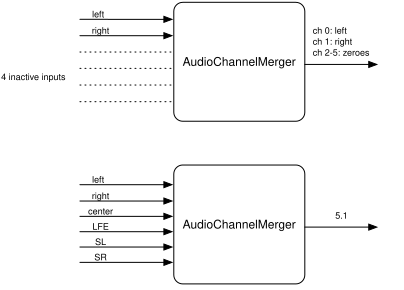
[Exposed =Window ]interface ChannelMergerNode :AudioNode {constructor (BaseAudioContext ,context optional ChannelMergerOptions = {}); };options
1.14.1. コンストラクタ
ChannelMergerNode(context, options)-
コンストラクタが
BaseAudioContextc とオプションオブジェクト option を指定して呼び出される場合、ユーザーエージェントは context と options を引数として AudioNode this を 初期化 しなくてはなりません ( MUST )。ChannelMergerNode.constructor() メソッドの引数 パラメータ 型 Null可 省略可 説明 contextBaseAudioContext✘ ✘ この新しい ChannelMergerNodeが 関連付け られるBaseAudioContextです。optionsChannelMergerOptions✘ ✔ この ChannelMergerNodeのオプションの初期パラメータ値です。
1.14.2. ChannelMergerOptions
dictionary ChannelMergerOptions :AudioNodeOptions {unsigned long numberOfInputs = 6; };
1.14.2.1. ディクショナリ ChannelMergerOptions メンバー
numberOfInputs, unsigned long 型, デフォルト値は6-
ChannelMergerNodeの入力の数です。 この値に対する制約については、createChannelMerger()を参照してください。
1.15. ChannelSplitterNode インタフェース
ChannelSplitterNode は高度なアプリケーションで、ChannelMergerNode と組み合わせてよく使われます。
| プロパティ | 値 | 説明 |
|---|---|---|
numberOfInputs
| 1 | |
numberOfOutputs
| 説明を参照してください | デフォルトは 6 です。 それ以外に ChannelSplitterOptions.numberOfOutputs または createChannelSplitter または、コンストラクタ の ChannelSplitterOptions ディレクトリの numberOfOutputs メンバーで指定された値から決定されます。 |
channelCount
| numberOfOutputs
| channelCount の制約 があります。 |
channelCountMode
| "explicit"
| channelCountMode の制約 があります。 |
channelInterpretation
| "discrete"
| channelInterpretation の制約 があります。 |
| tail-time | No |
このインタフェースはルーティンググラフ中のオーディオストリームの個別のチャンネルにアクセスする AudioNode を表しています。 これは 1 つの入力と入力のオーディオストリームのチャンネル数と同じ数の "アクティブ" な出力を持ちます。 例えば、ステレオの入力ストリームが ChannelSplitterNode に接続された場合、アクティブな出力は 2 ( 1 つは左チャンネルから、もう 1 つは右チャンネルから ) になります。 常に合計 N 個の出力 ( AudioContext の createChannelSplitter() の numberOfOutputs パラメータ で決まります ) があり、この値が渡されない場合のデフォルトの数は 6 になります。 "アクティブ" でないすべての出力は無音を出力し、通常はどこにも接続されません。
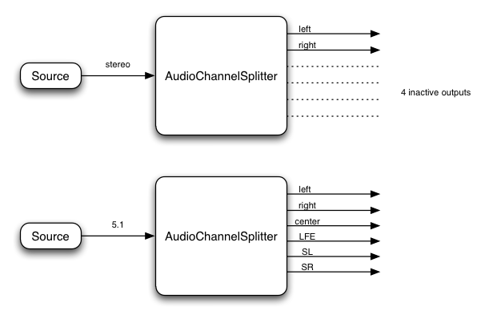
この例ではスプリッターはチャンネルの ( 例えば左チャンネル、右チャンネルなどの ) 識別はせず、単純に入力チャンネルの順序に従って出力チャンネルを分割する事に注意してください。
ChannelSplitterNode を使うアプリケーションの 1 つに、個別のチャンネルそれぞれのゲインの制御を必要とする "マトリックス・ミキシング" を行うものがあります。
[Exposed =Window ]interface ChannelSplitterNode :AudioNode {constructor (BaseAudioContext ,context optional ChannelSplitterOptions = {}); };options
1.15.1. コンストラクタ
ChannelSplitterNode(context, options)-
コンストラクタが
BaseAudioContextc とオプションオブジェクト option を指定して呼び出される場合、ユーザーエージェントは context と options を引数として AudioNode this を 初期化 しなくてはなりません ( MUST )。ChannelSplitterNode.constructor() メソッドの引数 パラメータ 型 Null可 省略可 説明 contextBaseAudioContext✘ ✘ この新しい ChannelSplitterNodeが 関連付け られるBaseAudioContextです。optionsChannelSplitterOptions✘ ✔ この ChannelSplitterNodeのオプションの初期パラメータ値です。
1.15.2. ChannelSplitterOptions
dictionary ChannelSplitterOptions :AudioNodeOptions {unsigned long numberOfOutputs = 6; };
1.15.2.1. ディクショナリ ChannelSplitterOptions メンバー
numberOfOutputs, unsigned long 型, デフォルト値は6-
ChannelSplitterNodeの出力の数です。 この値の制約については、createChannelSplitter()を参照してください。
1.16. ConstantSourceNode インタフェース
このインタフェースは、名目上一定の値を出力するオーディオソースを表します。 これは、一般的な定数ソースノードとして便利であり、また offset をオートメーションするか、別のノードを接続することで、生成可能な AudioParam であるかのように使用できます。
このノードの出力は 1 つだけで、1 チャンネル ( モノラル ) で構成されます。
| プロパティ | 値 | 説明 |
|---|---|---|
numberOfInputs
| 0 | |
numberOfOutputs
| 1 | |
channelCount
| 2 | |
channelCountMode
| "max"
| |
channelInterpretation
| "speakers"
| |
| tail-time | No |
[Exposed =Window ]interface ConstantSourceNode :AudioScheduledSourceNode {constructor (BaseAudioContext ,context optional ConstantSourceOptions = {});options readonly attribute AudioParam offset ; };
1.16.1. コンストラクタ
ConstantSourceNode(context, options)-
コンストラクタが
BaseAudioContextc とオプションオブジェクト option を指定して呼び出される場合、ユーザーエージェントは context と options を引数として AudioNode this を 初期化 しなくてはなりません ( MUST )。ConstantSourceNode.constructor() メソッドの引数 パラメータ 型 Null可 省略可 説明 contextBaseAudioContext✘ ✘ この新しい ConstantSourceNodeが 関連付け られるBaseAudioContextです。optionsConstantSourceOptions✘ ✔ この ConstantSourceNodeのオプションの初期パラメータ値です。
1.16.2. 属性
offset, AudioParam 型, readonly-
ソースとなる定数です。
パラメータ 値 説明 defaultValue1 minValue最も負の単精度浮動小数点値 約 -3.4028235e38 maxValue最も正の単精度浮動小数点値 約 3.4028235e38 automationRate" a-rate"
1.16.3. ConstantSourceOptions
ConstantSourceNode を生成するオプションを指定します。 すべてのメンバーはオプションです。 指定されていない場合、通常のデフォルトがノードの生成に使用されます。
dictionary ConstantSourceOptions {float offset = 1; };
1.16.3.1. ディクショナリ ConstantSourceOptions メンバー
offset, float 型, デフォルト値は1-
このノードの
offsetAudioParam の初期値です。
1.17. ConvolverNode インタフェース
このインタフェースはインパルスレスポンスに従って線形コンボリューションエフェクトを適用する処理ノードを表します。
| プロパティ | 値 | 説明 |
|---|---|---|
numberOfInputs
| 1 | |
numberOfOutputs
| 1 | |
channelCount
| 2 | channelCount の制約 があります。 |
channelCountMode
| "clamped-max"
| channelCountMode の制約 があります。 |
channelInterpretation
| "speakers"
| |
| tail-time | Yes | 入力が無くても buffer の長さだけ、無音でない音声を出力し続けます。 |
このノードの入力はモノラル (1 チャンネル) またはステレオ (2 チャンネル) であり増やす事はできません。 より多いチャンネル数のノードからの接続は、適宜ダウンミックス されます。
このノードには、channelCount の制約 および channelCountMode の制約 があります。 これらの制約は、ノードへの入力がモノラルまたはステレオである事を確実にします。
[Exposed =Window ]interface ConvolverNode :AudioNode {constructor (BaseAudioContext ,context optional ConvolverOptions = {});options attribute AudioBuffer ?buffer ;attribute boolean normalize ; };
1.17.1. コンストラクタ
ConvolverNode(context, options)-
コンストラクタが
BaseAudioContextcontext と オプションオブジェクト options と共に呼び出された場合、次の手順を実行します :-
属性
normalizeをdisableNormalizationの値の逆に設定します。 -
bufferが 存在 する場合は、buffer属性をその値に設定します。注 : これは、バッファが
normalize属性の値に従って正規化されることを意味します。 -
o を新しい
AudioNodeOptionsディクショナリとします。 -
もし options に
channelCountが 存在 している場合は o のchannelCountを同じ値に設定します。 -
もし options に
channelCountModeが 存在 している場合は o のchannelCountModeを同じ値に設定します。 -
もし options に
channelInterpretationが 存在 している場合は o のchannelInterpretationを同じ値に設定します。 -
c 、o を引数として AudioNode this を 初期化 します。
ConvolverNode.constructor() メソッドの引数 パラメータ 型 Null可 省略可 説明 contextBaseAudioContext✘ ✘ この新しい ConvolverNodeが 関連付け られるBaseAudioContextです。optionsConvolverOptions✘ ✔ この ConvolverNodeのオプションの初期パラメータ値です。 -
1.17.2. 属性
buffer, AudioBuffer 型, nullable-
この属性が設定された時点で、
bufferとnormalize属性の状態を使って、このインパルス応答の指定の正規化がされたConvolverNodeが構成されます。 この属性の初期値は null です。buffer 属性を設定する際には、以下の手順を同期的に実行します :-
バッファの
チャンネル数が 1、2、4 のどれかでない、あるいはバッファのサンプルレートが 関連付け られたBaseAudioContextのサンプルレートと同じでない場合NotSupportedErrorを発生します ( MUST )。 -
AudioBufferの 内容を取得 します。
注 :
bufferに新しいバッファを設定する際、オーディオにグリッジが発生します。 もしこれが望ましくない場合、置き換え用の新規のConvolverNodeを作成して両者の間でクロスフェードさせる事が推奨されます。注 :
ConvolverNodeは、入力が 1 チャンネルで、かつbufferが 1 チャンネルの場合にのみ、モノラル出力を生成します。 それ以外のすべてのケースで、出力はステレオになります。 特にbufferが 4 チャンネルであり、2 チャンネルの入力がある場合、ConvolverNodeは "true" ステレオマトリックスの畳み込みを実行します。 基準となる情報については、チャンネル構成図 を参照してください。 -
normalize, boolean 型-
buffer属性がセットされたときに、バッファのインパルス応答を equal-power による正規化でスケーリングするかどうかを制御します。 様々なインパルス応答を読み込んだ場合に、Convolver が、より均一な出力レベルを出せるように、デフォルト値はtrueになっています。 もしnormalizeがfalseに設定されている場合、畳み込みはインパルス応答の前処理/スケーリングなしでレンダリングされます。 この値を変更した場合、もう一度buffer属性を設定するまで有効になりません。buffer属性が設定されたときにnormalize属性が false である場合、ConvolverNodeは、buffer内に保持されているインパルス応答そのままに、線形畳み込みを実行します。そうでなく、もし、
buffer属性が設定されたときにnormalize属性が true である場合、ConvolverNodeは、まず、buffer内のオーディオデータのスケーリングされた RMS パワー解析を実行して、以下のアルゴリズムにより normalizationScale を計算します :function calculateNormalizationScale( buffer) { const GainCalibration= 0.00125 ; const GainCalibrationSampleRate= 44100 ; const MinPower= 0.000125 ; // Normalize by RMS power. const numberOfChannels= buffer. numberOfChannels; const length= buffer. length; let power= 0 ; for ( let i= 0 ; i< numberOfChannels; i++ ) { let channelPower= 0 ; const channelData= buffer. getChannelData( i); for ( let j= 0 ; j< length; j++ ) { const sample= channelData[ j]; channelPower+= sample* sample; } power+= channelPower; } power= Math. sqrt( power/ ( numberOfChannels* length)); // Protect against accidental overload. if ( ! isFinite( power) || isNaN( power) || power< MinPower) power= MinPower; let scale= 1 / power; // Calibrate to make perceived volume same as unprocessed. scale*= GainCalibration; // Scale depends on sample-rate. if ( buffer. sampleRate) scale*= GainCalibrationSampleRate/ buffer. sampleRate; // True-stereo compensation. if ( numberOfChannels== 4 ) scale*= 0.5 ; return scale; } 処理の際には、ConvolverNode はこの計算された normalizationScale の値を使い、入力と (
bufferで表される ) インパルス応答との線形畳み込みの結果に乗算して最終的な出力を得ます。 または、入力に対して事前に normalizationScale を乗算したり、インパルス応答に normalizationScale を事前に乗算したバージョンを作成しておくなど、数学的に同等の演算を使用してもかまいません。
1.17.3. ConvolverOptions
ConvolverNode を作成する際のオプションを指定します。 すべてのメンバーはオプションです。 指定されていない場合、ノードは通常のデフォルトを使用して作成します。
dictionary ConvolverOptions :AudioNodeOptions {AudioBuffer ?buffer ;boolean disableNormalization =false ; };
1.17.3.1. ディクショナリ ConvolverOptions メンバー
buffer, AudioBuffer 型, nullable-
ConvolverNodeに要求するバッファ。 このバッファは、disableNormalizationの 値に従って正規化されます。 disableNormalization, boolean 型, デフォルト値はfalse-
ConvolverNodeのnormalize属性として要求する初期値とは逆の値です。
1.17.4. 入力、インパルスレスポンス、出力のチャンネル構成
実装は 1 または 2 チャンネルの入力に対する様々なリバーブエフェクトを実現するために次のような ConvolverNode のインパルスレスポンスのチャンネル構成をサポートしなくてはなりません ( MUST )。
下の図に示すように、単一チャンネルのコンポリューションはモノラルオーディオ入力に対してモノラルインパルスレスポンスを使用してモノラル出力を得ます。 残りの図は、入力チャンネル数が 1 または 2 のモノラルまたはステレオの再生で buffer のチャンネル数が 1、2、4 の場合を示しています。 開発者がより複雑な任意のマトリックスを必要とするなら ChannelSplitterNode と 複数の単一チャンネルの ConvolverNode および ChannelMergerNode を使用して構成する事もできます。
もしこのノードが アクティブに処理 をしていない場合は出力は 1 チャンネルの無音になります。
注 :下の図は アクティブに処理 をしている時を示しています。
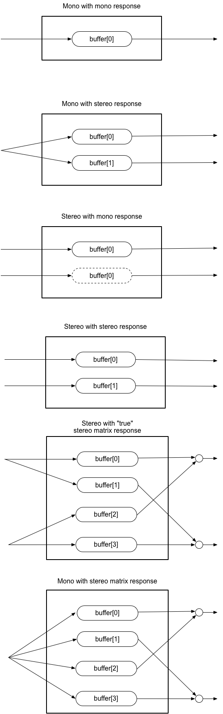
ConvolverNode を使用する際にサポートされる入出力チャンネル数1.18. DelayNode インタフェース
ディレイ機能はオーディオアプリケーションの基本的な構成要素です。 このインタフェースは単一の入力と単一の出力を持つ AudioNode です。
| プロパティ | 値 | 説明 |
|---|---|---|
numberOfInputs
| 1 | |
numberOfOutputs
| 1 | |
channelCount
| 2 | |
channelCountMode
| "max"
| |
channelInterpretation
| "speakers"
| |
| tail-time | Yes | ノードの maxDelayTime まで、入力がゼロでも無音ではないオーディオを出力し続けます。 |
出力のチャンネル数は、常に入力のチャンネル数と同じになります。
これは入力されるオーディオ信号を一定の量だけ遅延させます。 具体的には各時刻 t において、入力信号 input(t) に対して、遅延時間 delayTime(t)、出力信号 output(t) とすると 出力は output(t) = input(t - delayTime(t)) となります。 デフォルトの delayTime は 0 秒 (遅延なし)です。
DelayNode の入力のチャンネル数を変えたとき (つまり出力チャンネル数もまた変化します)、ノードからまだ出力されておらず内部状態にあるサンプルが残っているかも知れません。 すべての内部のディレイ機能のミキシングは単一のチャンネルレイアウトで動作しているため、もしこのような変更前の異なるチャンネル数のサンプルを受け取った場合、それらは新しく受け取られた入力と結合される前にアップミックスまたはダウンミックスされなくてはなりません ( MUST )。
注 :定義により DelayNode は、遅延の量に等しいオーディオ処理レイテンシをもたらします。
[Exposed =Window ]interface DelayNode :AudioNode {constructor (BaseAudioContext ,context optional DelayOptions = {});options readonly attribute AudioParam delayTime ; };
1.18.1. コンストラクタ
DelayNode(context, options)-
コンストラクタが
BaseAudioContextc とオプションオブジェクト option を指定して呼び出される場合、ユーザーエージェントは context と options を引数として AudioNode this を 初期化 しなくてはなりません ( MUST )。DelayNode.constructor() メソッドの引数 パラメータ 型 Null可 省略可 説明 contextBaseAudioContext✘ ✘ この新しい DelayNodeが 関連付け られるBaseAudioContextです。optionsDelayOptions✘ ✔ この DelayNodeのオプションの初期パラメータ値です。
1.18.2. 属性
delayTime, AudioParam 型, readonly-
適用する遅延 ( 単位は秒 ) の量を表す
AudioParamオブジェクトです。 デフォルトのvalueは 0 ( 遅延なし ) です。 最小の値は 0 で最大の値はAudioContextのcreateDelay()メソッドの引数maxDelayTimeまたはコンストラクタのDelayOptionsのmaxDelayTimeメンバーで決定されます。もし
DelayNodeが 循環 の一部である場合、delayTime属性の最小値は 1 レンダリング量子 にクランプされます。パラメータ 値 説明 defaultValue0 minValue0 maxValuemaxDelayTimeautomationRate" a-rate"
1.18.3. DelayOptions
これは、DelayNode を生成するオプションを指定します。 すべてのメンバーはオプションです。 指定されていない場合、ノードは通常のデフォルトを使用して生成されます。
dictionary DelayOptions :AudioNodeOptions {double maxDelayTime = 1;double delayTime = 0; };
1.18.3.1. ディクショナリ DelayOptions メンバー
delayTime, double 型, デフォルト値は0-
ノードの遅延時間の初期値です。
maxDelayTime, double 型, デフォルト値は1-
ノードの最大遅延時間です。 制約については
createDelay(maxDelayTime)を参照してください。
1.18.4. 処理
DelayNode は delayTime 秒のオーディオを保持する内部バッファを持っています。
DelayNode の処理は、遅延ラインへの書き込みと遅延ラインからの読み取りの 2 つの部分に分かれています。 これは 2 つの内部的な AudioNode を介して行われます（開発者が使用するものではなく、ノードの内部動作の説明を簡単にするためのものです）。 これらはどちらも DelayNode によって作成されます。
DelayNode の DelayWriter を作成するということは、AudioNode と同じインタフェースを持ち、DelayNode の内部バッファに入力オーディオを書き込むオブジェクトを作成することを意味します。 基となる DelayNode と同じ入力の接続を持ちます。
DelayNode の DelayReader を作成するということは、AudioNode と同じインタフェースを持ち、DelayNode の内部バッファからオーディオデータを読み取ることができるオブジェクトを作成することを意味します。 基となる DelayNode と同じ AudioNode に接続されます。 DelayReader は ソースノード です。
入力バッファを処理するとき、DelayWriter はオーディオを DelayNode の内部バッファに書き込まなくてはなりません ( MUST )。
出力バッファを生成するとき、DelayReader は対応する DelayWriter が delayTime 秒前に書き込まれたオーディオを正確に生成しなくてはなりません ( MUST )。
注 :これは、チャンネル数の変更は遅延時間が経過した後に反映されることを意味します。
1.19. DynamicsCompressorNode インタフェース
DynamicsCompressorNode は、ダイナミクスコンプレッション効果を実装した AudioNode です。
ダイナミクス・コンプレッションは音楽制作やゲーム・オーディオで非常に良く使用されます。 これは信号の音量が大きな部分を抑え、音量が小さな部分を持ち上げます。 全体として、より大きく、豊かで隙間のない音を作る事ができます。 これは特に、多くの個別サウンドを同時に再生するゲームと音楽アプリケーションで、全体の信号レベルを制御してスピーカーへの出力のクリッピング ( 歪み ) を避けるために重要です。
| プロパティ | 値 | 説明 |
|---|---|---|
numberOfInputs
| 1 | |
numberOfOutputs
| 1 | |
channelCount
| 2 | channelCount の制約 があります。 |
channelCountMode
| "clamped-max"
| channelCountMode の制約 があります。 |
channelInterpretation
| "speakers"
| |
| tail-time | Yes | このノードはルックアヘッド遅延のため、ノードへの入力がゼロでも無音ではないオーディオを出力し続ける テールタイム を持っています。 |
[Exposed =Window ]interface DynamicsCompressorNode :AudioNode {constructor (BaseAudioContext ,context optional DynamicsCompressorOptions = {});options readonly attribute AudioParam threshold ;readonly attribute AudioParam knee ;readonly attribute AudioParam ratio ;readonly attribute float reduction ;readonly attribute AudioParam attack ;readonly attribute AudioParam release ; };
1.19.1. コンストラクタ
DynamicsCompressorNode(context, options)-
コンストラクタが
BaseAudioContextc とオプションオブジェクト option を指定して呼び出される場合、ユーザーエージェントは context と options を引数として AudioNode this を 初期化 しなくてはなりません ( MUST )。[[internal reduction]]を、デシベル単位の浮動小数点数を保持する this の内部スロットとします。[[internal reduction]]を 0.0 に設定します。DynamicsCompressorNode.constructor() メソッドの引数 パラメータ 型 Null可 省略可 説明 contextBaseAudioContext✘ ✘ この新しい DynamicsCompressorNodeが 関連付け られるBaseAudioContextです。optionsDynamicsCompressorOptions✘ ✔ この DynamicsCompressorNodeのオプションの初期パラメータ値です。
1.19.2. 属性
attack, AudioParam 型, readonly-
ゲインを 10dB 下げるために必要な時間 ( 単位は秒 ) です。
パラメータ 値 説明 defaultValue.003 minValue0 maxValue1 automationRate" k-rate"オートメーション速度の制約 があります。 knee, AudioParam 型, readonly-
スレッショルドより上の一定の範囲を表すデシベル値で、この範囲で "ratio" に曲線で滑らかに移行します。
パラメータ 値 説明 defaultValue30 minValue0 maxValue40 automationRate" k-rate"オートメーション速度の制約 があります。 ratio, AudioParam 型, readonly-
出力が 1dB 変化する事に対する入力の dB 変化量です。
パラメータ 値 説明 defaultValue12 minValue1 maxValue20 automationRate" k-rate"オートメーション速度の制約 があります。 reduction, float 型, readonly-
メーター表示のための読み取り専用のデシベル値であり、コンプレッサーが現在信号に適用しているゲインリダクションの量を表します。 信号が入力されていない場合、値は 0 ( ゲイン減少なし ) になります。 この属性が読み取られると、内部スロット
[[internal reduction]]の値を返します。 release, AudioParam 型, readonly-
ゲインを 10dB 上げるために必要な時間 ( 単位は秒 ) です。
パラメータ 値 説明 defaultValue.25 minValue0 maxValue1 automationRate" k-rate"オートメーション速度の制約 があります。 threshold, AudioParam 型, readonly-
この値以上でコンプレッションを開始する dB 値です。
パラメータ 値 説明 defaultValue-24 minValue-100 maxValue0 automationRate" k-rate"オートメーション速度の制約 があります。
1.19.3. DynamicsCompressorOptions
これは DynamicsCompressorNode の生成に使用するオプションを指定します。 すべてのメンバーはオプションです。 指定されていない場合、通常のデフォルトがノードの生成に使用されます。
dictionary DynamicsCompressorOptions :AudioNodeOptions {float attack = 0.003;float knee = 30;float ratio = 12;float release = 0.25;float threshold = -24; };
1.19.3.1. ディクショナリ DynamicsCompressorOptions メンバー
attack, float 型, デフォルト値は0.003-
attackAudioParam の初期値です。 knee, float 型, デフォルト値は30-
kneeAudioParam の初期値です。 ratio, float 型, デフォルト値は12-
ratioAudioParam の初期値です。 release, float 型, デフォルト値は0.25-
releaseAudioParam の初期値です。 threshold, float 型, デフォルト値は-24-
thresholdAudioParam の初期値です。
1.19.4. 処理
ダイナミクスコンプレッションはさまざまな方法で実装できますが、DynamicsCompressorNode は、次の特性を持つダイナミクスプロセッサを実装しています :
-
固定長の先読みを行います ( これは、
DynamicsCompressorNodeが信号チェーンに固定のレイテンシを追加することを意味します )。 -
アタック速度、リリース速度、スレッショルド、ニー特性、およびレシオを設定可能とします。
-
サイドチェインはサポートされません。
-
ゲインリダクションは、
DynamicsCompressorNodeのreductionプロパティを 介して レポートされます。 -
圧縮カーブは 3 つの部分からなります:
-
最初のパートは入力と同一です : \(f(x) = x\)。
-
二番目のパートはソフトニー部分で、単調増加関数でなくてはなりません ( MUST )。
-
三番目のパートは線形関数です : \(f(x) = \frac{1}{ratio} \cdot x \)。
この曲線は、連続的かつ区分的に微分可能であり、入力レベルに基づいて目標とする出力レベルに対応したものでなければなりません ( MUST )。
-
この曲線を図示すると次のようになります :
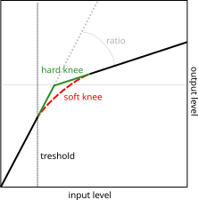
内部的には、DynamicsCompressorNode は、他の AudioNode とゲイン低減値を計算するための特別なアルゴリズムの組み合わせで記述されています。
下の AudioNode グラフが内部で使用されています。 input と output はそれぞれ、AudioNode の入力と出力、context はこの DynamicsCompressorNode の BaseAudioContext コンテキスト、そして以下の通り AudioNode のように動作する特殊オブジェクトをインスタンス化する新しいクラス EnvelopeFollower です :
const delay = new DelayNode(context, {delayTime: 0.006});
const gain = new GainNode(context);
const compression = new EnvelopeFollower();
input.connect(delay).connect(gain).connect(output);
input.connect(compression).connect(gain.gain);
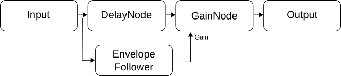
DynamicsCompressorNode 処理アルゴリズムの一部として使用される内部 AudioNode の図注 : これはプリディレイとゲインリダクションの適用について実装しています。
以下のアルゴリズムは、ゲイン低減値を生成するために入力信号に適用される エンベロープフォロワー オブジェクトによって実行される処理を記述しています。 エンベロープフォロワー には、浮動小数点値を保持する 2 つのスロットがあります。 これらの値は、このアルゴリズムの呼び出し間で維持されます。
-
[[detector average]]を浮動小数点の値とし、0.0 に初期化します。 -
[[compressor gain]]を浮動小数点の値とし、1.0 に初期化します。
-
attack と release は、それぞれ処理時に ( k-rate パラメータとして ) サンプリングされた
attackとreleaseの値に、このDynamicsCompressorNodeが 関連付け られているBaseAudioContextのサンプルレートを乗算されています。 -
ディテクター平均 をスロット
[[detector average]]の値とします。 -
コンプレッサーゲイン をスロット
[[compressor gain]]の値とします。 -
処理されるレンダリング量子の各サンプル input ごとに、以下の手順を実行します :
-
input の絶対値が 0.0001 未満の場合は、減衰率は 1.0 です。 そうでない場合、shaped input を input の絶対値に 圧縮カーブ を適用した値とします。 減衰率 は shaped input を input の絶対値で割った値とします。
-
減衰率 が コンプレッサーゲイン よりも大きい場合は、リリース状態 を
trueとし、それ以外の場合はfalseとします。 -
ディテクターレート を 減衰率 に ディテクターカーブ を適用した結果とします。
-
ディテクター平均 を 減衰率 から減算し、その結果に ディテクターレート を掛けます。 そしてこの新しい結果を ディテクター平均 に加えます。
-
ディテクター平均 は最大 1.0 にクランプされます。
-
エンベロープ速度 は、attack と release の値に基づいて エンベロープ速度の計算 を行った結果とします。
-
もし リリース状態 が
trueである場合、コンプレッサーゲイン を コンプレッサーゲイン に エンベロープ速度 を乗じた値に設定し、最大 1.0 にクランプします。 -
そうでなく、リリース状態 が
falseの場合、ゲイン増分 を ディテクター平均 から コンプレッサーゲイン を引いたものにします。 ゲイン増分 に エンベロープ速度 を掛け、その結果を コンプレッサーゲイン に加算します。 -
コンプレッサーゲイン に メイクアップゲインの計算 の戻り値を掛けて、リダクションゲイン を計算します。
-
メーターゲイン は リダクションゲイン を デシベルに変換 したものとします。
-
-
[[compressor gain]]を コンプレッサーゲイン に設定します。 -
[[detector average]]を ディテクター平均 に設定します。 -
内部スロット
[[internal reduction]]を メーターゲイン の値に アトミック に設定します。注 : この手順は、ブロックの処理ごとに一度、処理の最後にメーターゲインを更新します。
メイクアップゲインは、コンプレッサーのレシオ、ニー、およびスレッショルドパラメータにのみ依存する固定された増幅ステージで入力信号には依存しません。 この目的は、コンプレッサーの出力レベルを入力レベルと同程度に高めることです。
-
フルレンジゲイン は、値 1.0 に 圧縮カーブ を適用することによって返される値とします。
-
フルレンジメイクアップゲイン は フルレンジゲイン の逆数とします。
-
フルレンジメイクアップゲイン の 0.6 乗の結果を返します。
-
エンベロープ速度は、コンプレッサーゲイン と ディテクター平均 の比から計算しなければなりません ( MUST )。
注 :アタックのときには、この数値は 1 以下で、リリースのときにはこの数値は 1 よりも大きくなります。
-
アタックの曲線は \([0, 1]\) の範囲で連続した単調増加関数でなければなりません ( MUST )。 この曲線の形は
attackによって制御される場合もあります ( MAY )。 -
リリースの曲線は、常に 1 より大きい連続的で単調減少関数でなければなりません ( MUST )。 この曲線の形状は、
releaseによって制御される場合もあります ( MAY )。
この処理は、コンプレッサーゲイン と ディテクター平均 の比に関数を適用して計算された値を返します。
アタックまたはリリース時の変化率に ディテクターカーブ を適用すると、適応型リリース の実装が可能になります。 関数は次の制約を守らなければなりません ( MUST ) :
-
関数の出力は \([0,1]\) の範囲でなくてはなりません ( MUST )。
-
関数は連続で単調増加でなくてはなりません ( MUST )。
注 :例えば 適応型リリース を実行して、リリースが速くてコンプレッションが遅いコンプレッサー、あるいは、アタックとリリースのカーブの形状が同じではないコンプレッサーも可能です。
-
threshold および knee は、
thresholdおよびkneeの値をそれぞれ リニア値に変換 して、このブロックの処理時に ( k-rate パラメータとして ) サンプリングされた値とします。 -
このブロックの処理時に（ k-rate パラメータとして ）サンプリングされた
thresholdとkneeの合計を計算します。 -
knee end threshold はこの合計を リニア値に変換 した値とします。
-
ratio は、このブロックの処理時に ( k-rate パラメータとして ) サンプリングされた
ratioの値とします。 -
この関数は、threshold の値までは直線的で同一 ( すなわち、 \(f(x) = x\) ) です。
-
threshold から knee end threshold までは、ユーザーエージェントは曲線の形状を選択できます。 関数全体は単調に増加し、連続的でなければなりません。
注 :knee が 0 の場合、
DynamicsCompressorNodeはハードニーコンプレッサーと呼ばれます。 -
threshold とソフトニーの後、この関数は ratio に基づく直線の関数 ( すなわち、\(f(x) = \frac{1}{ratio} \cdot x \)) となります。
-
もし \(v\) がゼロならば -1000 を返します。
-
そうでなければ \( 20 \, \log_{10}{v} \) を返します。
1.20. GainNode インタフェース
オーディオ信号のゲインを変える事はオーディオアプリケーションでは基本的な処理です。 このインタフェースは 1 つの信号入力と 1 つの信号出力を持つ AudioNode です :
| プロパティ | 値 | 説明 |
|---|---|---|
numberOfInputs
| 1 | |
numberOfOutputs
| 1 | |
channelCount
| 2 | |
channelCountMode
| "max"
| |
channelInterpretation
| "speakers"
| |
| tail-time | No |
GainNode の入力データの各チャンネルの各サンプルは gain AudioParam の computedValue が乗じられます ( MUST )。
[Exposed =Window ]interface GainNode :AudioNode {constructor (BaseAudioContext ,context optional GainOptions = {});options readonly attribute AudioParam gain ; };
1.20.1. コンストラクタ
GainNode(context, options)-
コンストラクタが
BaseAudioContextc とオプションオブジェクト option を指定して呼び出される場合、ユーザーエージェントは context と options を引数として AudioNode this を 初期化 しなくてはなりません ( MUST )。GGainNode.constructor() メソッドの引数 パラメータ 型 Null可 省略可 説明 contextBaseAudioContext✘ ✘ この新しい GainNodeが 関連付け られるBaseAudioContextです。optionsGainOptions✘ ✔ この GainNodeのオプションの初期パラメータ値です。
1.20.2. 属性
gain, AudioParam 型, readonly-
適用される増幅度の大きさを表します。
パラメータ 値 説明 defaultValue1 minValue最も負の単精度浮動小数点値 約 -3.4028235e38 maxValue最も正の単精度浮動小数点値 約 3.4028235e38 automationRate" a-rate"
1.20.3. GainOptions
これは GainNode の作成に使用するオプションを指定します。 すべてのメンバーはオプションです。 指定されていない場合は、通常のデフォルトがノードの作成に使用されます。
dictionary GainOptions :AudioNodeOptions {float gain = 1.0; };
1.20.3.1. ディクショナリ GainOptions メンバー
gain, float 型, デフォルト値は1.0-
gainAudioParam の初期値です。
1.21. IIRFilterNode インタフェース
IIRFilterNode は汎用の IIR フィルタ を実装した AudioNode です。 一般的には高次のフィルタについては次のような理由で BiquadFilterNode を利用するのが最善です :
-
一般的に数値的な問題に関して敏感ではありません
-
フィルタのパラメータがオートメーションできます
-
すべての偶数次 IIR フィルタの作成に使用できます
しかしながら奇数次フィルタは作成できず、もしそのようなフィルタが必要な場合やオートメーションが不要ならば IIR フィルタが適切かもしれません。
一度作成された後、IIR フィルタの係数は変更する事ができません。
| プロパティ | 値 | 説明 |
|---|---|---|
numberOfInputs
| 1 | |
numberOfOutputs
| 1 | |
channelCount
| 2 | |
channelCountMode
| "max"
| |
channelInterpretation
| "speakers"
| |
| tail-time | Yes | ゼロの入力に対して非ゼロのオーディオを出力し続けます。 これは IIR フィルタであるため、ゼロ以外の入力が永続的に生成されますが、実際には、出力が十分にゼロに近くなる有限時間に制限される可能性があります。 実際の時間はフィルタ係数に依存します。 |
出力のチャンネル数は常に入力のチャンネル数と同じになります。
[Exposed =Window ]interface IIRFilterNode :AudioNode {constructor (BaseAudioContext ,context IIRFilterOptions );options undefined getFrequencyResponse (Float32Array ,frequencyHz Float32Array ,magResponse Float32Array ); };phaseResponse
1.21.1. コンストラクタ
IIRFilterNode(context, options)-
コンストラクタが
BaseAudioContextc とオプションオブジェクト option を指定して呼び出される場合、ユーザーエージェントは context と options を引数として AudioNode this を 初期化 しなくてはなりません ( MUST )。IIRFilterNode.constructor() メソッドの引数 パラメータ 型 Null可 省略可 説明 contextBaseAudioContext✘ ✘ この新しい IIRFilterNodeが 関連付け られるBaseAudioContextです。optionsIIRFilterOptions✘ ✘ この IIRFilterNodeのオプションの初期パラメータ値です。
1.21.2. メソッド
getFrequencyResponse(frequencyHz, magResponse, phaseResponse)-
与えられた現在のフィルタパラメータの設定で、指定された周波数の周波数応答を同期的に計算します。 3 つのパラメータは、同じ長さの
Float32Arrayでなければならず ( MUST )、そうでなければInvalidAccessErrorを発生します ( MUST )。IIRFilterNode.getFrequencyResponse() メソッドの引数 パラメータ 型 Null可 省略可 説明 frequencyHzFloat32Array✘ ✘ このパラメータは、応答を計算する周波数の配列を Hz で指定します。 magResponseFloat32Array✘ ✘ このパラメータは、リニア振幅応答の出力結果を受け取る配列を指定します。 もし frequencyHzパラメータの値が [0, sampleRate / 2] の範囲にない場合 ( ここでsampleRateはAudioContextのsampleRateプロパティの値です )、magResponse配列の同じインデックスの対応する値はNaNにならなくてはなりません ( MUST )。phaseResponseFloat32Array✘ ✘ このパラメータは、ラジアンで出力される位相応答値を受け取る配列を指定します。 もし frequencyHzパラメータの値が [0; sampleRate / 2] の範囲にない場合 ( ここで、sampleRateはAudioContextのsampleRateプロパティの値です )、phaseResponse配列の同じインデックスの対応する値はNaNにならなくてはなりません ( MUST )。戻り値 :undefined
1.21.3. IIRFilterOptions
IIRFilterOptions ディクショナリは、IIRFilterNode のフィルタ係数を指定するために使用されます。
dictionary IIRFilterOptions :AudioNodeOptions {required sequence <double >feedforward ;required sequence <double >feedback ; };
1.21.3.1. ディクショナリ IIRFilterOptions メンバー
feedforward, sequence<double> 型-
IIRFilterNodeのフィードフォワード係数です。 このメンバーは必須です。 他の制約については、createIIRFilter()のfeedforward引数を参照してください。 feedback, sequence<double> 型-
IIRFilterNodeのフィードバック係数です。 このメンバーは必須です。 他の制約については、createIIRFilter()のfeedback引数を参照してください。
1.21.4. フィルタの定義
createIIRFilter() または コンストラクタ の IIRFilterOptions ディクショナリで指定される feedforward 係数を \(b_m\) feedback 係数を \(a_n\) とします。 すると一般的な IIR フィルタの 伝達関数は次のように与えられます。
$$
H(z) = \frac{\sum_{m=0}^{M} b_m z^{-m}}{\sum_{n=0}^{N} a_n z^{-n}}
$$
ここで \(M + 1\) は \(b\) 配列の長さ、\(N + 1\) は \(a\) 配列の長さです。 係数 \(a_0\) は 0 であってはいけません ( MUST ) ( createIIRFilter() の feedback parameter を参照してください )。 \(b_m\) の少なくとも 1 つは 非 0 でなくてはなりません ( MUST ) ( createIIRFilter() の feedforward parameter を参照してください )。
同じように、時間領域の式については :
$$
\sum_{k=0}^{N} a_k y(n-k) = \sum_{k=0}^{M} b_k x(n-k)
$$
フィルタの初期状態は、全てゼロ状態です。
注 :UAは、フィルタの状態に NaN 値が発生したことをユーザーに通知する警告を出す場合があります。 これは通常、不安定なフィルタを示しています。
1.22. MediaElementAudioSourceNode インタフェース
このインタフェースは audio または video 要素からの音声ソースを表します。
| プロパティ | 値 | 説明 |
|---|---|---|
numberOfInputs
| 0 | |
numberOfOutputs
| 1 | |
| tail-time reference | No |
出力のチャンネル数は HTMLMediaElement で参照されるメディアのチャンネル数に対応します。 そのため、メディア要素の src 属性を変更する事によって、このノードの出力のチャンネル数が変化します。
HTMLMediaElement のサンプルレートが、関連する AudioContext のサンプルレートと異なる場合、HTMLMediaElement からの出力は、コンテキストの サンプルレート と一致するようにリサンプリングされなくてはなりません。
MediaElementAudioSourceNode は、AudioContext の createMediaElementSource() メソッドまたは コンストラクタ で MediaElementAudioSourceOptions ディクショナリの mediaElement メンバーにより、HTMLMediaElement を指定して作成されます。
1つだけある出力のチャネル数は createMediaElementSource() への引数として渡された HTMLMediaElement によって参照されるオーディオのチャネル数に等しい、あるいは HTMLMediaElement がオーディオをもっていない場合は 1 になります。
HTMLMediaElement は MediaElementAudioSourceNode が作成された後、オーディオが直接音として再生されなくなる代わりに MediaElementAudioSourceNode からルーティンググラフを通して再生されるようになる事を 除けば、全く同じに振る舞わなくてはなりません ( MUST )。 つまり、ポーズ、シーク、ボリューム、src 属性の変更、その他 HTMLMediaElement としての見掛けは MediaElementAudioSourceNode を使用して いない 場合と同様に通常どおり働かなくてはなりません ( MUST )。
const mediaElement= document. getElementById( 'mediaElementID' ); const sourceNode= context. createMediaElementSource( mediaElement); sourceNode. connect( filterNode);
[Exposed =Window ]interface MediaElementAudioSourceNode :AudioNode {constructor (AudioContext ,context MediaElementAudioSourceOptions ); [options SameObject ]readonly attribute HTMLMediaElement mediaElement ; };
1.22.1. コンストラクタ
MediaElementAudioSourceNode(context, options)-
-
context と options を引数として AudioNode this を 初期化 します。
MediaElementAudioSourceNode.constructor() メソッドの引数 パラメータ 型 Null可 省略可 説明 contextAudioContext✘ ✘ この新しい MediaElementAudioSourceNodeが 関連付け られるAudioContextです。optionsMediaElementAudioSourceOptions✘ ✘ この MediaElementAudioSourceNodeの初期パラメータ値です。 -
1.22.2. 属性
mediaElement, HTMLMediaElement 型, readonly-
この
MediaElementAudioSourceNodeを生成する際に使用されるHTMLMediaElementです。
1.22.3. MediaElementAudioSourceOptions
MediaElementAudioSourceNode を生成する際のオプションを指定するために使用されます。
dictionary MediaElementAudioSourceOptions {required HTMLMediaElement mediaElement ; };
1.22.3.1. ディクショナリ MediaElementAudioSourceOptions メンバー
mediaElement, HTMLMediaElement-
再ルーティングされるメディア要素です。 この指定は必須です ( MUST )。
1.22.4. MediaElementAudioSourceNode とクロスオリジン・リソースに関するセキュリティ
HTMLMediaElement はクロスオリジン・リソースの再生が可能です。 Web Audio はリソースの内容の検査が、( 例えば MediaElementAudioSourceNode や AudioWorkletNode や ScriptProcessorNode を使ってサンプルを読む事で ) 可能なので、もしある origin からのスクリプトが別の origin からのリソースの内容を検査する事で情報の漏洩が起こり得ます。
これを防ぐために MediaElementAudioSourceNode は、フェッチアルゴリズム [FETCH] の実行によってリソースが CORS-cross-origin としてラベル付けされた HTMLMediaElement を使用して作成された場合、HTMLMediaElement の通常の出力の代わりに 無音 を出力する必要があります ( MUST )。
1.23. MediaStreamAudioDestinationNode インタフェース
このインタフェースは kind が "audio" の 1 つの MediaStreamTrack を持つ MediaStream を表すオーディオの出力地点となります。 この MediaStream は、ノードが作成された時点で作られ、stream 属性を通じてアクセスする事ができます。 このストリームは、getUserMedia() によって得られた MediaStream と同様の方法で使う事ができ、例えば、 RTCPeerConnection ( [webrtc] で説明されています ) の addStream() メソッドを使って、リモートピアに送る事ができます。
| プロパティ | 値 | 説明 |
|---|---|---|
numberOfInputs
| 1 | |
numberOfOutputs
| 0 | |
channelCount
| 2 | |
channelCountMode
| "explicit"
| |
channelInterpretation
| "speakers"
| |
| tail-time | No |
入力のチャンネル数はデフォルトで 2 (ステレオ)です。
[Exposed =Window ]interface MediaStreamAudioDestinationNode :AudioNode {constructor (AudioContext ,context optional AudioNodeOptions = {});options readonly attribute MediaStream stream ; };
1.23.1. コンストラクタ
MediaStreamAudioDestinationNode(context, options)-
-
context と options を引数として AudioNode this を 初期化 します。
MediaStreamAudioDestinationNode.constructor() メソッドの引数 パラメータ 型 Null可 省略可 説明 contextAudioContext✘ ✘ この新しい MediaStreamAudioDestinationNodeが 関連付け られるBaseAudioContextです。optionsAudioNodeOptions✘ ✔ この MediaStreamAudioDestinationNodeのオプションの初期パラメータ値です。 -
1.23.2. 属性
stream, MediaStream 型, readonly-
ノード自身と同じチャンネル数の 1 つの
MediaStreamTrackを持ち、そのkind属性は"audio"であるMediaStreamです。
1.24. MediaStreamAudioSourceNode インタフェース
このインタフェースは MediaStream からのオーディオソースを表します。
| プロパティ | 値 | 説明 |
|---|---|---|
numberOfInputs
| 0 | |
numberOfOutputs
| 1 | |
| tail-time reference | No |
出力のチャンネル数は MediaStreamTrack のチャンネル数に対応します。 MediaStreamTrack が終了すると、この AudioNode の出力は 1 チャンネルの無音となります。
MediaStreamTrack のサンプルレートが、関連する AudioContext のサンプルレートと異なる場合、 MediaStreamTrack の出力は、コンテキストの サンプルレート に一致するようにリサンプリングされます。
[Exposed =Window ]interface MediaStreamAudioSourceNode :AudioNode {constructor (AudioContext ,context MediaStreamAudioSourceOptions ); [options SameObject ]readonly attribute MediaStream mediaStream ; };
1.24.1. コンストラクタ
MediaStreamAudioSourceNode(context, options)-
-
optionsのmediaStreamメンバーが、kind属性の値が"audio"であるMediaStreamTrackが少なくとも 1 つあるMediaStreamを参照していない場合は、InvalidStateErrorを発生し、これらの手順を中止します。 そうでない場合は、このストリームを inputStream とします。 -
tracks を
kindが"audio"である inputStream のすべてのMediaStreamTrackのリストとします。 -
tracks の要素を
id属性の コードユニット 値の順序に基づいてソートします。 -
context と options を引数として AudioNode this を 初期化 します。
-
この
MediaStreamAudioSourceNodeの内部スロット[[input track]]を tracks の最初の要素とします。 これがこのMediaStreamAudioSourceNodeの入力オーディオとして使用されるトラックになります。
構築後に、コンストラクタに渡された
MediaStreamに変更を加えても、このAudioNodeの出力に影響を与えません。スロット
[[input track]]は、MediaStreamTrackへの参照を維持するためにのみ使用されます。注 :これは
MediaStreamAudioSourceNodeのコンストラクタによって選択されたトラックをこのコンストラクタに渡されたMediaStreamから削除しても、MediaStreamAudioSourceNodeは同じトラックから入力を取得し続けることを意味します。注 :歴史的な理由により、出力するトラックをどのように選択するかは任意です。 代わりに
MediaStreamTrackAudioSourceNodeを使用すると、入力として使用するトラックを明示的に選択できます。MediaStreamAudioSourceNode.constructor() メソッドの引数 パラメータ 型 Null可 省略可 説明 contextAudioContext✘ ✘ この新しい MediaStreamAudioSourceNodeが 関連付け られるAudioContextです。optionsMediaStreamAudioSourceOptions✘ ✘ この MediaStreamAudioSourceNodeの初期パラメータ値です。 -
1.24.2. Attributes
mediaStream, MediaStream 型, readonly-
この
MediaStreamAudioSourceNodeを構築するときに使用されるMediaStreamです。
1.24.3. MediaStreamAudioSourceOptions
MediaStreamAudioSourceNode を構築するためのオプションを指定します。
dictionary MediaStreamAudioSourceOptions {required MediaStream mediaStream ; };
1.24.3.1. ディクショナリ MediaStreamAudioSourceOptions メンバー
mediaStream, MediaStream 型-
ソースとなるメディアストリームです。 これは必須になります ( MUST )。
1.25. MediaStreamTrackAudioSourceNode インタフェース
このインタフェースは MediaStreamTrack からの音源を表します。
| プロパティ | 値 | 説明 |
|---|---|---|
numberOfInputs
| 0 | |
numberOfOutputs
| 1 | |
| tail-time reference | No |
出力のチャンネル数は mediaStreamTrack のチャンネル数に対応したものになります。
MediaStreamTrack のサンプルレートが、関連する AudioContext のサンプルレートと異なる場合、mediaStreamTrack の出力は、コンテキストの サンプルレート に一致するようにリサンプリングされます。
[Exposed =Window ]interface MediaStreamTrackAudioSourceNode :AudioNode {constructor (AudioContext ,context MediaStreamTrackAudioSourceOptions ); };options
1.25.1. コンストラクタ
MediaStreamTrackAudioSourceNode(context, options)-
-
mediaStreamTrackのkind属性が"audio"でない場合は、InvalidStateErrorを発生し、これらの手順を中止します。 -
context と options を引数として AudioNode this を 初期化 します。
MediaStreamTrackAudioSourceNode.constructor() メソッドの引数 パラメータ 型 Null可 省略可 説明 contextAudioContext✘ ✘ この新しい MediaStreamTrackAudioSourceNodeが 関連付け られるAudioContextです。optionsMediaStreamTrackAudioSourceOptions✘ ✘ この MediaStreamTrackAudioSourceNodeの初期パラメータ値です。 -
1.25.2. MediaStreamTrackAudioSourceOptions
MediaStreamTrackAudioSourceNode を構築するためのオプションを指定します。 これは必須になります。
dictionary MediaStreamTrackAudioSourceOptions {required MediaStreamTrack mediaStreamTrack ; };
1.25.2.1. ディクショナリ MediaStreamTrackAudioSourceOptions メンバー
mediaStreamTrack, MediaStreamTrack 型-
音源となるメディアストリームトラックです。 この
MediaStreamTrackのkind属性が"audio"でない場合InvalidStateErrorを発生します ( MUST )。
1.26. OscillatorNode インタフェース
OscillatorNode は周期的な波形を発生するオーディオソースを表しています。 これは一般的に使われるいくつかの波形に設定する事ができます。 さらにこれは PeriodicWave オブジェクトを使って任意の周期波形に設定する事が可能です。
オシレーターは音の合成において一般的な基本構成ブロックです。 OscillatorNode は start() メソッドで指定された時刻に音の発生を開始します。
数学的に言えば、連続した時間 の周期波形は周波数領域で考えた場合、非常に高い ( あるいは無限に高い ) 周波数情報を持つ事ができます。 この波形があるサンプルレートの離散時間のデジタルオーディオ信号としてサンプリングされる場合、波形をデジタル化する前に ナイキスト周波数 よりも高い高周波数成分の除去 ( フィルタで取り除く事 ) を考慮しなくてはなりません ( MUST )。 これを行わない場合、( ナイキスト周波数 よりも ) 高い周波数の エイリアス が ナイキスト周波数 よりも低い周波数に鏡像として折り返されます。 多くの場合、これは音として聴こえる好ましくないノイズを引き起こします。 これはオーディオ DSP における基本的で良く知られている原理です。
このエイリアスを避けるため、実装に使う事のできるいくつかの実践的な手段があります。 しかしこれらの手段によらず、理想的 な離散時間のデジタルオーディオ信号は数学的には完全に定義されます。 ( CPU の負荷という意味で) 実装のコスト対、理想への忠実性というトレードオフが実装上の問題になります。
実装はこの理想を達成するためにいくらかの考慮をする事が期待されますが、ローエンドのハードウェアでは低品質ローコストな手段を考慮する事も合理的です。
frequency と detune はどちらも a-rate パラメータで、複合パラメータ となります。 これらは computedOscFrequency の値を決定するために組み合わされて使用されます:
computedOscFrequency(t) = frequency(t) * pow(2, detune(t) / 1200)
OscillatorNode の各時刻での瞬間的な位相は、ノードの正確なスタート時刻において位相角をゼロとして computedOscFrequency を時間で積分したものになります。 その 公称範囲 は [-ナイキスト周波数, ナイキスト周波数] となります。
このノードの出力は 1 つだけで、1 つのチャネル (モノラル) で構成されます。
| プロパティ | 値 | 説明 |
|---|---|---|
numberOfInputs
| 0 | |
numberOfOutputs
| 1 | |
channelCount
| 2 | |
channelCountMode
| "max"
| |
channelInterpretation
| "speakers"
| |
| tail-time | No |
enum {OscillatorType "sine" ,"square" ,"sawtooth" ,"triangle" ,"custom" };
| 列挙値 | 説明 |
|---|---|
"sine"
| サイン波 |
"square"
| デューティ比 0.5 の矩形波 |
"sawtooth"
| 鋸歯状波 |
"triangle"
| 三角波 |
"custom"
| カスタム周期波形 |
[Exposed =Window ]interface OscillatorNode :AudioScheduledSourceNode {constructor (BaseAudioContext ,context optional OscillatorOptions = {});options attribute OscillatorType type ;readonly attribute AudioParam frequency ;readonly attribute AudioParam detune ;undefined setPeriodicWave (PeriodicWave ); };periodicWave
1.26.1. コンストラクタ
OscillatorNode(context, options)-
コンストラクタが
BaseAudioContextc とオプションオブジェクト option を指定して呼び出された時、ユーザーエージェントは context と options を引数として AudioNode this を 初期化 しなくてはなりません ( MUST )。OscillatorNode.constructor() メソッドの引数 パラメータ 型 Null可 省略可 説明 contextBaseAudioContext✘ ✘ この新しい OscillatorNodeが 関連付け られるBaseAudioContextですoptionsOscillatorOptions✘ ✔ この OscillatorNodeの初期パラメータ値です。
1.26.2. 属性
detune, AudioParam 型, readonly-
( セント で表される ) デチューン値で、これは
frequencyを与えられた量だけオフセットします。 デフォルトのvalueは 0 です。 このパラメータは a-rate です。 これはfrequencyと組み合わせて 複合パラメータ となり、computedOscFrequency を決定します。 下の表で示される公称範囲により、このパラメータを使用してfrequencyを可能な周波数範囲全体にわたってデチューンすることができますパラメータ 値 説明 defaultValue0 minValue\(\approx -153600\) maxValue\(\approx 153600\) この値は約 \(1200\ \log_2 \mathrm{FLT\_MAX}\) となります。 ここで FLT_MAX は floatの最大値です。automationRate" a-rate" frequency, AudioParam 型, readonly-
( Hz:ヘルツで表される ) 周期波形の周波数で、そのデフォルトの
valueは 440 です。 このパラメータは a-rate です。 これはdetuneと組み合わされて 複合パラメータ となり、computedOscFrequency を構成します。 その 公称範囲 は [-ナイキスト周波数, ナイキスト周波数] です。パラメータ 値 説明 defaultValue440 minValue-ナイキスト周波数 maxValueナイキスト周波数 automationRate" a-rate" type, OscillatorType 型-
周期波形の形状です。 "
custom" 以外の波形の定数値は直接設定する事ができます。 "custom" の場合はInvalidStateError例外を発生します ( MUST )。 カスタム波形を設定するにはsetPeriodicWave()メソッドを使用する事ができ、それによってこの属性は "custom" に設定されます。 デフォルト値は "sine" です。 属性が設定されたとき、オシレーターの位相は保存されなくてはなりません ( MUST )。
1.26.3. メソッド
setPeriodicWave(periodicWave)-
PeriodicWaveで与えられる任意のカスタム周期波形を設定します。OscillatorNode.setPeriodicWave() メソッドの引数 パラメータ 型 Null可 省略可 説明 periodicWavePeriodicWave✘ ✘ オシレーターが使用するカスタム波形 戻り値 :undefined
1.26.4. OscillatorOptions
これは OscillatorNode を作成するときに使用されるオプションを指定します。 すべてのメンバーはオプションです。 指定されていない場合、通常のデフォルト値がオシレーターの作成に使用されます。
dictionary OscillatorOptions :AudioNodeOptions {OscillatorType type = "sine";float frequency = 440;float detune = 0;PeriodicWave periodicWave ; };
1.26.4.1. ディクショナリ OscillatorOptions メンバー
detune, float 型, デフォルト値は0-
OscillatorNodeの detune の初期値です。 frequency, float 型, デフォルト値は440-
OscillatorNodeの frequency の初期値です。 periodicWave, PeriodicWave-
OscillatorNodeのPeriodicWaveです。 もしこれが指定されているならば、typeに有効な値が設定されていても無視され、"custom" が指定されたように処理されます。 type, OscillatorType 型, デフォルト値は"sine"-
生成するオシレーターのタイプです。 これが
periodicWaveを指定せずに "custom" に設定されている場合、InvalidStateError例外を発生します ( MUST )。periodicWaveが指定されている場合、typeに有効な値があっても無視され、"custom" に設定されているかのように扱われます。
1.26.5. 基本波形の位相
様々なオシレーターのタイプのための理想的な数学的波形をここで定義します。 概要としてはすべての波形は時間 0 のときに正の傾きを持つ奇関数として数学的に定義されます。 実際にオシレーターで生成される波形はエイリアシングの影響を避けるため少し異なったものになります。
オシレーターは、適切な フーリエ級数 で、disableNormalization を false に設定した PeriodicWave を使用してこれらの基本波形を作成した場合と同じ結果を生成しなくてはなりません ( MUST )。
- "
sine" -
サイン波のオシレーター波形は :
$$ x(t) = \sin t $$ - "
square" -
矩形波のオシレーター波形は :
$$ x(t) = \begin{cases} 1 & \mbox{for } 0≤ t < \pi \\ -1 & \mbox{for } -\pi < t < 0. \end{cases} $$これは、波形が周期 \(2\pi\) の奇関数であることを利用して、すべての \(t\) に拡張されます。
- "
sawtooth" -
鋸歯状波オシレーターの波形は上昇波形です :
$$ x(t) = \frac{t}{\pi} \mbox{ for } -\pi < t ≤ \pi; $$これは、波形が周期 \(2\pi\) の奇関数であることを利用して、すべての \(t\) に拡張されます。
- "
triangle" -
三角波オシレーターの波形は :
$$ x(t) = \begin{cases} \frac{2}{\pi} t & \mbox{for } 0 ≤ t ≤ \frac{\pi}{2} \\ 1-\frac{2}{\pi} \left(t-\frac{\pi}{2}\right) & \mbox{for } \frac{\pi}{2} < t ≤ \pi. \end{cases} $$これは、波形が周期 \(2\pi\) の奇関数であることを利用して、すべての \(t\) に拡張されます。
1.27. PannerNode インタフェース
このインタフェースは、入力オーディオストリームを 3 次元空間に 配置 / 空間化 する処理ノードを表します。 空間化は、 BaseAudioContext の AudioListener ( listener 属性 ) に関連しています。
| プロパティ | 値 | 説明 |
|---|---|---|
numberOfInputs
| 1 | |
numberOfOutputs
| 1 | |
channelCount
| 2 | channelCount の制約 があります。 |
channelCountMode
| "clamped-max"
| channelCountMode の制約 があります。 |
channelInterpretation
| "speakers"
| |
| tail-time | Maybe | もし panningModel が "HRTF" に設定されている場合、ノードは頭部応答の固有の処理のために無音入力に対して非無音の出力を生成します。 そうでなければ、テールタイム参照はありません。 |
このノードの入力は、モノラル ( 1 チャンネル ) またはステレオ ( 2 チャンネル ) のいずれかであり、増加させることはできません。 より少ないまたは多いチャンネルを持つノードからの接続は、適切にアップミックスまたはダウンミックス されます。
もしノードが アクティブに処理 されている場合、このノードの出力はステレオ ( 2 チャンネル ) に固定されており、変更する事はできません。 もしノードが アクティブに処理 されていない場合、出力は 1 チャンネルの無音となります。
PanningModelType 列挙値は 3D 空間でのオーディオの定位にどのアルゴリズムを使用するかを決定します。 デフォルトは "equalpower" です。
enum {PanningModelType "equalpower" ,"HRTF" };
| 列挙値 | 説明 |
|---|---|
"equalpower"
| 単純で効率的な空間音響アルゴリズムで、等価パワーによるパンニングを行います。
注 :このパンニングモデルを使用すると、このノードの出力を計算するために使用されるすべての |
"HRTF"
| より高品質な空間音響アルゴリズムで、人体を使ったインパルスレスポンス測定からのコンボリューション処理を使用します。 このパンニング方法はステレオ出力にレンダリングされます。
注 :このパンニングモデルを使用すると、このノードの出力を計算するために使用されるすべての |
PannerNode の AudioParam の 有効なオートメーション速度 は panningModel と AudioParam の automationRate によって決まります。 panningModel が "HRTF" の場合、有効なオートメーション速度 は automationRate の設定とは無関係に "k-rate" になります。 それ以外の場合、有効なオートメーション速度 は automationRate の値になります。
DistanceModelType 列挙値は 音源がリスナーから離れていったとき、音量を減衰させるためにどのアルゴリズムを使用するかを決定します。 デフォルトは "inverse" です。
次のそれぞれの距離モデルの説明で、\(d\) はリスナーとパンナーの距離、\(d_{ref}\) は refDistance 属性の値、\(d_{max}\) は maxDistance 属性の値、\(f\) は rolloffFactor の値です。p>
enum {DistanceModelType "linear" ,"inverse" ,"exponential" };
| 列挙値 | 説明 |
|---|---|
"linear"
|
distanceGain を次のように計算する直線距離モデルです :
$$
1 - f\ \frac{\max\left[\min\left(d, d'_{max}\right), d'_{ref}\right] - d'_{ref}}{d'_{max} - d'_{ref}}
$$
ここで \(d'_{ref} = \min\left(d_{ref}, d_{max}\right)\) 、 \(d'_{max} = \max\left(d_{ref}, d_{max}\right)\) とします。 \(d'_{ref} = d'_{max}\) の場合は、直線距離モデルが取る値は \(1-f\). \(d\) は \(\left[d'_{ref},\, d'_{max}\right]\) の範囲に制限される事に注意してください。 |
"inverse"
|
distanceGain を次のように計算する、距離の逆数モデルです :
$$
\frac{d_{ref}}{d_{ref} + f\ \left[\max\left(d, d_{ref}\right) - d_{ref}\right]}
$$
ここで \(d\) は \(\left[d_{ref},\, \infty\right)\) の範囲に制限されます。 もし \(d_{ref} = 0\) の場合、逆数距離モデルの値は \(d\) と \(f\) の値とは無関係に 0 になります。 |
"exponential"
|
distanceGain を次のように計算する指数距離モデルです :
$$
\left[\frac{\max\left(d, d_{ref}\right)}{d_{ref}}\right]^{-f}
$$
ここで \(d\) は \(\left[d_{ref},\, \infty\right)\) の範囲に制限されます。 もし \(d_{ref} = 0\) の場合、指数距離モデルの値は \(d\) と \(f\) の値とは無関係に 0 になります。 |
[Exposed =Window ]interface PannerNode :AudioNode {constructor (BaseAudioContext ,context optional PannerOptions = {});options attribute PanningModelType panningModel ;readonly attribute AudioParam positionX ;readonly attribute AudioParam positionY ;readonly attribute AudioParam positionZ ;readonly attribute AudioParam orientationX ;readonly attribute AudioParam orientationY ;readonly attribute AudioParam orientationZ ;attribute DistanceModelType distanceModel ;attribute double refDistance ;attribute double maxDistance ;attribute double rolloffFactor ;attribute double coneInnerAngle ;attribute double coneOuterAngle ;attribute double coneOuterGain ;undefined setPosition (float ,x float ,y float );z undefined setOrientation (float ,x float ,y float ); };z
1.27.1. コンストラクタ
PannerNode(context, options)-
コンストラクタが
BaseAudioContextc とオプションオブジェクト option を指定して呼び出される場合、ユーザーエージェントは context と options を引数として AudioNode this を 初期化 しなくてはなりません ( MUST )。PannerNode.constructor() メソッドの引数 パラメータ 型 Null可 省略可 説明 contextBaseAudioContext✘ ✘ この新しい PannerNodeが 関連付け られるBaseAudioContextです。optionsPannerOptions✘ ✔ この PannerNodeのオプションの初期パラメータ値です。
1.27.2. 属性
coneInnerAngle, double 型-
音源の指向性パラメータで、度で表す角度です。 この角度の内部では音量減衰が生じません。 デフォルトの値は 360 で、角度が [ 0, 360 ] の範囲外の場合の動作は未定義です。
coneOuterAngle, double 型-
音源の指向性パラメータで、度で表す角度です。 この角度の外部では音量は
coneOuterGainの一定値に減衰します。 デフォルト値は 360 です。 角度が [ 0, 360 ] の範囲外の場合の動作は未定義です。 coneOuterGain, double 型-
音源の指向性パラメータで、角度が
coneOuterAngleの外側の場合の減衰率です。 デフォルト値は 0 です。 これは、( dB 値ではなく ) [ 0, 1 ] の範囲のリニア値です。 パラメータがこの範囲外の場合はInvalidStateErrorを発生します ( MUST )。 distanceModel, DistanceModelType 型-
この
PannerNodeによって使用される距離モデルを指定します。 デフォルトは "inverse" です。 maxDistance, double 型-
音源とリスナーの間の最大距離で、これ以上距離が離れても音量はそれ以上減衰しません。 デフォルト値は 10000 です。 これが正の値に設定されていない場合
RangeError例外を発生します ( MUST )。 orientationX, AudioParam 型, readonly-
3D デカルト座標空間で音源が向いている方向のベクトルの \(x\) 成分を表します
パラメータ 値 説明 defaultValue1 minValue最も負の単精度浮動小数点値 約 -3.4028235e38 maxValue最も正の浮動小数点値 約 3.4028235e38 automationRate" a-rate"オートメーション速度の制約 があります。 orientationY, AudioParam 型, readonly-
3D デカルト座標空間で音源が向いている方向のベクトルの \(y\) 成分を表します
パラメータ 値 説明 defaultValue0 minValue最も負の 単精度浮動小数点値 約 -3.4028235e38 maxValue最も正の単精度浮動小数点値 約 3.4028235e38 automationRate" a-rate"オートメーション速度の制約 があります。 orientationZ, AudioParam 型, readonly-
3D デカルト座標空間で音源が向いている方向のベクトルの \(z\) 成分を表します。
パラメータ 値 説明 defaultValue0 minValue最も負の単精度浮動小数点値 約 -3.4028235e38 maxValue最も正の単精度浮動小数点値 約 3.4028235e38 automationRate" a-rate"オートメーション速度の制約 があります。 panningModel, 、 PanningModelType 型-
この
PannerNodeで使用されるバンニングモデルを指定します。 デフォルトは "equalpower" です。 positionX, AudioParam 型, readonly-
3D デカルト座標空間で音源の位置の \(x\) 座標を表します。
パラメータ 値 説明 defaultValue0 minValue最も負の単精度浮動小数点値 約 -3.4028235e38 maxValue最も正の単精度浮動小数点値 約 3.4028235e38 automationRate" a-rate"オートメーション速度の制約 があります。 positionY, AudioParam 型, readonly-
3D デカルト座標空間で音源の位置の \(y\) 座標を表します。
パラメータ 値 説明 defaultValue0 minValue最も負の単精度浮動小数点値 約 -3.4028235e38 maxValue最も正の単精度浮動小数点値 約 3.4028235e38 automationRate" a-rate"オートメーション速度の制約 があります。 positionZ, AudioParam 型, readonly-
3D デカルト座標空間で音源の位置の \(z\) 座標を表します。
パラメータ 値 説明 defaultValue0 minValue最も負の単精度浮動小数点値 約 -3.4028235e38 maxValue最も正の単精度浮動小数点値 約 3.4028235e38 automationRate" a-rate"オートメーション速度の制約 があります。 refDistance, double 型-
音源がリスナーから離れていったときの音量減衰の基準となる距離です。 これより距離が短いと音量は減衰しません。 デフォルトの値は 1 です。 もしこの値を負の値に設定すると
RangeError例外を発生します ( MUST )。 rolloffFactor, double 型-
音源がリスナーが離れていったときの音量減衰の速さを表します。 デフォルトの値は 1 です。 もしこの値が負の値の場合は
RangeError例外を発生します ( MUST )。rolloffFactorの公称範囲は、rolloffFactorが持つことができる最小値と最大値です。 値が範囲外の場合はこの範囲内におさまるようにクランプされます。 公称範囲はdistanceModelによって以下のように依存します :- "
linear" -
公称範囲は \([0, 1]\) です。
- "
inverse" -
公称範囲は \([0, \infty)\) です。
- "
exponential" -
公称範囲は \([0, \infty)\) です。
クランプは、距離計算の処理の一部として行われることに注意してください。 属性の値は設定された値を反映し、変更されません。
- "
1.27.3. メソッド
setOrientation(x, y, z)-
このメソッドは非推奨 (DEPRECATED) です。 これは
orientationX.value、orientationY.value、 およびorientationZ.value属性をそれぞれx、y、zパラメータで直接設定することと等価です。したがって、このメソッドが呼び出された時点で
orientationX、orientationY、 およびorientationZのAudioParamのいずれかにsetValueCurveAtTime()を使用してオートメーションカーブが設定されている場合は、NotSupportedErrorを発生します ( MUST )。音源が 3D デカルト座標空間でどの方向を指しているかを指定します。 ( cone 属性によって制御される ) 音の指向性に応じて、リスナーから離れたところにある音は、非常に小さくなったり完全に無音になったりすることがあります。
x, y, zパラメータは 3D 空間内での方向ベクトルを表します。デフォルトの値は ( 1, 0, 0 ) です。
PannerNode.setOrientation() メソッドの引数 パラメータ 型 Null可 省略可 説明 xfloat✘ ✘ yfloat✘ ✘ zfloat✘ ✘ 戻り値 :undefined setPosition(x, y, z)-
このメソッドは非推奨 (DEPRECATED) です。 これは
positionX.value、positionY.value、positionZ.value属性をそれぞれx、y、zパラメータで直接設定することと等価です。したがって
positionX、positionY、 およびpositionZのAudioParamのいずれかに、このメソッドが呼び出された時点でsetValueCurveAtTime()を使用してオートメーションカーブが設定されている場合は、NotSupportedErrorを発生します ( MUST )。listener属性を基準にして音源の位置を設定します。 座標系は 3D デカルト座標系が使用されます。x, y, zパラメータは 3D 空間内の座標を表します。デフォルトの値は (0, 0, 0) です。
PannerNode.setPosition() メソッドの引数 パラメータ 型 Null可 省略可 説 xfloat✘ ✘ yfloat✘ ✘ zfloat✘ ✘ 戻り値 :undefined
1.27.4. PannerOptions
PannerNode を生成する際のオプションを指定します。 すべてのメンバーはオプションです。 指定されていない場合、通常のデフォルト値がノードの生成に使用されます。
dictionary PannerOptions :AudioNodeOptions {PanningModelType panningModel = "equalpower";DistanceModelType distanceModel = "inverse";float positionX = 0;float positionY = 0;float positionZ = 0;float orientationX = 1;float orientationY = 0;float orientationZ = 0;double refDistance = 1;double maxDistance = 10000;double rolloffFactor = 1;double coneInnerAngle = 360;double coneOuterAngle = 360;double coneOuterGain = 0; };
1.27.4.1. ディクショナリ PannerOptions メンバー
coneInnerAngle, double 型, デフォルト値は360-
ノードの
coneInnerAngle属性の初期値です。 coneOuterAngle, double 型, デフォルト値は360-
ノードの
coneOuterAngle属性の初期値です。 coneOuterGain, double 型, デフォルト値は0-
ノードの
coneOuterGain属性の初期値です。 distanceModel, DistanceModelType 型, デフォルト値は"inverse"-
ノードが使用する距離モデルです。
maxDistance, double 型, デフォルト値は10000-
ノードの
maxDistance属性の初期値です。 orientationX, float 型, デフォルト値は1-
orientationXAudioParam の \(x\) の初期値です。 orientationY, float 型, デフォルト値は0-
orientationYAudioParam の \(y\) の初期値です。 orientationZ, float 型, デフォルト値は0-
orientationZAudioParam の \(z\) の初期値です。 panningModel, PanningModelType 型, デフォルト値は"equalpower"-
ノードが使用するパンニングモデルです。
positionX, float 型, デフォルト値は0-
positionXAudioParam が使用する \(x\) 座標の初期値です。 positionY, float 型, デフォルト値は0-
positionYAudioParam が使用する \(y\) 座標の初期値です。 positionZ, float 型, デフォルト値は0-
positionZAudioParam が使用する \(z\) 座標の初期値です。 refDistance, double 型, デフォルト値は1-
ノードの
refDistance属性の初期値です。 rolloffFactor, double 型, デフォルト値は1-
ノードの
rolloffFactor属性の初期値です。
1.27.5. チャンネルの制限
StereoPannerNode の チャンネルの制限 が、 StereoPannerNodeにも適用されます。
1.28. PeriodicWave インタフェース
code class="idl">PeriodicWave は OscillatorNode で使用される任意の周期波形を表します。
準拠した実装 は少なくとも 8192 要素までの PeriodicWave をサポートしなければなりません ( MUST )。
[Exposed =Window ]interface PeriodicWave {constructor (BaseAudioContext ,context optional PeriodicWaveOptions = {}); };options
1.28.1. Constructors
PeriodicWave(context, options)-
-
p を新しい
PeriodicWaveオブジェクトとします。[[real]]と[[imag]]をFloat32Array型の 2 つの内部スロット、そして[[normalize]]を内部スロットとします。 -
以下のケースのどれかに従って
optionsを処理します :-
もし
options.realとoptions.imagの両方が存在していたら-
もし
options.realとoptions.imagの長さが違う、あるいはもしどちらかの長さが 2 より小さい場合、IndexSizeErrorを発生し、このアルゴリズムを中止します。 -
[[real]]と[[imag]]をoptions.realと同じ長さの新しい配列とします。 -
options.realから[[real]]に、options.imagから[[imag]]に全ての要素をコピーします。
-
-
もし
options.realだけが存在する場合-
もし
options.realの長さが 2 より小さい場合、IndexSizeErrorを発生し、このアルゴリズムを中止します。 -
[[real]]と[[imag]]をoptions.realと同じ長さの配列にします -
options.realを[[real]]にコピーし、[[imag]]を全て 0 にします。
-
-
もし
options.imagだけが存在する場合-
もし
options.imagの長さが 2 よりも小さい場合、IndexSizeErrorを発生してこのアルゴリズムを中止します。 -
[[real]]と[[imag]]をoptions.imagと同じ長さの配列にします。 -
options.imagを[[imag]]にコピーし、[[real]]を全て 0 にします。
-
-
それ以外の場合
注 :
OscillatorNodeのPeriodicWaveにこの設定をする事は組み込み型の "sine" を使う事と等価になります。
-
-
[[real]]と[[imag]]の両方のインデックス 0 の要素の値を 0 にします。 ( これは DC 成分を 0 にします。) -
[[normalize]]を PeriodicWaveOptions のPeriodicWaveOptionsdisableNormalization属性の逆の値に初期化します。 -
p を返します。
PeriodicWave.constructor() メソッドの引数 パラメータ 型 Null可 省略可 説明 contextBaseAudioContext✘ ✘ この新しい PeriodicWaveに 関連付け られるBaseAudioContextです。AudioBufferと異なり、PeriodicWaveはAudioContextまたはOfflineAudioContextをまたいで共有する事はできません。 これは特定のBaseAudioContextに関連付けられます。optionsPeriodicWaveOptions✘ ✔ この PeriodicWaveのオプションの初期化バラメーター値です。 -
1.28.2. PeriodicWaveConstraints
PeriodicWaveConstraints ディクショナリは、波形の 正規化 を指定するために使用されます。
dictionary PeriodicWaveConstraints {boolean disableNormalization =false ; };
1.28.2.1. ディクショナリ PeriodicWaveConstraints メンバー
disableNormalization, boolean 型, デフォルト値はfalse-
周期波形が正規化されるかどうかを制御します。 もし
trueの場合、波形は正規化されません。 それ以外の場合、波形は正規化されます。
1.28.3. PeriodicWaveOptions
PeriodicWaveOptions ディクショナリは、波形の構成方法を指定するために使用されます。 real または imag のいずれかだけが指定されている場合、もう片方は ディクショナリメンバーの説明 で後述するように、同じ長さですべて 0 の配列であるかのように扱われます。 どちらも指定されていない場合は、type が "sine" の OscillatorNode と等価な PeriodicWave が作成されなくてはなりません ( MUST )。 両方を指定する場合、それらのシーケンスは同じ長さでなければなりません。 そうでない場合は NotSupportedError 例外を発生します ( MUST )。
dictionary PeriodicWaveOptions :PeriodicWaveConstraints {sequence <float >real ;sequence <float >imag ; };
1.28.3.1. ディクショナリ PeriodicWaveOptions メンバー
imag, sequence<float> 型-
imagパラメータはsine項の配列を表します。 最初の要素 ( インデックス 0 ) はフーリエ級数には存在しません。 2 番目の要素 ( インデックス 1 ) は基本周波数を表します。 3 番目の要素は最初の倍音を表し、以下同様に続きます。 real, sequence<float> 型-
realパラメータはcosine項の配列を表します。 最初の要素 ( インデックス 0 ) は周期波形の DC オフセットです。 2 番目の要素 ( インデックス 1 ) は基本周波数を表します。 3 番目の要素は最初の倍音を表し、以下同様に続きます。
1.28.4. 波形の生成
createPeriodicWave() メソッドは PeriodicWave のフーリエ係数を指定する 2 つの配列を引数とします。 \(a\) と \(b\) をそれぞれ長さ \(L\) の [[real]] と [[imag]] の配列とします。 そして時間領域の基本的な波形、\(x(t)\) は次のように計算されます :
$$
x(t) = \sum_{k=1}^{L-1} \left[a[k]\cos2\pi k t + b[k]\sin2\pi k t\right]
$$
これが基本的な (正規化されていない) 波形になります。
1.28.5. 波形の正規化
この PeriodicWave の内部スロット [[normalize]] が true ( デフォルト ) の場合、前のセクションで定義した波形は最大値が 1 になるように正規化されます。 正規化は次のように行われます。
以下を求めます。
$$
\tilde{x}(n) = \sum_{k=1}^{L-1} \left(a[k]\cos\frac{2\pi k n}{N} + b[k]\sin\frac{2\pi k n}{N}\right)
$$
ここで、\(N\) は2の累乗です。 ( 注: \(\tilde{x}(n)\) は便宜上、逆 FFT を使用して計算されます ) 固定値の正規化係数 \(f\) は次のように計算されます。
$$
f = \max_{n = 0, \ldots, N - 1} |\tilde{x}(n)|
$$
結果、実際の正規化された波形 \(\hat{x}(n)\) は :
$$
\hat{x}(n) = \frac{\tilde{x}(n)}{f}
$$
この固定値の正規化係数は、すべての生成された波形に適用しなくてはなりません ( MUST )。
1.28.6. オシレーター係数
組み込み済みのオシレータータイプは PeriodicWave オブジェクトを使用して作られます。 それぞれの組み込みオシレータータイプのための完全な PeriodicWave の係数をここに定めます。 これは、組み込み型と同じタイプでデフォルトの正規化を行わない場合に有用です。
次の記述において、\(a\) は createPeriodicWave() で使用するリアル係数の配列で \(b\) はイマジナリ係数の配列です。 すべてのケースで波形は奇関数のため、すべての \(n\) に対して \(a[n] = 0\) となります。 また、すべてのケースで \(b[0] = 0\) です。 そのため、\(n \ge 1\) の \(b[n]\) だけが以下に規定されています。
- "
sine" -
$$ b[n] = \begin{cases} 1 & \mbox{for } n = 1 \\ 0 & \mbox{otherwise} \end{cases} $$ - "
square" -
$$ b[n] = \frac{2}{n\pi}\left[1 - (-1)^n\right] $$ - "
sawtooth" -
$$ b[n] = (-1)^{n+1} \dfrac{2}{n\pi} $$ - "
triangle" -
$$ b[n] = \frac{8\sin\dfrac{n\pi}{2}}{(\pi n)^2} $$
1.29. ScriptProcessorNode インタフェース - DEPRECATED
このインタフェースは、スクリプトを使用して直接オーディオを生成、処理、または分析できる AudioNode です。 このノードタイプは廃止予定で、AudioWorkletNode に置き換えられました。 この文章は、実装がこのノードタイプを削除するまでの参考としてのみここに記載されています。
| プロパティ | 値 | 説明 |
|---|---|---|
numberOfInputs
| 1 | |
numberOfOutputs
| 1 | |
channelCount
| numberOfInputChannels
| これは、このノードを生成するときに指定されたチャンネルの数です。 channelCount の制約 があります。 |
channelCountMode
| "explicit"
| channelCountMode の制約 があります。 |
channelInterpretation
| "speakers"
| |
| tail-time | No |
ScriptProcessorNode は bufferSize として次の値のどれかで作成されます ( MUST ) : 256, 512, 1024, 2048, 4096, 8192, 16384 。 この値は audioprocess イベントがディスパッチされる周期とそれぞれの呼び出しで処理が必要なサンプルフレームの数を制御します。 audioprocess イベントは ScriptProcessorNode が少なくとも 1 つの入力または 1 つの出力が接続されている場合にのみディスパッチされます。 bufferSize の数値が小さいほど、レイテンシ は低く ( 良く ) なります。 オーディオの途切れや グリッジ を避けるには、より大きい値が必要になります。 この値は、createScriptProcessor() に bufferSize 引数が渡されなかった場合、または 0 に設定されている場合、実装によって自動的に選択されます。
numberOfInputChannels と numberOfOutputChannels は入力と出力のチャンネル数を決定します。 numberOfInputChannels と numberOfOutputChannels の両方が 0 になるのは不正になります。
[Exposed =Window ]interface ScriptProcessorNode :AudioNode {attribute EventHandler onaudioprocess ;readonly attribute long bufferSize ; };
1.29.1. 属性
bufferSize, long 型, readonly-
audioprocessが呼び出されるたびに処理される必要のあるバッファのサイズ ( 単位はサンプルフレーム ) です。 有効な値は ( 256, 512, 1024, 2048, 4096, 8192, 16384 ) です。 onaudioprocess, EventHandler 型-
ScriptProcessorNodeノードに送出されるaudioprocessイベントの イベントハンドラ を設定するために使用されるプロパティです。 イベントはAudioProcessingEventインタフェースを使ってイベントハンドラにディスパッチされます。
1.30. StereoPannerNode インタフェース
このインタフェースは、入力されるオーディオストリームを 低コストのパンニングアルゴリズム を使用して、ステレオに配置するノードを表します。 このパン効果はオーディオをステレオのストリーム内で定位させるために良く使われるものです。
| プロパティ | 値 | 説明 |
|---|---|---|
numberOfInputs
| 1 | |
numberOfOutputs
| 1 | |
channelCount
| 2 | channelCount の制約 があります。 |
channelCountMode
| "clamped-max"
| channelCountMode の制約 があります。 |
channelInterpretation
| "speakers"
| |
| tail-time | No |
このノードの入力はステレオ ( 2 チャンネル ) であり増やす事はできません。 より少ない、あるいは多いチャンネル数のノードから接続された場合は 適切にアップミックスまたはダウンミックス されます。
このノードの出力はステレオ ( 2 チャンネル ) に固定されており、構成を変える事はできません。
[Exposed =Window ]interface StereoPannerNode :AudioNode {constructor (BaseAudioContext ,context optional StereoPannerOptions = {});options readonly attribute AudioParam pan ; };
1.30.1. コンストラクタ
StereoPannerNode(context, options)-
コンストラクタが
BaseAudioContextc とオプションオブジェクト option を指定して呼び出される場合、ユーザーエージェントは context と options を引数として AudioNode this を 初期化 しなくてはなりません ( MUST )。StereoPannerNode.constructor() メソッドの引数 パラメータ 型 Null可 省略可 説明 contextBaseAudioContext✘ ✘ この新しい StereoPannerNodeが 関連付け られるBaseAudioContextです。optionsStereoPannerOptions✘ ✔ この StereoPannerNodeのオプションの初期パラメータ値です。
1.30.2. 属性
pan, AudioParam 型, readonly-
出力されるステレオイメージ中での入力の定位を指定します。 -1 ならば完全な左、+1 ならば完全な右になります。
パラメータ 値 説明 defaultValue0 minValue-1 maxValue1 automationRate" a-rate"
1.30.3. StereoPannerOptions
これは、StereoPannerNode の生成に使用するオプションを指定します。 すべてのメンバーはオプションです。 指定されていない場合、通常のデフォルトがノードの生成に使用されます。
dictionary StereoPannerOptions :AudioNodeOptions {float pan = 0; };
1.30.3.1. ディクショナリ StereoPannerOptions メンバー
pan, float 型, デフォルト値は0-
panAudioParam の初期値です。
1.30.4. チャンネルの制限
処理について上記の定義による制約があるため、StereoPannerNode での処理は 2 チャンネルまでのオーディオのミキシングを行い、2 チャンネルのオーディオを生成する事に限られています。 ChannelSplitterNode を使用し、GainNode 等によるサブグラフでの中間的な処理を行って ChannelMergerNode を通して再度結合する処理によって任意のパンニングとミキシングを実現する事は可能です。
1.31. WaveShaperNode インタフェース
WaveShaperNode は非線形の歪み効果を実装した AudioNode です。
非線形ウェーブシェイピング歪みは、微妙な非線形ウォーミング効果やはっきりしたディストーション効果のどちらも良く使用されるものです。 任意の非線形シェイピング曲線を指定する事ができます。
| プロパティ | 値 | 説明 |
|---|---|---|
numberOfInputs
| 1 | |
numberOfOutputs
| 1 | |
channelCount
| 2 | |
channelCountMode
| "max"
| |
channelInterpretation
| "speakers"
| |
| tail-time | Maybe | oversample 属性が "2x" または "4x" に設定されている場合にのみ、テールタイム があります。 この テールタイム の実際の持続時間は実装によって異なります。 |
出力のチャンネル数は常に入力のチャンネル数に同じです。
enum {OverSampleType "none" ,"2x" ,"4x" };
| 列挙値 | 説明 |
|---|---|
"none"
| オーバーサンプリングを行いません。 |
"2x"
| 2 倍オーバーサンプリングを行います。 |
"4x"
| 4 倍オーバーサンプリングを行います。 |
[Exposed =Window ]interface WaveShaperNode :AudioNode {constructor (BaseAudioContext ,context optional WaveShaperOptions = {});options attribute Float32Array ?curve ;attribute OverSampleType oversample ; };
1.31.1. コンストラクタ
WaveShaperNode(context, options)-
コンストラクタが
BaseAudioContextc とオプションオブジェクト option を指定して呼び出される場合、ユーザーエージェントは context と options を引数として AudioNode this を 初期化 しなくてはなりません ( MUST )。また、
[[curve set]]をこのWaveShaperNodeの内部スロットとします。 このスロットをfalseに初期化します。optionsが指定されていてcurveが指定されている場合は、[[curve set]]をtrueに設定します。WaveShaperNode.constructor() メソッドの引数 パラメータ 型 Null可 省略可 説明 contextBaseAudioContext✘ ✘ この新しい WaveShaperNodeが 関連付け られるBaseAudioContextです。optionsWaveShaperOptions✘ ✔ この WaveShaperNodeのオプションの初期パラメータ値です。
1.31.2. 属性
curve, Float32Array 型, nullable-
ウェーブシェイピング効果で使用されるシェイピング曲線です。 入力信号は名目上 [-1, 1] の範囲内になります。 この範囲内のそれぞれの入力サンプルはシェイピング曲線にインデックスされ、信号レベル 0 が配列の要素が奇数個の場合は中央の値、そうでなく要素が偶数個の場合は、配列内のもっとも中心に近い 2 つの値が補間された値になります。 -1 より小さいサンプル値は、カーブ配列の最初の値に対応します。 +1 より大きいサンプル値は、カーブ配列の最後の値に対応します。
実装は曲線の配列の隣接した値から直線補間を行わなくてはなりません ( MUST )。 curve 属性の初期値は null で、これは WaveShaperNode は入力を変更せずにそのまま出力する事を意味します。
曲線の値は [-1; 1] の範囲に等間隔で広がっています。 これは
curveの値が偶数個の場合は信号 0 に対応する値を持っていない事を意味し、curveの値が奇数個の値の場合は信号 0 に対応する値を持っている事を意味します。 出力は次のアルゴリズムで決定されます。-
\(x\) を入力サンプルとし、\(y\) を対応するノードの出力、\(c_k\) を \(k\) 番目の
curveの要素、\(N\) をcurveの長さとします。 -
次のように置き
$$ \begin{align*} v &= \frac{N-1}{2}(x + 1) \\ k &= \lfloor v \rfloor \\ f &= v - k \end{align*} $$ -
そして
$$ \begin{align*} y &= \begin{cases} c_0 & v \lt 0 \\ c_{N-1} & v \ge N - 1 \\ (1-f)\,c_k + fc_{k+1} & \mathrm{otherwise} \end{cases} \end{align*} $$
この属性に 2 よりも小さい
長さのFloat32Arrayが設定された場合はInvalidStateErrorを発生します ( MUST )。この属性が設定される際に
WaveShaperNodeはカーブの内部コピーを作成します。 そのため属性に設定された後で配列の内容を変更しても効果はありませんcurve属性を設定する際には、次の手順を実行します :-
new curve を
curveに割り当てられるFloat32Arrayまたはnullとします。 -
もし new curve が
nullでなく、[[curve set]]が true であればInvalidStateErrorを発生し、この手順を中止します。 -
もし new curve が
nullでないならば[[curve set]]を true に設定します。 -
new curve を
curve属性に設定します。
注 :入力値が 0 の時に、ゼロではない出力値を生成するカーブを使用すると、このノードへの入力が接続されていない場合でもこのノードは DC 信号を生成します。 これはノードが下流のノードから切断されるまで続きます。
-
oversample, OverSampleType 型-
シェイピング曲線に ( 行うならば ) どのようなオーバーサンプリングを行うかを指定します。 デフォルト値は "
none" で、曲線は直接入力サンプルに適用される事を意味します。 値、"2x" または "4x" はエイリアシングを避けて処理の品質を向上させ、"4x" が最も良い品質となります。 アプリケーションによっては非常に高精度なシェイピング曲線を得るためにオーバーサンプリングを使用しない方が良い場合もあります。値が "2x" または "4x" の場合は次の手順を実行しなくてはならない事を意味します ( MUST ) :-
入力のサンプルを
AudioContextのサンプルレートの 2x または 4x にアップサンプリングします。 これにより、それぞれの レンダリング量子 から 2 倍 ( 2x の場合 ) または 4 倍 ( 4x の場合 ) のサンプルを生成します。 -
シェイピング曲線を適用します。
-
結果を
AudioContextのサンプル レートにダウンサンプリングします。 これにより、以前に処理されたサンプルから、最終結果として 1 つの レンダリング量子 に相当するサンプルが生成されます。
正確なアップサンプリングおよびダウンサンプリングフィルタは定められておらず、( 低エイリアシング等の ) 音の品質、低レイテンシ、パフォーマンス等をチューニングする事もできます。
注 :オーバーサンプリングを使用すると、アップサンプリングとダウンサンプリングのフィルタにより、ある程度のオーディオ処理レイテンシが発生します。 このレイテンシの量は実装ごとに異なります。
-
1.31.3. WaveShaperOptions
WaveShaperNode を作成するためのオプションを指定します。 すべてのメンバーはオプションです。 指定されていない場合、通常のデフォルトがノードの作成に使用されます。
dictionary WaveShaperOptions :AudioNodeOptions {sequence <float >curve ;OverSampleType oversample = "none"; };
1.31.3.1. ディクショナリ WaveShaperOptions メンバー
curve, sequence<float> 型-
ウェーブシェイピング効果で使用するシェイピング曲線です。
oversample, OverSampleType 型, デフォルト値は"none"-
シェイピング曲線に適用するオーバーサンプリングのタイプです。
1.32. AudioWorklet インタフェース
[Exposed =Window ,SecureContext ]interface AudioWorklet :Worklet {readonly attribute MessagePort port ; };
1.32.1. 属性
port, MessagePort 型, readonly-
AudioWorkletGlobalScopeのポートに接続されたMessagePort。注 :この
portの"message"イベントにイベントリスナーを登録した場合、リソースを 回収 できるように、MessageChannelのどちらかの端点 (AudioWorklet側またはAudioWorkletGlobalScope側のいずれか) でcloseを呼び出す必要があります。
1.32.2. 概念
AudioWorklet オブジェクトを使用すると、開発者は レンダリングスレッド でオーディオを処理するための ( JavaScript や WebAssembly コードのような ) スクリプトを提供する独自の AudioNode をサポートできます。 この処理メカニズムにより、オーディオグラフ内の他の組み込み AudioNode とのスクリプトコードの同期実行が保証されます。
このメカニズムを実現するためには、AudioWorkletNode と AudioWorkletProcessor という関連するオブジェクトのペアを定義しなければなりません ( MUST )。 前者は、他の AudioNode オブジェクトと同様に、メインのグローバルスコープのインタフェースを表し、後者は、AudioWorkletGlobalScope という名前の特殊なスコープ内で内部的なオーディオ処理を実装します。
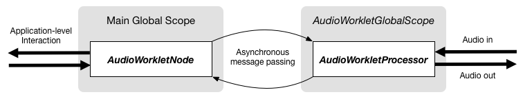
AudioWorkletNode と AudioWorkletProcessor各 BaseAudioContext は、AudioWorklet を 1 つだけ保持します。
AudioWorklet の worklet グローバルスコープタイプ は AudioWorkletGlobalScope です。
AudioWorklet の worklet ディスティネーションタイプ は "audioworklet" です。
addModule(moduleUrl) メソッドを介してスクリプトをインポートすると、 AudioWorkletGlobalScope 内に AudioWorkletProcessor のクラス定義が登録されます。 インポートされたクラスのコンストラクタと、コンストラクタから作成されたアクティブなインスタンスの 2 つの内部ストレージ領域があります。
AudioWorklet は 1 つの内部スロットを持っています :
-
ノード名-パラメータ記述子マップ 。 このマップは "ノード名-プロセッサーコンストラクタマップ" からの文字列キーとそれに関連付けられた parameterDescriptors を値とする一意に識別可能なセットを持っています。 この内部ストレージは
registerProcessor()メソッドを呼び出した結果として、レンダリングスレッド で生成されます。 この生成は、コンテキストのaudioWorklet上のaddModule()によって返される promise をリゾルブする前に完了することが保証されています。
// bypass-processor.js script file, runs on AudioWorkletGlobalScope class BypassProcessorextends AudioWorkletProcessor{ process( inputs, outputs) { // Single input, single channel. const input= inputs[ 0 ]; const output= outputs[ 0 ]; output[ 0 ]. set( input[ 0 ]); // Process only while there are active inputs. return false ; } }; registerProcessor( 'bypass-processor' , BypassProcessor);
// The main global scope const context= new AudioContext(); context. audioWorklet. addModule( 'bypass-processor.js' ). then(() => { const bypassNode= new AudioWorkletNode( context, 'bypass-processor' ); });
メイングローバルスコープ内で AudioWorkletNode のインスタンス化を行うと、それに対応する AudioWorkletProcessor も AudioWorkletGlobalScope 内に作成されます。 これらの 2 つのオブジェクトは、§2 処理モデル で説明する非同期メッセージ通信を介して通信します。
1.32.3. AudioWorkletGlobalScope インタフェース
この特別な実行コンテキストは、オーディオの レンダリングスレッド で、スクリプトを使用したオーディオデータの直接的な生成、処理、および分析が可能になるように設計されています。 ユーザーが供給するスクリプトコードは、このスコープ内で評価され、1 つまたは複数の AudioWorkletProcessor サブクラスを定義します。 このサブクラスは AudioWorkletProcessor のインスタンス化に使用され、メインスコープ内の AudioWorkletNode と 1 対 1 に関連付けられます。
1 つ以上の AudioWorkletNode を含む各 AudioContext に対し、単一の AudioWorkletGlobalScope が存在します。 インポートされたスクリプトは、[HTML] で定義されているように UA によって実行されます。 [HTML] で定められたデフォルトを上書きして、ユーザーエージェントが任意に AudioWorkletGlobalScope を 終了 してはなりません。
AudioWorkletGlobalScope には、次の内部スロットがあります :
-
ノード名-プロセッサーコンストラクタマップ は プロセッサー名 →
AudioWorkletProcessorConstructorインスタンス、というキーと値のペアを格納するマップです。 最初このマップは空でregisterProcessor()メソッドが呼び出されたときに生成されます。 -
保留中プロセッサー構築データ は、対応する
AudioWorkletProcessorのインスタンス化のためにAudioWorkletNodeコンストラクタによって生成された一時データを格納します。 保留中プロセッサー構築データ には、次の項目が含まれています。-
ノード参照 は最初は空になっています。 この記憶域は
AudioWorkletNodeのコンストラクタから引き渡されるAudioWorkletNodeへの参照を記憶します。 -
引き渡されたポート は最初は空になっています。 この記憶域は、
AudioWorkletNodeコンストラクタから引き渡される、デシリアライズされたMessagePortを記憶します。
-
注 :AudioWorkletGlobalScope には、これらのインスタンスによって共有されるその他のデータやコードも含まれる事があります。 例えば、複数のプロセッサがウェーブテーブルやインパルス応答を定義する ArrayBuffer を共有する事もあります。
注 :AudioWorkletGlobalScope は、単一の BaseAudioContext と、そのコンテキストの単一のオーディオレンダリングスレッドに関連付けられています。 これにより、グローバルスコープ内のコードが並列スレッドで実行されてデータ競合が発生する事を防止します。
callback =AudioWorkletProcessorConstructor AudioWorkletProcessor (object ); [options Global =(Worklet ,AudioWorklet ),Exposed =AudioWorklet ]interface AudioWorkletGlobalScope :WorkletGlobalScope {undefined registerProcessor (DOMString name ,AudioWorkletProcessorConstructor processorCtor );readonly attribute unsigned long long currentFrame ;readonly attribute double currentTime ;readonly attribute float sampleRate ;readonly attribute unsigned long renderQuantumSize ;readonly attribute MessagePort port ; };
1.32.3.1. 属性
currentFrame, unsigned long long 型, readonly-
現在処理中のオーディオブロックのフレーム。
BaseAudioContextの内部スロット[[current frame]]の値と等しくなければなりません。 currentTime, double 型, readonly-
現在処理中のオーディオブロックのコンテキストの時間。 定義により、これは 制御スレッド で直近に観測された
BaseAudioContextのcurrentTime属性の値と等しくなります。 sampleRate, float 型, readonly-
関連付けられた
BaseAudioContextのサンプルレートです。 renderQuantumSize, unsigned long 型, readonly-
関連付けられた
BaseAudioContextの内部スロット [[レンダリング量子サイズ]] の値です。 port, MessagePort 型, readonly-
AudioWorkletのポートに接続されたMessagePortです。注 :この
portの"message"イベントにイベントリスナーを登録する開発者は、リソースを 回収 できるように、MessageChannelのどちらかの端点 (AudioWorklet側またはAudioWorkletGlobalScope側のいずれか) でcloseを呼び出す必要があります。
1.32.3.2. メソッド
registerProcessor(name, processorCtor)-
AudioWorkletProcessorから派生したクラスのコンストラクタを登録します。registerProcessor(name, processorCtor)メソッドが呼び出されたとき、以下の手順が実行されます。 もしいずれかのステップで例外が発生した場合、残りの手順は中止されます。-
もし name が空文字列の場合は
NotSupportedError例外を発生します。 -
もし name が ノード名-プロセッサーコンストラクタマップ のキーとして既に存在する場合、
NotSupportedError例外を発生します。 -
IsConstructor(argument=processorCtor)の結果がfalseの場合、TypeError例外を発生します。 -
prototypeをGet(O=processorCtor, P="prototype")の結果とします。 -
もし
Type(argument=prototype)の結果がObjectでない場合は、TypeError例外を発生します。 -
parameterDescriptorsValue を
Get(O=processorCtor, P="parameterDescriptors")の結果とします。 -
もし parameterDescriptorsValue が
undefinedでない場合は次の手順を実行します :-
parameterDescriptorSequence を parameterDescriptorsValue から type
sequence<AudioParamDescriptor>型の IDL 値への 変換 の結果とします。 -
paramNames を空の配列とします。
-
parameterDescriptorSequence の各々の descriptor に対して :
-
paramName を descriptor 内のメンバー
nameの値とします。 paramNames にすでに paramName の値が含まれている場合は、NotSupportedErrorを発生します。 -
paramNames 配列に paramName を追加します。
-
defaultValue を descriptor 内のメンバー
defaultValueの値とします。 -
minValue を descriptor 内のメンバー
minValueの値にします。 -
maxValue を descriptor 内のメンバー
maxValueの値にします。 -
もし式 minValue <= defaultValue <= maxValue が false の場合、
InvalidStateErrorを発声します。
-
-
-
キーと値のペア、 name → processorCtor を、関連付けられた
AudioWorkletGlobalScopeの ノード名-プロセッサーコンストラクタマップ に追加します。 -
キーと値のペア name → parameterDescriptorSequence を関連する
BaseAudioContextの ノード名-パラメータ記述子マップ に追加するため、メディア要素タスクをキューに入れます。
注 :クラスのコンストラクタは一度だけ参照されるため、登録後に動的に変更される事はありません。
AudioWorkletGlobalScope.registerProcessor(name, processorCtor) メソッドの引数 パラメータ 型 Null可 省略可 説明 nameDOMString✘ ✘ 登録されるクラスのコンストラクタを表す文字列キーです。 このキーは、 AudioWorkletNodeの生成時にAudioWorkletProcessorのコンストラクタを参照するために使用されます。processorCtorAudioWorkletProcessorConstructor✘ ✘ AudioWorkletProcessorから派生したクラスのコンストラクタです。戻り値 :undefined -
1.32.3.3. AudioWorkletProcessor の実体化
AudioWorkletNode 構築の最後に プロセッサー構築データ という名前の 構造体 がスレッド間転送用に準備されます。 この 構造体 には、次の 項目 が含まれています :
-
name 、これは ノード名-プロセッサーコンストラクタマップ で検索される
DOMStringです。 -
node 、これは作成された
AudioWorkletNodeへの参照です。 -
options 、これは
AudioWorkletNodeのコンストラクタに指定されたAudioWorkletNodeOptionsをシリアル化したものです。 -
port 、これは
AudioWorkletNodeのportとペアになったMessagePortをシリアル化したものです。
AudioWorkletGlobalScope に転送されたデータが到着すると、レンダリングスレッド は以下のアルゴリズムを呼び出します :
-
constructionData を、制御スレッド から転送された プロセッサー構築データ とします。
-
processorName 、 nodeReference 、および serializedPort をそれぞれ var>constructionData の name 、 node 、 および port とします。
-
serializedOptions を constructionData の options とします。
-
deserializedPort を StructuredDeserialize(serializedPort, 現在の realm) の結果とします。
-
deserializedOptions を StructuredDeserialize(var>serializedOptions, 現在の realm)の結果とします。
-
processorCtor を
AudioWorkletGlobalScopeの ノード名-プロセッサーコンストラクタマップ で processorName を調べた結果とします。 -
nodeReference と deserializedPort を、それぞれこの
AudioWorkletGlobalScopeの 保留中のプロセッサー構築データ の ノード参照 と 引き渡されたポート に保存します。 -
deserializedOptions の引数を使用して、processorCtor から コールバック関数を作成 します。 コールバックで何らかの例外が発生した場合は、 nodeReference に
processorerrorという名前のErrorEventを 発行 するタスクを 制御スレッド の キューに入れます。 -
保留中のプロセッサ構築データ スロットを空にします。
1.32.4. AudioWorkletNode インタフェース
このインタフェースは、制御スレッド 上に存在するユーザー定義の AudioNode を表します。 ユーザーは、BaseAudioContext から AudioWorkletNode を作成することができ、そのノードは他の組み込み AudioNode と接続してオーディオグラフを形成することができます。
| プロパティ | 値 | 説明 |
|---|---|---|
numberOfInputs
| 1 | |
numberOfOutputs
| 1 | |
channelCount
| 2 | |
channelCountMode
| "max"
| |
channelInterpretation
| "speakers"
| |
| tail-time | See notes | テールタイム はノード自身が管理します。 |
すべての AudioWorkletProcessor には、初期値が true の アクティブソース フラグが関連付けられています。 このフラグは、入力へのコネクションが 1 つもない場合でも、ノードをメモリーに保持してオーディオ処理を実行させます。
AudioWorkletNode から送られたすべてのタスクは、関連する BaseAudioContext のキューに入れられます。
[Exposed =Window ]interface {AudioParamMap readonly maplike <DOMString ,AudioParam >; };
このインタフェースは readonly maplike によって "entries"、"forEach"、"get"、"has"、"keys"、"values"、@@iterator、"size" ゲッター のメソッドを持ちます。
[Exposed =Window ,SecureContext ]interface AudioWorkletNode :AudioNode {constructor (BaseAudioContext ,context DOMString ,name optional AudioWorkletNodeOptions = {});options readonly attribute AudioParamMap parameters ;readonly attribute MessagePort port ;attribute EventHandler onprocessorerror ; };
1.32.4.1. コンストラクタ
AudioWorkletNode(context, name, options)-
AudioWorkletNode.constructor() メソッドの引数 パラメータ 型 Null可 省略可 説明 contextBaseAudioContext✘ ✘ 新しく作成される AudioWorkletNodeが 関連付け られるBaseAudioContextです。nameDOMString✘ ✘ BaseAudioContextの ノード名-パラメータ記述子マップ のキーとなる文字列です。optionsAudioWorkletNodeOptions✘ ✔ この AudioWorkletNodeの初期パラメータ値オプションです。コンストラクタが呼び出されると、ユーザーエージェントは制御スレッドで次の手順を実行する必要があります ( MUST ) :
AudioWorkletNodeコンストラクタが context 、 nodeName 、 options を指定して呼び出された場合 :-
nodeName が
BaseAudioContextの ノード名-パラメータ記述子マップ にキーとして存在しない場合はInvalidStateError例外を発生してこれらの手順を中止します。 -
node を this の値とします。
-
context と options を引数として AudioNode node を 初期化 します。
-
options を使用して node の 入力、出力、出力チャンネルを構成 します。 何からの例外が発生した場合は残りの手順を中止します。
-
messageChannel を新しい
MessageChannelとします。 -
nodePort を messageChannel の
port1属性とします。 -
processorPortOnThisSide を messageChannel の
port2属性とします。 -
serializedProcessorPort を StructuredSerializeWithTransfer(processorPortOnThisSide, «processorPortOnThisSide») の結果とします。
-
options ディレクトリーを optionsObject に 変換 します。
-
serializedOptions を StructuredSerialize(optionsObject) の結果とします。
-
node の
portを nodePort に設定します。 -
parameterDescriptors を nodeName from ノード名-パラメータ記述子マップ から nodeName を取得した結果とします :
-
audioParamMap を新しい
AudioParamMapオブジェクトとします。 -
parameterDescriptors の各 descriptor に対して :
-
paramName を descriptor 内の
nameメンバーの値とします。 -
audioParam を新しい
AudioParamのインスタンスとして、automationRate、defaultValue、minValue、maxValueを descriptor の対応するメンバーの値と同じにします。 -
キー-値ペア、 paramName → audioParam を audioParamMap のエントリーに追加します。
-
-
もし
parameterDataが options 内に存在している場合、次の手順を実行します :-
parameterData を
parameterDataの値とします。 -
parameterData のそれぞれの paramName → paramValue に対して :
-
もし audioParamMap に paramName をキーとするマップエントリーがあれば、 audioParamInMap をそのエントリーとします。
-
audioParamInMap の
valueプロパティを paramValue に設定します。
-
-
-
node の
parametersを audioParamMap に設定します。
-
-
nodeName 、 node 、 serializedOptions 、および serializedProcessorPort で構成される プロセッサー構築データ を使用して、対応する
AudioWorkletProcessorのコンストラクタを 呼び出す 制御メッセージをキューに入れます。
-
1.32.4.2. 属性
onprocessorerror, EventHandler 型-
プロセッサーの
コンストラクタ、プロセスのメソッド、またはユーザー定義のクラスメソッドが、処理できない例外が発生した時プロセッサーはErrorEventを使用して 関連付け られたAudioWorkletNodeでprocessorerrorという名前の イベントを発生 させる メディア要素タスクをキューに入れます。ErrorEventは、制御スレッド上でそのmessage、filename、lineno、colno属性を使用して適切に作成および初期化されます。処理できない例外が発生した時、プロセッサーはそのライフタイムを通じて無音を出力する事に注意してください。
parameters, AudioParamMap 型, readonly-
parameters属性は、名前に関連付けられたAudioParamオブジェクトのコレクションです。 このマップ風のオブジェクトは、インスタンス化時にAudioWorkletProcessorクラス の コンストラクタのAudioParamDescriptorのリストから設定されます。 port, MessagePort 型, readonly-
すべての
AudioWorkletNodeは、MessagePort型の関連付けられたportを持っています。 これは対応するAudioWorkletProcessorオブジェクト上のポートに接続され、AudioWorkletNodeとAudioWorkletProcessorの間の双方向通信を可能にします。注 :この
portの"message"イベントに対してイベントリスナーを登録した開発者は、リソースが 回収 されるようにMessageChannelのどちらかの端点 (AudioWorkletProcessorまたはAudioWorkletNode側 ) でcloseを呼び出す必要があります。
1.32.4.3. AudioWorkletNodeOptions
AudioWorkletNodeOptions ディクショナリは、AudioWorkletNode のインスタンスの属性の初期化に使用されます。
dictionary AudioWorkletNodeOptions :AudioNodeOptions {unsigned long numberOfInputs = 1;unsigned long numberOfOutputs = 1;sequence <unsigned long >outputChannelCount ;record <DOMString ,double >parameterData ;object processorOptions ; };
1.32.4.3.1. ディクショナリ AudioWorkletNodeOptions メンバー
numberOfInputs, unsigned long 型, デフォルト値は1-
これは
AudioNodeのnumberOfInputs属性の値を初期化するために使用されます。 numberOfOutputs, unsigned long 型, デフォルト値は1-
これは
AudioNodeのnumberOfOutputs属性の値を初期化するために使用されます。 outputChannelCount,sequence<unsigned long>型-
この配列は、各出力のチャンネル数を構成するために使用されます。
parameterData, record<DOMString, double> 型-
これは
AudioWorkletNodeで一致する名前を持つAudioParamの初期valueを設定するために使用されるユーザー定義のキーと値のペアのリストです。 processorOptions, object 型-
これは、
AudioWorkletNodeに関連付けられているAudioWorkletProcessorインスタンスのカスタムプロパティを初期化するために使用するユーザー定義データを保持します。
1.32.4.3.2. AudioWorkletNodeOptions のチャンネル構成
次のアルゴリズムは、AudioWorkletNodeOptions を使用してさまざまなチャンネル構成を設定する方法を示しています。
-
node を このアルゴリズムを適用する
AudioWorkletNodeのインスタンスとします。 -
numberOfInputsとnumberOfOutputsの両方が 0 の場合、NotSupportedErrorを発生して残りの手順を中止します。 -
もし
outputChannelCountが 存在 しているなら、-
もし
outputChannelCountの値のどれかが 0 または実装の最大チャンネル数よりも大きい場合はNotSupportedErrorを発生して残りの手順を中止します。 -
もし
outputChannelCountの長さがnumberOfOutputsと等しくない場合はIndexSizeErrorを発生して残りの手順を中止します。 -
numberOfInputsとnumberOfOutputsの両方が 1 の場合、node の出力のチャンネル数をoutputChannelCountの値に設定します。 -
それ以外の場合は、node の k 番目の出力のチャンネル数を
outputChannelCountシーケンスの k 番目の要素に設定して返します。
-
-
もし
outputChannelCountが 存在 していない場合、-
もし
numberOfInputsとnumberOfOutputsの両方が 1 の場合、 node の出力の初期チャンネル数を 1 に設定して返します。注 :この場合、出力されるチャンネル数は実行時の入力と
channelCountModeに基く computedNumberOfChannels に動的に変更されます。 -
それ以外の場合は、node の各出力のチャンネル数を 1 に設定して返します。
-
1.32.5. AudioWorkletProcessor インタフェース
このインタフェースは、オーディオの レンダリングスレッド で実行されるオーディオ処理コードを表します。 それは AudioWorkletGlobalScope 内に存在し、クラスの定義は実際のオーディオ処理を表します。 AudioWorkletProcessor の構築は、AudioWorkletNode の構築の結果としてのみ行われる事に注意してください。
[Exposed =AudioWorklet ]interface AudioWorkletProcessor {constructor ();readonly attribute MessagePort port ; };callback AudioWorkletProcessCallback =boolean (FrozenArray <FrozenArray <Float32Array >>,inputs FrozenArray <FrozenArray <Float32Array >>,outputs object );parameters
AudioWorkletProcessor は 2 つの内部スロットを持っています :
[[node reference]]-
関連付けられた
AudioWorkletNodeへの参照です。 [[callable process]]-
process() が呼び出し可能な有効な関数かどうかを表すブーリアンフラグです。
1.32.5.1. コンストラクタ
AudioWorkletProcessor()-
AudioWorkletProcessorのコンストラクタが呼び出されると、次の手順が レンダリングスレッド で実行されます。-
nodeReference を、現在の
AudioWorkletGlobalScopeの 保留中のプロセッサー構築データ の ノード参照 を検索した結果とします。 もしスロットが空の場合はTypeError例外を発生します -
processor を this の値とします。
-
processor の
[[node reference]]を nodeReference に設定します。 -
processor の
[[callable process]]をtrueに設定します。 -
deserializedPort を 保留中のプロセッサー構築データ から 引き渡されたポート を検索した結果とします。
-
processor の
portを deserializedPort に設定します。 -
保留中のプロセッサー構築データ スロットを空にします。
-
1.32.5.2. 属性
port, MessagePort 型, readonly-
すべての
AudioWorkletProcessorは、MessagePort型の関連付けられたportを持っています。 これは対応するAudioWorkletNodeオブジェクト上のポートに接続され、AudioWorkletNodeとAudioWorkletProcessorの間の双方向通信を可能にします。注 :この
portの"message"イベントにイベントリスナーを登録した開発者は、リソースが 回収 されるようにMessageChannelのどちらかの末端 (AudioWorkletProcessorまたはAudioWorkletNode側 ) でcloseを呼び出す必要があります。
1.32.5.3. コールバック AudioWorkletProcessCallback
ユーザーは AudioWorkletProcessor を拡張することによって、独自のオーディオプロセッサを定義する事ができます。 このサブクラスは、オーディオ処理アルゴリズムを実装した process() という名前の AudioWorkletProcessCallback を定義する必要があり ( MUST ) 、また AudioParamDescriptor のイテラブルである parameterDescriptors という名前の静的プロパティを持つことができます
process() コールバック関数は、グラフをレンダリングする際 指定通りに処理されます。
AudioWorkletProcessor が関連付けられた AudioWorkletNode のライフタイムを制御します。
このライフタイムのポリシーは、次のようなケースを含み、組み込みノードに見られるさまざまなアプローチをサポートします :
-
入力された信号を変換するノードで、接続された入力やスクリプト参照が存在する間のみアクティブになります。 このようなノードは、接続された入力の有無で
AudioWorkletNodeが アクティブに処理 が起こるかどうかを決定できるように、process() からfalseを返さなくてはなりません ( SHOULD ) 。 -
入力された信号を変換するが、入力が切断された後も テールタイム の間だけアクティブのままになるノード。 この場合、process() は、
inputsのチャンネルがゼロであることが判明してからもしばらくの間、trueを返さなくてはなりません ( SHOULD )。 このテールタイム間隔の開始と終了を測るために、現在の時間をグローバルスコープのcurrentTimeから取得するか、またはプロセッサの内部状態に応じて動的に時間間隔を計算することができます。 -
出力のソースとして機能する、一般的なライフタイムを持っているノードの場合。 そのようなノードでは process() から出力を生成しなくなるまで
trueを返さなくてはなりません ( SHOULD )。
以上の定義は、process() の実装から戻り値が提供されない場合、効果は false を返すのと同じであることを意味します ( 有効な戻り値が 偽となる undefined であるため ) 。 これは、アクティブな入力がある場合にのみアクティブとなる AudioWorkletProcessor にとって妥当な動作です。
次の例は AudioWorkletProcessor で AudioParam を定義して使用する方法を示しています。
class MyProcessorextends AudioWorkletProcessor{ static get parameterDescriptors() { return [{ name: 'myParam' , defaultValue: 0.5 , minValue: 0 , maxValue: 1 , automationRate: "k-rate" }]; } process( inputs, outputs, parameters) { // Get the first input and output. const input= inputs[ 0 ]; const output= outputs[ 0 ]; const myParam= parameters. myParam; // A simple amplifier for single input and output. Note that the // automationRate is "k-rate", so it will have a single value at index [0] // for each render quantum. for ( let channel= 0 ; channel< output. length; ++ channel) { for ( let i= 0 ; i< output[ channel]. length; ++ i) { output[ channel][ i] = input[ channel][ i] * myParam[ 0 ]; } } } }
1.32.5.3.1. コールバック AudioWorkletProcessCallback パラメータ
以下は AudioWorkletProcessCallback 関数のパラメータについて説明します。
一般的に、inputs と outputs の配列は呼び出し間で再利用されるため、メモリの割り当ては行われません。 ただし、たとえば入力または出力のチャネル数が変更されたためにトポロジが変更された場合、新しい配列が再割り当てされます。 また、inputs または outputs の配列の一部分が転送された場合も新しい配列が再割り当てされます。
inputs,FrozenArray<FrozenArray<Float32Array>> 型-
ユーザーエージェントによって供給される入力接続からの入力オーディオバッファです。
inputs[n][m]は、\(n\) 番目の入力の \(m\) 番目のチャンネルのオーディオサンプルのFloat32Arrayです。 入力の数は構築時に固定されますが、チャンネルの数は computedNumberOfChannels に基づいて動的に変更できます。現在のレンダリング量子の間、
AudioWorkletNodeの \(n\) 番目の入力に接続されている アクティブに処理 しているAudioNodeが存在しない場合、inputs[n]の内容は空の配列であり、0 チャンネルの入力が利用可能であることを示します。 これは、inputs[n]の要素数がゼロになる唯一の状況です。 outputs,FrozenArray<FrozenArray<Float32Array>> 型-
ユーザーエージェントが消費する出力オーディオバッファです。
outputs[n][m]は、\(n\) 番目の出力の \(m\) 番目のチャンネルのオーディオサンプルを含むFloat32Arrayオブジェクトです。 各Float32Arrayは 0 で埋められています。 ノードが単一の出力を持つ場合にのみ、出力のチャンネル数は computedNumberOfChannels と一致します。 parameters,object 型-
name → parameterValues の 順序付きマップ です。
parameters["name"]は parameterValues を返し、これは、nameAudioParamのオートメーション値を持つFrozenArray<Float32Array> です。それぞれの配列は レンダリング量子 内のすべてのフレームのパラメータの computedValue が含まれます。 ただし、このレンダリング量子中にオートメーションがスケジュールされていない場合、配列の長さは 1 で、配列エレメントは レンダリング量子 中 の
AudioParamの定数値である可能性があります (MAY)。このオブジェクトは、次の手順に従って凍結状態になります
-
parameter を名前とパラメータ値の 順序付きマップ とします。
-
SetIntegrityLevel(parameter, frozen)
アルゴリズム中に計算されたこの凍結された 順序付きマップ は、
parameters引数に渡されます。注 :これは、オブジェクトを変更できない事を意味し、配列の長さが変更されない限り同じオブジェクトを連続した呼び出しに使用できることを意味します。
-
1.32.5.4. AudioParamDescriptor
AudioParamDescriptor ディクショナリは、AudioWorkletNode で使用される AudioParam オブジェクトのプロパティを指定するために使用されます。
dictionary AudioParamDescriptor {required DOMString name ;float defaultValue = 0;float minValue = -3.4028235e38;float maxValue = 3.4028235e38;AutomationRate automationRate = "a-rate"; };
1.32.5.4.1. ディクショナリ AudioParamDescriptor メンバー
これらのメンバーの値には制約があります。 制約については、AudioParamDescriptor を処理するためのアルゴリズム を参照してください。
automationRate, AutomationRate 型, デフォルト値は"a-rate"-
デフォルトのオートメーション速度を表します。
defaultValue, float 型, デフォルト値は0-
パラメータのデフォルト値を表します。
maxValue, float 型, デフォルト値は3.4028235e38-
パラメータの最大値を表します。
minValue, float 型, デフォルト値は-3.4028235e38-
パラメータの最小値を表します。
name, DOMString 型-
パラメータの名前を表します。
1.32.6. AudioWorklet イベントのシーケンス
次の図は、AudioWorklet に関連して発生する理想的なイベントのシーケンスを示しています :
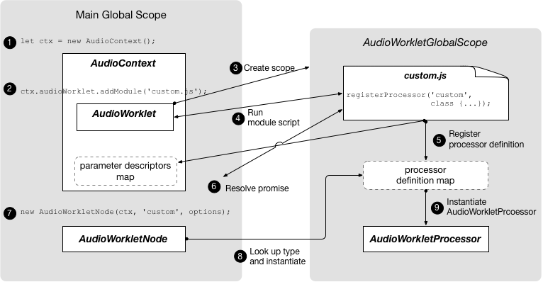
AudioWorklet シーケンスこの図に示す手順は AudioContext および関連する AudioWorkletGlobalScope の作成、それに続く AudioWorkletNode およびその関連する AudioWorkletProcessor の作成を含んだ 1 つの起こり得るイベントシーケンスです。
-
AudioContextが作成されます。 -
メインスコープでは
context.audioWorkletにスクリプトモジュールの追加が要求されます。 -
AudioWorkletGlobalScopeがまだ存在しないため、新しくコンテキストに関連付けられて作成されます。 これはAudioWorkletProcessorクラスの定義が評価されるグローバルスコープになります。 ( その後の呼び出しでは、このあらかじめ作成されたスコープが使用されます )。 -
インポートされたスクリプトは、新しく作成されたグローバルスコープで実行されます。
-
インポートされたスクリプトの実行の一環として、
AudioWorkletProcessorは、AudioWorkletGlobalScope内のキー ( 上図の"custom") の下に登録されます。 これにより、グローバルスコープとAudioContextの両方にマップが生成されます。 -
addModule()呼び出しの promise がリゾルブされます。 -
メインスコープでは、ユーザーが指定したキーとオプションのディクショナリを使って
AudioWorkletNodeが作成されます。 -
ノードの作成の一環として、このキーはインスタンス化のために正しい
AudioWorkletProcessorサブクラスを探すために使用されます。 -
AudioWorkletProcessorサブクラスのインスタンスは、同じオプションディクショナリの構造化された複製を持ってインスタンス化されます。 このインスタンスは、既に作成されたAudioWorkletNodeとペアになっています。
1.32.7. AudioWorklet の例
1.32.7.1. ビットクラッシャーノード
ビットクラッシャーは、サンプル値を量子化する ( 低いビット深度をシミュレートする ) こと、および時間分解能を量子化すること ( より低いサンプルレートをシミュレートする ) の両方によってオーディオストリームの品質を低下させるメカニズムです。 この例では、AudioWorkletProcessor 内で AudioParam ( この例では、a-rate として扱います ) を使用する方法を示します。
const context= new AudioContext(); context. audioWorklet. addModule( 'bitcrusher.js' ). then(() => { const osc= new OscillatorNode( context); const amp= new GainNode( context); // Create a worklet node. 'BitCrusher' identifies the // AudioWorkletProcessor previously registered when // bitcrusher.js was imported. The options automatically // initialize the correspondingly named AudioParams. const bitcrusher= new AudioWorkletNode( context, 'bitcrusher' , { parameterData: { bitDepth: 8 } }); osc. connect( bitcrusher). connect( amp). connect( context. destination); osc. start(); });
class Bitcrusherextends AudioWorkletProcessor{ static get parameterDescriptors() { return [{ name: 'bitDepth' , defaultValue: 12 , minValue: 1 , maxValue: 16 }, { name: 'frequencyReduction' , defaultValue: 0.5 , minValue: 0 , maxValue: 1 }]; } constructor () { super (); this . _phase= 0 ; this . _lastSampleValue= 0 ; } process( inputs, outputs, parameters) { const input= inputs[ 0 ]; const output= outputs[ 0 ]; const bitDepth= parameters. bitDepth; const frequencyReduction= parameters. frequencyReduction; if ( bitDepth. length> 1 ) { for ( let channel= 0 ; channel< output. length; ++ channel) { for ( let i= 0 ; i< output[ channel]. length; ++ i) { let step= Math. pow( 0.5 , bitDepth[ i]); // Use modulo for indexing to handle the case where // the length of the frequencyReduction array is 1. this . _phase+= frequencyReduction[ i% frequencyReduction. length]; if ( this . _phase>= 1.0 ) { this . _phase-= 1.0 ; this . _lastSampleValue= step* Math. floor( input[ channel][ i] / step+ 0.5 ); } output[ channel][ i] = this . _lastSampleValue; } } } else { // Because we know bitDepth is constant for this call, // we can lift the computation of step outside the loop, // saving many operations. const step= Math. pow( 0.5 , bitDepth[ 0 ]); for ( let channel= 0 ; channel< output. length; ++ channel) { for ( let i= 0 ; i< output[ channel]. length; ++ i) { this . _phase+= frequencyReduction[ i% frequencyReduction. length]; if ( this . _phase>= 1.0 ) { this . _phase-= 1.0 ; this . _lastSampleValue= step* Math. floor( input[ channel][ i] / step+ 0.5 ); } output[ channel][ i] = this . _lastSampleValue; } } } // No need to return a value; this node's lifetime is dependent only on its // input connections. } }; registerProcessor( 'bitcrusher' , Bitcrusher);
注 :AudioWorkletProcessor クラスの定義では、作成者が提供するコンストラクタが明示的に this 以外のものを返す、あるいは super() を正しく呼び出さない場合 InvalidStateError 例外を発生します。
1.32.7.2. VU メーターノード
この簡単なサウンドレベルメーターの例は、ネイティブ AudioNode のように動作し、コンストラクタオプションを受け付け、AudioWorkletNode と AudioWorkletProcessor の間のスレッド間通信 ( 非同期 ) をカプセル化する AudioWorkletNode サブクラスを作成する方法を示しています。 このノードは出力を使用しません。
/* vumeter-node.js: Main global scope */ export default class VUMeterNodeextends AudioWorkletNode{ constructor ( context, updateIntervalInMS) { super ( context, 'vumeter' , { numberOfInputs: 1 , numberOfOutputs: 0 , channelCount: 1 , processorOptions: { updateIntervalInMS: updateIntervalInMS|| 16.67 } }); // States in AudioWorkletNode this . _updateIntervalInMS= updateIntervalInMS; this . _volume= 0 ; // Handles updated values from AudioWorkletProcessor this . port. onmessage= event=> { if ( event. data. volume) this . _volume= event. data. volume; } this . port. start(); } get updateInterval() { return this . _updateIntervalInMS; } set updateInterval( updateIntervalInMS) { this . _updateIntervalInMS= updateIntervalInMS; this . port. postMessage({ updateIntervalInMS: updateIntervalInMS}); } draw() { // Draws the VU meter based on the volume value // every |this._updateIntervalInMS| milliseconds. } };
/* vumeter-processor.js: AudioWorkletGlobalScope */ const SMOOTHING_FACTOR= 0.9 ; const MINIMUM_VALUE= 0.00001 ; registerProcessor( 'vumeter' , class extends AudioWorkletProcessor{ constructor ( options) { super (); this . _volume= 0 ; this . _updateIntervalInMS= options. processorOptions. updateIntervalInMS; this . _nextUpdateFrame= this . _updateIntervalInMS; this . port. onmessage= event=> { if ( event. data. updateIntervalInMS) this . _updateIntervalInMS= event. data. updateIntervalInMS; } } get intervalInFrames() { return this . _updateIntervalInMS/ 1000 * sampleRate; } process( inputs, outputs, parameters) { const input= inputs[ 0 ]; // Note that the input will be down-mixed to mono; however, if no inputs are // connected then zero channels will be passed in. if ( input. length> 0 ) { const samples= input[ 0 ]; let sum= 0 ; let rms= 0 ; // Calculated the squared-sum. for ( let i= 0 ; i< samples. length; ++ i) sum+= samples[ i] * samples[ i]; // Calculate the RMS level and update the volume. rms= Math. sqrt( sum/ samples. length); this . _volume= Math. max( rms, this . _volume* SMOOTHING_FACTOR); // Update and sync the volume property with the main thread. this . _nextUpdateFrame-= samples. length; if ( this . _nextUpdateFrame< 0 ) { this . _nextUpdateFrame+= this . intervalInFrames; this . port. postMessage({ volume: this . _volume}); } } // Keep on processing if the volume is above a threshold, so that // disconnecting inputs does not immediately cause the meter to stop // computing its smoothed value. return this . _volume>= MINIMUM_VALUE; } });
/* index.js: Main global scope, entry point */ import VUMeterNodefrom './vumeter-node.js' ; const context= new AudioContext(); context. audioWorklet. addModule( 'vumeter-processor.js' ). then(() => { const oscillator= new OscillatorNode( context); const vuMeterNode= new VUMeterNode( context, 25 ); oscillator. connect( vuMeterNode); oscillator. start(); function drawMeter() { vuMeterNode. draw(); requestAnimationFrame( drawMeter); } drawMeter(); });
2. 処理モデル
2.1. 背景
このセクションは非基準情報です。
低レイテンシを必要とするリアルタイムオーディオシステムでは、しばしば コールバック関数 を使用して実装されることがあります。 コールバック関数は、再生が中断されないように、オーディオを処理する必要がある場合にオペレーティングシステムがプログラムを呼び出します。 このようなコールバックは、優先度の高いスレッド ( 多くの場合、システム上で最優先 ) で呼び出されます。 つまり、オーディオを扱うプログラムは、このコールバックからのみ実行され、レンダリングスレッドとコールバックの間のバッファリングによって必然的にレイテンシが増加され、そうしないとシステムのグリッチに対する耐性が低下します。
この理由で、Web プラットフォーム上の伝統的な非同期処理の実行方法、つまりイベントループではスレッドが 連続的に実行 されていないため、ここでは有効ではありません。 さらに、従来の実行コンテキスト ( Window や Worker ) では、多くの不必要で潜在的なブロッキング操作が利用できますが、これは許容できるレベルのパフォーマンスを実現するには望ましい事ではありません。
さらに、Worker モデルではスクリプトの実行コンテキストがそれぞれ必要な専用スレッドを作成しますが、すべての AudioNode は通常同じ実行コンテキストを共有します。
注 :このセクションでは、どのように実装しなくてはならないかではなく、最終的な結果がどのように見えるかを指定します。 特に、メモリー処理の順序が入れ変わってしまわない限り、実装はメッセージキューを使用する代わりに、スレッド間の共有メモリーを使用してかまいません。
2.2. 制御スレッドとレンダリングスレッド
Web Audio APIは、制御スレッド と レンダリングスレッド を使用して実装しなければなりません ( MUST )。
制御スレッド は、AudioContext がインスタンス化されるスレッドであり、開発者はオーディオグラフを操作します。 つまり、 BaseAudioContext の操作が呼び出される場所です。 レンダリングスレッド は、制御スレッド からの呼び出しに応じて実際のオーディオ出力が処理されるスレッドです。 これは、AudioContext のオーディオを処理する場合はリアルタイムのコールバックベースのオーディオスレッドであり、OfflineAudioContext を使用してレンダリングおよびオーディオグラフ処理をオフラインで行う場合は通常のスレッドになります。
制御スレッド は、[HTML] で説明されているような伝統的なイベントループを使用します。
レンダリングスレッド は、オーディオグラフのレンダリング セクションで説明されている特殊なレンダリングループを使用します。
制御スレッド から レンダリングスレッド への通信は、制御メッセージ の受け渡しを使用して行われます。 逆方向の通信は、通常のイベントループタスクを使用して行われます。
各 AudioContext には、レンダリングスレッド で実行中の 制御メッセージ のリストである単一の 制御メッセージキュー があります。
制御メッセージをキューに入れる 事は、 BaseAudioContext の 制御メッセージキュー の最後にメッセージを追加することを意味します。
注 :たとえば、AudioBufferSourceNode source で start() の呼び出しに成功すると、関連付けられた BaseAudioContext の 制御メッセージキュー に 制御メッセージ が追加されます。
制御メッセージキュー 内の 制御メッセージ は、挿入した時間順に並んでいます。 したがって、最も古いメッセージ は、制御メッセージキュー の先頭にあるメッセージです。
-
QC を新しい空の 制御メッセージキュー とします。
-
QA のすべての 制御メッセージ を QC に移動します。
-
QB のすべての 制御メッセージ を QA に移動します。
-
QC のすべての 制御メッセージ を QB に移動します。
2.3. 非同期処理
AudioNode のメソッドを呼び出すことは事実上非同期であり、同期部分と非同期部分の 2 つのフェーズで行わなければなりません ( MUST )。 各メソッドについて、実行の一部は 制御スレッド で発生します ( たとえば、パラメータが無効な場合は例外を発生します )。 また一部は レンダリングスレッド で ( たとえば AudioParam の値を変更するなど ) 発生します。
AudioNode と BaseAudioContext の各処理の説明では、同期処理のセクションには ⌛ マークが付いています。 他のすべての処理は、[HTML] で説明されているように、 並列 に実行されます。
同期セクションは 制御スレッド 上で、直ちに実行されます。 もし失敗した場合は、メソッドの実行が中止され、多くの場合は例外を発生します。 成功した場合は、レンダリングスレッド 上で実行される処理を指示する 制御メッセージ が、この レンダリングスレッド の 制御メッセージキュー に入れられます。
同期および非同期セクションの他のイベントに対する順序は同じでなくてなりません ( MUST ) : つまり 2 つの処理 A と B がそれぞれ同期と非同期のセクション ASync と AAsync 、 BSync と BAsync を持っている場合、A が B より先に発生したのであれば、ASync がBSync の前に発生し、AAsync は BAsync の前に発生します。 言い換えれば、同期セクションと非同期セクションの入れ替えはできません。
2.4. オーディオグラフのレンダリング
オーディオグラフのレンダリングはサンプルフレームのブロック単位で行われ、各ブロックのサイズは BaseAudioContext のライフタイム中一定のままです。 このブロックは レンダリング量子 と呼ばれ、ブロック内のサンプルフレームの数は レンダリング量子サイズ と呼ばれます。 デフォルト値は 128 ですが、renderSizeHint によって設定する事ができます。
あるスレッドで アトミック に発生する処理は、別のスレッドで他の アトミック な処理が実行されていない場合にのみ実行できます。
制御メッセージキュー Q を持った BaseAudioContext G からのオーディオブロックをレンダリングするためのアルゴリズムは、複数の手順から構成されます。 これは グラフをレンダリングするアルゴリズム において、後でさらに詳細に説明します。
AudioContext レンダリングスレッド は、一定の間隔で定期的に実行される システムレベルのオーディオコールバック によって駆動されます。 各呼び出しには、システムレベルのオーディオコールバックバッファのサイズ があります。 これは、次の システムレベルのオーディオコールバック が発生する前に、時間どおりに計算する必要があるサンプルフレームの可変数です。
システムレベルのオーディオコールバック ごとに、実行時間を システムレベルのオーディオコールバックバッファのサイズ で割り、さらに sampleRate で割ることによって 負荷値 が計算されます。
理想的には 負荷値 は 1.0 未満で、これは、オーディオのレンダリングにかかった時間が、再生にかかった時間よりも短いことを意味します。 この 負荷値 が 1.0 を超えると、オーディオバッファアンダーラン が発生します。 つまり、システムはリアルタイムに対して十分な速度でオーディオをレンダリングできない事を示します。
システムレベルのオーディオコールバック と 負荷値 の概念は OfflineAudioContext には適用されないことに注意してください。
オーディオコールバックも、制御メッセージキュー のタスクとしてキューに入れられます。 UA は、要求されたバッファサイズを埋めてこのようなタスクを実行するために、レンダリング量子を処理する次のアルゴリズムを実行する必要があります。 制御メッセージキュー とともに、各 AudioContext には、制御スレッドからレンダリングスレッドにポストされるタスク用の、関連付けられたタスクキュー と呼ばれる通常の タスクキュー があります。 レンダリング量子の処理後には、AudioWorkletProcessor の process メソッドの実行中にキューに入れられた可能性のあるマイクロタスクを実行するために、追加のマイクロタスクのチェックポイントが実行されます。
AudioWorkletNode から発行されたすべてのタスクは、関連付けられた BaseAudioContext の 関連タスクキュー に入れられます。
-
BaseAudioContextの内部スロット[[current frame]]を 0 に設定します。 また、currentTimeを 0 に設定します。
-
レンダリング結果 を
falseにします。 -
制御メッセージキュー を処理します。
-
Qrendering を空の 制御メッセージキュー とします。 アトミック に Qrendering と 現在の 制御メッセージキュー を 入れ替え ます。
-
Qrendering にメッセージが存在している間、次の手順を実行します :
-
-
BaseAudioContextに 関連付けられたタスクキュー を処理します。-
task queue を
BaseAudioContextに 関連付けられたタスク キュー とします。 -
task count を task queue 内のタスクの数とします
-
task count が 0 でない間、次の手順を実行します :
-
oldest task を task queue 内の最初の実行可能なタスクとし、それを task queue から削除します。
-
レンダリングループの現在実行中のタスクを oldest task に設定します。
-
oldest task の手順を実行します。
-
レンダリングループの現在実行中のタスクを
nullに戻します。 -
task count を 1 減らします。
-
マイクロタスクのチェックポイントを実行します。
-
-
-
レングリング量子を処理します。
-
もし
BaseAudioContextの[[レンダリングスレッドの状態]]がrunningでない場合、false を返します。 -
BaseAudioContextのAudioNodeを処理するための順序付けをします。-
ordered node list を
AudioNodeとAudioListenerの空のリストとします。 これはこの順序付けアルゴリズムが終了した時にAudioNodeとAudioListenerの順序付きリストとなります。 -
nodes を、この
BaseAudioContextによって作成され、まだ生きているすべてのノードのセットとします。 -
AudioListenerを nodes に追加します。 -
cycle breakers を空の
DelayNodeのセットにします。 これは循環の一部となっているすべてのDelayNodeが含まれるようになります。 -
nodes 内のすべての
AudioNodenode に対して :-
もし node が
DelayNodeで循環の一部であれば、それを cycle breakers に追加し、nodes から削除します。
-
-
cycle breakers 内の
DelayNodedelay のそれぞれに対して :-
delayWriter と delayReader をそれぞれ delay のための DelayWriter と DelayReader とします。 nodes に delayWriter と delayReader を追加します。 すべての入力と出力から delay を切断します。
注 :これは循環を切断します :
DelayNodeが循環内にある場合、その 2 つの端は分けて考えることができます。 これは、循環内の遅延は 1 つのレンダリング量子よりも小さくできないためです。
-
-
もし nodes に循環が含まれている場合は、この循環に含まれているるすべての
AudioNodeを ミュート して、nodes から削除します。 -
nodes 内のすべての要素はマークされていないと考えます。 nodes 内にマークされていない要素がある間 :
-
nodes 内の要素 node を選択します。
-
node を 巡回 します。
-
-
ordered node list の順序を反転します。
-
-
このブロックの
AudioListenerのAudioParamの 値を計算 します。 -
ordered node list 内のそれぞれの
AudioNodeに対して :-
この
AudioNodeの各AudioParamについて、次の手順を実行します :-
もしこの
AudioParamにAudioNodeが接続されている場合は、このAudioParamに接続されているすべてのAudioNodeの 読み取り可能 になっているバッファを 合計 し、結果のバッファをモノラルチャンネルにAudioParam, ダウンミックス します。 このバッファを AudioParam 入力 バッファ と呼びます。 -
このブロックでのこの
AudioParamの 値を計算 します。 -
§ 1.6.3 値の計算 に従って、この
AudioParamの[[current value]]スロットを設定するために 制御メッセージをキューに入れます。
-
-
もしこの
AudioNodeの入力に接続されているAudioNodeがある場合は、このAudioNodeに接続されているすべてのAudioNodeの 読み取り可能 になっているバッファを 合計 します。 結果のバッファは 入力バッファ と呼ばれます。 それをこのAudioNodeの入力チャンネル数と一致するように、アップまたはダウンミックス します。 -
この
AudioNodeが ソースノード である場合、オーディオのブロックを計算 し、それを 読み取り可能 にします。 -
もしこの
AudioNodeがAudioWorkletNodeの場合、次のサブステップを実行します :-
processor を
AudioWorkletNodeに関連付けられたAudioWorkletProcessorのインスタンスとします。 -
O を processor に対応する ECMAScript オブジェクトとします。
-
processCallback を初期化されていない変数とします。
-
completion を初期化されていない変数とします。
-
現在の設定オブジェクト で スクリプトを実行する準備 をします。
-
現在の設定オブジェクト で コールバックを実行する準備 をします。
-
getResult を Get(O, "process") の結果とします。
-
もし getResult が abrupt completion ならば、completion を getResult とし、return ラベルにジャンプします。
-
processCallback を getResult.[[Value]] とします。
-
もし ! IsCallable (processCallback) が
falseならば :-
completion を新しい Completion {[[Type]]: throw, [[Value]]: 新しく作られた TypeError object, [[Target]]: empty} とします
-
ラベル return にジャンプします。
-
-
[[callable process]]をtrueにします。 -
次の手順を実行します :
-
args を
inputs、outputs、parametersから成る Web IDL arguments list とします。 -
args を ECMAScript arguments list に 変換 した結果を esArgs とします。
-
callResult を Call(processCallback, O, esArgs) とします。 この操作は esArgs を使用して オーディオのブロックを計算 します。 関数呼び出しが成功すると、
outputsを介して渡されたFloat32Arrayの要素のコピーを持つバッファが 読み出し可能 になります。 この呼び出しの中でリゾルブされたPromiseはAudioWorkletGlobalScopeのマイクロタスクキューに入れられます。 -
もし callResult が abrupt completion であれば completion を callResult とし、ラベル return にジャンプします。
-
processor の active source フラグを ToBoolean(callResult.[[Value]]) に設定します。
-
-
Return: この時点で completion は ECMAScript completion 値に設定されます。
-
現在の設定オブジェクト を使って コールバック実行後のクリーンアップ を行います。
-
現在の設定オブジェクト を使って スクリプト実行後のクリーンアップ を行います。
-
もし completion が abrupt completion であれば :
-
[[callable process]]をfalseに設定します。 -
processor の active source フラグを
falseに設定します。 -
関連する
AudioWorkletNodeでprocessorerrorという名前のErrorEventを 制御スレッド で 発行 するための タスクをキューに入れます。
-
-
-
-
もしこの
AudioNodeが destination ノードである場合、 このAudioNodeの 入力を記録 します。
-
-
アトミック に、以下の処理を実行します :
-
[[current frame]]を レンダリング量子のサイズ だけ進めます。 -
currentTimeを[[current frame]]をsampleRateで除算した値に設定します。
-
-
render result を
trueに設定します。
-
-
マイクロタスクのチェックポイント を実行します
-
render result を返します。
ミュート は AudioNode に対して、このオーディオブロックのレンダリングでは、無音が出力されなければならないことを意味します ( MUST ) 。
AudioNode から バッファを読み取り可能 にすることは、この AudioNode に接続されている他の AudioNode から安全に読み込める状態にすることを意味します。
注 :たとえば、実装では新しいバッファを割り当てるか、現在使用されていない既存のバッファを再利用してより精巧なメカニズムを選択することもできます。
AudioNode の 入力を記録 することは、この AudioNode の入力データを将来の使用のためにコピーすることを意味します。
オーディオブロックを計算 するということは、この AudioNode のアルゴリズムを実行して [[レンダリング量子サイズ]] のサンプルフレームを生成することを意味します。
入力バッファを処理 するということは、AudioNode のアルゴリズムの入力としてこの AudioNode の 入力バッファ と AudioParam の値を使用して実行することを意味します。
2.5. AudioContext でのシステムオーディオリソースからのエラー処理
AudioContext audioContext は、オーディオシステムリソースでエラーが発生した場合、レンダリング スレッド で次の手順を実行します。
-
もし audioContext の
[[レンダリングスレッドの状態]]がrunningの場合 :-
システムリソースの解放 を試みます。
-
audioContext の
[[レンダリングスレッドの状態]]をsuspendedにします。 -
次の手順を実行するために メディア要素タスクをキューに入れます :
-
audioContext の
[[suspended by user]]をfalseに設定します。 -
audioContext の
[[制御スレッドの状態]]をsuspendedに設定します。 -
audioContext で
statechangeという名前の イベントを発行 します。
-
これらの手順を中止します。
-
-
audioContext の
[[レンダリングスレッドの状態]]がsuspendedの場合 :-
次の手順を実行するために、メディア要素タスクをキューに追加します :
-
audioContext で
errorという名前の イベントを発行します。
-
-
注 :システムオーディオリソースのエラーには、例えば AudioContext のアクティブなレンダリング中に外部またはワイヤレス オーディオ デバイスが切断された場合などがあります。
2.6. ドキュメントのアンロード
BaseAudioContext を使用するドキュメントに対して、ドキュメントアンロード時のクリーンアップ手順 に追加のステップが定義されています :
-
このドキュメントのウィンドウが関連付けられたグローバルオブジェクトとなっている
AudioContextおよびOfflineAudioContextのそれぞれについて[[pending promises]]にある promise のすべてをInvalidStateErrorでリジェクトします。 -
すべての
デコーディングスレッドを停止します。 -
AudioContextまたはOfflineAudioContextをclose()するための 制御メッセージをキューに入れます。
3. 動的ライフタイム
3.1. 背景
注 :AudioContext と AudioNode のライフタイム特性の基準情報としては、AudioContext のライフタイム と AudioNode のライフタイム で説明されています。
このセクションは非基準情報です。
静的なルーティング設定の構築が可能である事に加えて、動的に割り当てられて限られたライフタイムを持つ「ボイス」に対して特別なエフェクトのルーティングを行う事が可能である必要があります。 この議論のためにこれらの短期間だけ存在する音を "ノート" と呼びます。 多くのオーディオアプリケーションがこのノートという考え方を組み込んでおり、例として、ドラムマシン、シーケンサー、多くのワンショットの音がゲームプレイに従ってトリガーされる 3D ゲームがあります。
従来のソフトウェアシンセサイザーでは、ノートは使用可能なリソースのプールから動的に割り当てられ、解放されます。 ノートは MIDI ノートオン・メッセージを受信すると割り当てられます。 それはそのノートが発音を終了するか、( もしループ再生でなければ ) サンプルデータの終わりに達したときに解放されます。 それは、エンベロープで値が 0 のサスティンフェーズに達したり、MIDI ノートオフ・メッセージによってエンベロープのリリースフェーズに達したりする事で発生します。 MIDI ノートオフの場合には、そのノートは即時ではなく、リリースエンベロープが終了した時点で解放されます。 どの時間においても、多数のノートが再生中であり、常に新しいノートがルーティンググラフに追加され、古いノートが解放されながらそのノートの組は常に変化しています。
オーディオシステムはそれぞれの "ノート" イベントに対して、ルーティンググラフの一部分の切り落としを自動的に行います。 1 つの "ノート" は 1 つの AudioBufferSourceNode で表され、それは直接、他の処理ノードに接続する事ができます。 ノートが再生を終了したとき、コンテキストは自動的にその AudioBufferSourceNode への参照を解放します。 それによって、そのノードが接続されていた先のすべてのノードへの参照が解放され、という風に続きます。 そのノードは自動的にグラフから切断され、すべての参照が無くなった時点で破棄されます。 グラフ内の、長時間存在して動的なボイスから共有されるノードは明示的に管理する事ができます。 複雑なように聞こえますが、これらはすべて、特別なハンドリングをする必要はなく、自動的に行われます。
3.2. 例
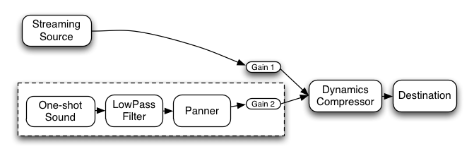
ローパスフィルタ、パンナー、2 番目のゲインノードがワンショットの音から直接接続されています。 そのため再生が終わったとき、コンテキストは自動的にそれら (点線内のすべて) を解放します。 もしワンショットの音とそれに接続されているノードへの参照がもう無ければ、それらはすぐにグラフから外され破棄されます。 ストリーミングのソースはグローバルな参照を持っており、それが明示的に切断されるまで接続されたままで残ります。 JavaScript ではどうなるのかをここに示します :
let context= 0 ; let compressor= 0 ; let gainNode1= 0 ; let streamingAudioSource= 0 ; // Initial setup of the "long-lived" part of the routing graph function setupAudioContext() { context= new AudioContext(); compressor= context. createDynamicsCompressor(); gainNode1= context. createGain(); // Create a streaming audio source. const audioElement= document. getElementById( 'audioTagID' ); streamingAudioSource= context. createMediaElementSource( audioElement); streamingAudioSource. connect( gainNode1); gainNode1. connect( compressor); compressor. connect( context. destination); } // Later in response to some user action (typically mouse or key event) // a one-shot sound can be played. function playSound() { const oneShotSound= context. createBufferSource(); oneShotSound. buffer= dogBarkingBuffer; // Create a filter, panner, and gain node. const lowpass= context. createBiquadFilter(); const panner= context. createPanner(); const gainNode2= context. createGain(); // Make connections oneShotSound. connect( lowpass); lowpass. connect( panner); panner. connect( gainNode2); gainNode2. connect( compressor); // Play 0.75 seconds from now (to play immediately pass in 0) oneShotSound. start( context. currentTime+ 0.75 ); }
4. チャンネルのアップミックスとダウンミックス
このセクションは基準情報です。
AudioNode の入力は、すべての接続のチャンネルを組み合わせるための ミキシング規則 を持っています。 単純な例としては、もし入力がモノラル出力とステレオ出力から接続されている場合、そのモノラル接続は通常、ステレオにアップミックスされ、ステレオ接続と加算されます。 しかしもちろん、すべての AudioNode のすべての入力について、その正確な ミキシング規則 を定義する事が重要です。 すべての入力に対するデフォルトのミキシング規則は、特に非常に良く使われるモノラルとステレオのストリームに対しては、あまり詳細について煩わされる事なく "ちゃんと動作する" ように選ばれます。 しかしもちろん、高度な使用例、特にマルチチャンネルの場合にはその規則は変更する事が可能です。
いくつかの用語の定義として、アップミックス は、小さなチャンネル数のストリームを受け取り、大きなチャンネル数のストリームに変換する処理を指します。 ダウンミックス は、大きなチャンネル数のストリームを受け取り、小さなチャンネル数のストリームに変換する処理を指します。
AudioNode の入力はすべての出力からの接続をミックスする必要があります。 この処理の一部として、任意の時刻における、入力の実際のチャンネル数を表す内部的な値、computedNumberOfChannels を計算します。
AudioNode のそれぞれの入力の実装は次のようにしなくてはなりません ( MUST ) :
-
computedNumberOfChannels を計算します。
-
入力へのそれぞれの接続に対して :
-
ノードの
channelInterpretation属性で与えられるChannelInterpretationの値に従って、接続を computedNumberOfChannels に アップミックス または ダウンミックス します。 -
( 他の接続からの ) ミックスされたストリームとミックスします。 これは各接続のステップ 1 で アップミックス または ダウンミックス された対応するそれぞれのチャンネルをそのままミックスします。
-
4.1. スピーカーチャンネル配置
channelInterpretation が "speakers" の場合、特定のチャンネル配置に対しての アップミックス および ダウンミックス が定義されます。
モノラル ( 1 チャンネル )、ステレオ ( 2 チャンネル )、クワッド ( 4 チャンネル )、そして 5.1 ( 6 チャンネル ) がサポートされなくてはなりません ( MUST )。 それ以外のチャンネル配置についてはこの仕様の将来のバージョンでサポートされるかもしれません。
4.2. チャンネルの順序
チャンネルの順序は次の表で定義されます。 個々のマルチチャンネルのフォーマットには、中間のすべてのチャンネルをサポートしていないものがあります ( MAY )。 実装は、供給されたチャンネルを、以下に定義された順序で、存在しないチャンネルをスキップして割り当てなければなりません ( MUST )。
| 順序 | ラベル | モノ | ステレオ | クワッド | 5.1 |
|---|---|---|---|---|---|
| 0 | SPEAKER_FRONT_LEFT | 0 | 0 | 0 | 0 |
| 1 | SPEAKER_FRONT_RIGHT | 1 | 1 | 1 | |
| 2 | SPEAKER_FRONT_CENTER | 2 | |||
| 3 | SPEAKER_LOW_FREQUENCY | 3 | |||
| 4 | SPEAKER_BACK_LEFT | 2 | 4 | ||
| 5 | SPEAKER_BACK_RIGHT | 3 | 5 | ||
| 6 | SPEAKER_FRONT_LEFT_OF_CENTER | ||||
| 7 | SPEAKER_FRONT_RIGHT_OF_CENTER | ||||
| 8 | SPEAKER_BACK_CENTER | ||||
| 9 | SPEAKER_SIDE_LEFT | ||||
| 10 | SPEAKER_SIDE_RIGHT | ||||
| 11 | SPEAKER_TOP_CENTER | ||||
| 12 | SPEAKER_TOP_FRONT_LEFT | ||||
| 13 | SPEAKER_TOP_FRONT_CENTER | ||||
| 14 | SPEAKER_TOP_FRONT_RIGHT | ||||
| 15 | SPEAKER_TOP_BACK_LEFT | ||||
| 16 | SPEAKER_TOP_BACK_CENTER | ||||
| 17 | SPEAKER_TOP_BACK_RIGHT |
4.3. 入力および出力チャンネル数に対するテールタイムの影響
AudioNode にゼロ以外の テールタイム があり、入力チャンネルカウントに依存する出力チャンネルカウントがある場合、入力チャンネルカウントが変更されるときに AudioNode の テールタイム を考慮する必要があります。
入力のチャンネル数が減少する場合、出力チャネル数の変化は、大きなチャンネル数で受け取った入力がもう出力に影響を与えなくなった時に発生しなくてはなりません ( MUST )。
入力のチャンネル数が増加する場合の動作は AudioNode のタイプによって異なります :
-
DelayNodeまたはDynamicsCompressorNodeの場合、大きなチャンネル数で受け取った入力が出力に影響を及ぼし始める時に、出力チャンネルの数が増加しなくてはなりません ( MUST )。 -
テールタイム を持っている他の
AudioNodeの場合、出力チャンネルの数は即時に変化しなくてはなりません ( MUST )。注 :
ConvolverNodeの場合、これはインパルス応答がモノラルの場合にのみ適用されます。 それ以外の場合ConvolverNodeは、入力チャンネル数に関係なく常にステレオ信号を出力します。
注 :直感的に、これによって処理の結果としてステレオ情報が失われることはありません : 複数の異なるチャンネル数の入力レンダリング量子が出力レンダリング量子に寄与する場合、出力レンダリング量子のチャンネル数は、入力レンダリング量子の入力チャンネル数よりも大きくなります。
4.4. アップミックスのスピーカー配置
モノのアップミックス :
1 -> 2 : モノからステレオへのアップミックス
output.L = input;
output.R = input;
1 -> 4 : モノからクワッドへのアップミックス
output.L = input;
output.R = input;
output.SL = 0;
output.SR = 0;
1 -> 5.1 : モノから 5.1 へのアップミックス
output.L = 0;
output.R = 0;
output.C = input; // put in center channel
output.LFE = 0;
output.SL = 0;
output.SR = 0;
ステレオのアップミックス :
2 -> 4 : ステレオからクワッドへのアップミックス
output.L = input.L;
output.R = input.R;
output.SL = 0;
output.SR = 0;
2 -> 5.1 : ステレオから 5.1 へのアップミックス
output.L = input.L;
output.R = input.R;
output.C = 0;
output.LFE = 0;
output.SL = 0;
output.SR = 0;
クワッドのアップミックス :
4 -> 5.1 : クワッドから 5.1 へのアップミックス
output.L = input.L;
output.R = input.R;
output.C = 0;
output.LFE = 0;
output.SL = input.SL;
output.SR = input.SR;
4.5. ダウンミックスのスピーカー配置
ダウンミックスは例えば、5.1 チャンネルのソース素材を処理しながらステレオで再生している場合、などに必要になります。
モノのダウンミックス :
2 -> 1 : ステレオからモノ
output = 0.5 * (input.L + input.R);
4 -> 1 : クワッドからモノ
output = 0.25 * (input.L + input.R + input.SL + input.SR);
5.1 -> 1 : 5.1 からモノ
output = sqrt(0.5) * (input.L + input.R) + input.C + 0.5 * (input.SL + input.SR)
ステレオのダウンミックス :
4 -> 2 : クワッドからステレオ
output.L = 0.5 * (input.L + input.SL);
output.R = 0.5 * (input.R + input.SR);
5.1 -> 2 : 5.1 からステレオ
output.L = L + sqrt(0.5) * (input.C + input.SL)
output.R = R + sqrt(0.5) * (input.C + input.SR)
クワッドのダウンミックス :
5.1 -> 4 : 5.1 からクワッド
output.L = L + sqrt(0.5) * input.C
output.R = R + sqrt(0.5) * input.C
output.SL = input.SL
output.SR = input.SR
4.6. チャンネル規則の例
// Set gain node to explicit 2-channels (stereo). gain. channelCount= 2 ; gain. channelCountMode= "explicit" ; gain. channelInterpretation= "speakers" ; // Set "hardware output" to 4-channels for DJ-app with two stereo output busses. context. destination. channelCount= 4 ; context. destination. channelCountMode= "explicit" ; context. destination. channelInterpretation= "discrete" ; // Set "hardware output" to 8-channels for custom multi-channel speaker array // with custom matrix mixing. context. destination. channelCount= 8 ; context. destination. channelCountMode= "explicit" ; context. destination. channelInterpretation= "discrete" ; // Set "hardware output" to 5.1 to play an HTMLAudioElement. context. destination. channelCount= 6 ; context. destination. channelCountMode= "explicit" ; context. destination. channelInterpretation= "speakers" ; // Explicitly down-mix to mono. gain. channelCount= 1 ; gain. channelCountMode= "explicit" ; gain. channelInterpretation= "speakers" ;
5. オーディオ信号の値
5.1. オーディオサンプルのフォーマット
リニアパルスコード変調 ( リニア PCM ) は、オーディオ値が一定の間隔でサンプリングされ、2 つの連続する値の間の量子化レベルが線形的に均一である形式を表します。
本仕様で、信号の値がスクリプトから見える状態になる場合、多くは Float32Array オブジェクトの形で、リニア 32 ビット浮動小数点パルスコード変調形式 ( リニア 32 ビット浮動小数点 PCM ) 形式になります。
5.2. レンダリング
どのようなオーディオグラフでも destination ノードにおけるすべてのオーディオ信号の公称範囲は [-1, 1] です。 この範囲外の値の信号、あるいは NaN 、正の無限値、負の無限値のオーディオレンダリングはこの仕様では定義されていません。
6. 空間音響 / パンニング
6.1. 背景
近年の 3D ゲームで良く要求される機能として、動的な空間音響と複数の音源の 3D 空間での移動があります。 例えば OpenAL がこの機能を持っています。
PannerNode を使って、オーディオストリームを AudioListener に対する相対的な空間位置に配置し、定位させる事ができます。 BaseAudioContext は単一の AudioListener を持っています。 パンナーとリスナーはどちらも右手系デカルト座標の 3D 空間内の位置を持っています。 エフェクトの計算で使われる座標系は、メートルやフィートのような特別な単位とは独立した不変の座標系になっているため、座標空間で使用される単位は定められておらず、その必要もありません。 ( ソースストリームの ) PannerNode オブジェクトは音が放出される方向を示す 方向 ベクトルを持っています。 加えてそれらは音の指向性の強さを示す サウンドコーン を持っています。 例えば、音が無指向性であれば、方向には関係なくどこからでも聴こえますが、指向性が強い場合、それがリスナーの方向を向いている場合にだけ聴こえます。 ( 人間の耳を表す ) AudioListener オブジェクトは人間が向いている方向を表すために forward と up のベクトルを持っています。
空間化の座標系を下の図に示し、デフォルト値を示します。 見やすくするため AudioListener と PannerNode の場所はデフォルトの位置から移動しています。
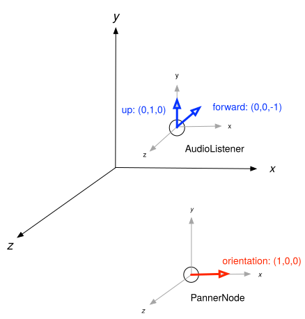
レンダリングの間、PannerNode は アジマス と エレベーション を計算します。 これらの値は空間音響をレンダリングするために実装によって内部的に使用されます。 これらの値がどのように使われるかの詳細については、パンニングアルゴリズム セクションを参照してください。
6.2. アジマスとエレベーション
PannerNode の アジマス と エレベーション を計算するには、次のアルゴリズムを使用しなくてはなりません ( MUST )。 実装は、以下のさまざまな AudioParam が "a-rate" なのか "k-rate" なのかを適切に考慮する必要があります。
// Let |context| be a BaseAudioContext and let |panner| be a // PannerNode created in |context|. // Calculate the source-listener vector. const listener= context. listener; const sourcePosition= new Vec3( panner. positionX. value, panner. positionY. value, panner. positionZ. value); const listenerPosition= new Vec3( listener. positionX. value, listener. positionY. value, listener. positionZ. value); const sourceListener= sourcePosition. diff( listenerPosition). normalize(); if ( sourceListener. magnitude== 0 ) { // Handle degenerate case if source and listener are at the same point. azimuth= 0 ; elevation= 0 ; return ; } // Align axes. const listenerForward= new Vec3( listener. forwardX. value, listener. forwardY. value, listener. forwardZ. value); const listenerUp= new Vec3( listener. upX. value, listener. upY. value, listener. upZ. value); const listenerRight= listenerForward. cross( listenerUp); if ( listenerRight. magnitude== 0 ) { // Handle the case where listener's 'up' and 'forward' vectors are linearly // dependent, in which case 'right' cannot be determined azimuth= 0 ; elevation= 0 ; return ; } // Determine a unit vector orthogonal to listener's right, forward const listenerRightNorm= listenerRight. normalize(); const listenerForwardNorm= listenerForward. normalize(); const up= listenerRightNorm. cross( listenerForwardNorm); const upProjection= sourceListener. dot( up); const projectedSource= sourceListener. diff( up. scale( upProjection)). normalize(); azimuth= 180 * Math. acos( projectedSource. dot( listenerRightNorm)) / Math. PI; // Source in front or behind the listener. const frontBack= projectedSource. dot( listenerForwardNorm); if ( frontBack< 0 ) azimuth= 360 - azimuth; // Make azimuth relative to "forward" and not "right" listener vector. if (( azimuth>= 0 ) && ( azimuth<= 270 )) azimuth= 90 - azimuth; else azimuth= 450 - azimuth; elevation= 90 - 180 * Math. acos( sourceListener. dot( up)) / Math. PI; if ( elevation> 90 ) elevation= 180 - elevation; else if ( elevation< - 90 ) elevation= - 180 - elevation;
6.3. パンニングアルゴリズム
モノラルからステレオ と ステレオからステレオ のバンニングがサポートされなくてはなりません ( MUST )。 モノラルからステレオ の処理は入力への接続がすべてモノラルの場合に使用されます。 そうでない場合は ステレオからステレオ の処理が使用されます。
6.3.1. PannerNode の "equalpower" パンニング
これは単純で比較的安価なアルゴリズムで、基本的ですが妥当な結果を提供します。 これは PannerNode で panningModel 属性が "equalpower" に設定されている場合に使用され、この場合 エレベーション の値は無視されます。 このアルゴリズムは automationRate で指定された適切なレートを使用して実装する必要があります (MUST)。 もし PannerNode の AudioParam または AudioListener の AudioParam のいずれかが "a-rate" である場合、a-rate での処理を使用する必要があります。
-
この
AudioNodeで処理される各サンプルごとに :-
azimuth を アジマスとエレベーション セクションで説明されているとおりに計算します。
-
azimuth の値は、まず以下の式に従って [ -90 , 90 ] の範囲内に変換します :
// First, clamp azimuth to allowed range of [-180, 180]. azimuth= max( - 180 , azimuth); azimuth= min( 180 , azimuth); // Then wrap to range [-90, 90]. if ( azimuth< - 90 ) azimuth= - 180 - azimuth; else if ( azimuth> 90 ) azimuth= 180 - azimuth; -
モノラル入力に対して、正規化された値 x は、azimuth から次のように計算されます :
x
= ( azimuth+ 90 ) / 180 ; また、ステレオ入力に対しては :
if ( azimuth<= 0 ) { // -90 -> 0 // Transform the azimuth value from [-90, 0] degrees into the range [-90, 90]. x= ( azimuth+ 90 ) / 90 ; } else { // 0 -> 90 // Transform the azimuth value from [0, 90] degrees into the range [-90, 90]. x= azimuth/ 90 ; } -
左および右のゲイン値は次のように計算されます :
gainL
= cos( x* Math. PI/ 2 ); gainR= sin( x* Math. PI/ 2 ); -
またはモノラル入力の場合のステレオ出力は次のように計算されます :
outputL
= input* gainL; outputR= input* gainR; また、ステレオ入力でステレオ出力の場合の計算は :
if ( azimuth<= 0 ) { outputL= inputL+ inputR* gainL; outputR= inputR* gainR; } else { outputL= inputL* gainL; outputR= inputR+ inputL* gainR; } -
距離効果 で説明されている距離ゲインと サウンドコーン で説明されている円錐ゲインを適用します :
let distance= distance(); let distanceGain= distanceModel( distance); let totalGain= coneGain() * distanceGain(); outputL= totalGain* outputL; outputR= totalGain* outputR;
-
6.3.2. PannerNode の "HRTF" パンニング ( ステレオのみ )
この処理には様々なアジマスとエレベーションで記録された HRTF (Head-related Transfer Function : 頭部伝達関数) インパルスレスポンスのセットが必要です。 実装には高度に最適化されたコンボリューション機能が必要になります。 これは "equalpower" よりもコストが必要ですが、より空間的な音を得る事ができます。
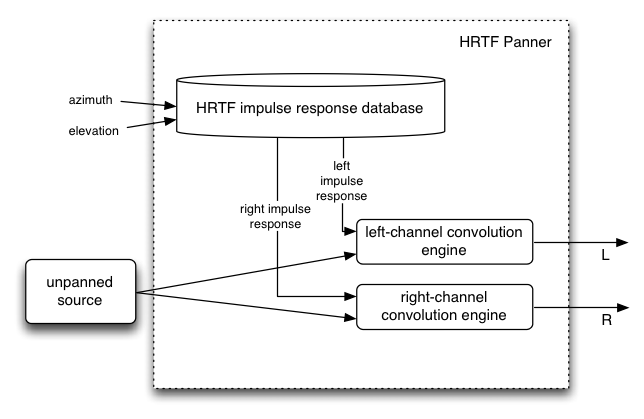
6.3.3. StereoPannerNode のパンニング
StereoPannerNode は、以下のアルゴリズムを実装しなければなりません ( MUST )。
-
この
AudioNodeで計算される各サンプルに対して-
pan をこの
StereoPannerNodeのpanAudioParamの computedValue とします。 -
pan を [-1, 1] の範囲にクランプします。
pan
= max( - 1 , pan); pan= min( 1 , pan); -
pan の値を [0, 1] に正規化して x を計算します。モノラル入力の場合 :
x
= ( pan+ 1 ) / 2 ; ステレオ入力の場合は :
if ( pan<= 0 ) x= pan+ 1 ; else x= pan; -
左および右のゲイン値を次のように計算します :
gainL
= cos( x* Math. PI/ 2 ); gainR= sin( x* Math. PI/ 2 ); -
モノラル入力でステレオ出力の場合の計算は :
outputL
= input* gainL; outputR= input* gainR; そうでなく、ステレオ入力でステレオ出力の場合の計算は :
if ( pan<= 0 ) { outputL= inputL+ inputR* gainL; outputR= inputR* gainR; } else { outputL= inputL* gainL; outputR= inputR+ inputL* gainR; }
-
6.4. 距離効果
近くの音は大きく、遠くの音は小さくなります。 正確には、リスナーからの距離に対して どのように 音量が変わるかは distanceModel 属性に依存します。
オーディオレンダリングの際に、distance 値がパンナーとリスナーの位置を基に次のように計算されます :
function distance( panner) { const pannerPosition= new Vec3( panner. positionX. value, panner. positionY. value, panner. positionZ. value); const listener= context. listener; const listenerPosition= new Vec3( listener. positionX. value, listener. positionY. value, listener. positionZ. value); return pannerPosition. diff( listenerPosition). magnitude; }
そして、distance を使って distanceModel 属性に依存した distanceGain が計算されます。 それぞれの距離モデルについて、これがどのように計算されるかの詳細は DistanceModelType セクションを参照してください。
この処理の一部として、PannerNode は入力されるオーディオ信号を distanceGain でスケーリング/増幅し、遠くの音は小さく近ければ大きくします。
6.5. サウンドコーン
リスナーとそれぞれの音源はそれがどの方向を向いているかを表す方向ベクトルを持っています。 それぞれの音源の音の放射特性は、音源の方向ベクトルに対してソース/リスナー間の角度の関数で音の大きさを表した内部および外部の "コーン" で表現されます。 つまり、直接リスナーの方を向いた音源は、違う方向を向いた音源よりも大きく聴こえます。 音源はまた、無指向性に設定する事も可能です。
次の図は、リスナーに対するソースのコーンの関係を示しています。 この図では、 coneInnerAngle = 50coneOuterAngle = 120
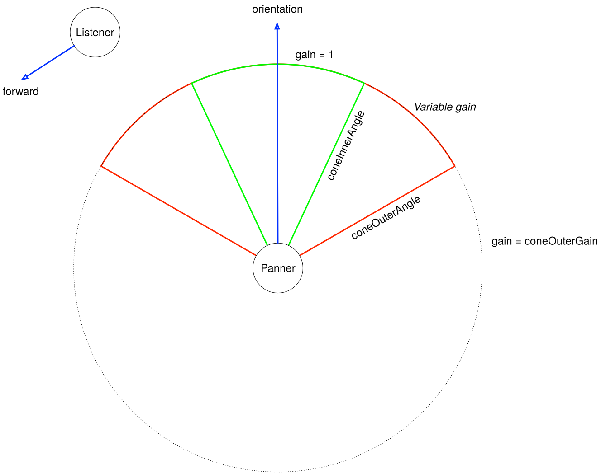
あるソース( PannerNode )とリスナーに対して、コーンの効果によるゲインへの影響を計算するためには、次のアルゴリズムを使用しなくてはなりません ( MUST ) :
function coneGain() { const sourceOrientation= new Vec3( source. orientationX, source. orientationY, source. orientationZ); if ( sourceOrientation. magnitude== 0 || (( source. coneInnerAngle== 360 ) && ( source. coneOuterAngle== 360 ))) return 1 ; // no cone specified - unity gain // Normalized source-listener vector const sourcePosition= new Vec3( panner. positionX. value, panner. positionY. value, panner. positionZ. value); const listenerPosition= new Vec3( listener. positionX. value, listener. positionY. value, listener. positionZ. value); const sourceToListener= sourcePosition. diff( listenerPosition). normalize(); const normalizedSourceOrientation= sourceOrientation. normalize(); // Angle between the source orientation vector and the source-listener vector const angle= 180 * Math. acos( sourceToListener. dot( normalizedSourceOrientation)) / Math. PI; const absAngle= Math. abs( angle); // Divide by 2 here since API is entire angle (not half-angle) const absInnerAngle= Math. abs( source. coneInnerAngle) / 2 ; const absOuterAngle= Math. abs( source. coneOuterAngle) / 2 ; let gain= 1 ; if ( absAngle<= absInnerAngle) { // No attenuation gain= 1 ; } else if ( absAngle>= absOuterAngle) { // Max attenuation gain= source. coneOuterGain; } else { // Between inner and outer cones // inner -> outer, x goes from 0 -> 1 const x= ( absAngle- absInnerAngle) / ( absOuterAngle- absInnerAngle); gain= ( 1 - x) + source. coneOuterGain* x; } return gain; }
7. パフォーマンスに関する考察
7.1. レイテンシ
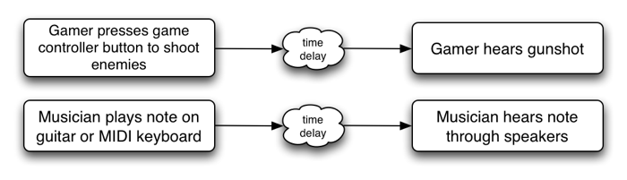
Web アプリケーションでは、マウスとキーボードのイベント (keydown、mousedown 等) と聴こえる音の間のディレイタイムは重要です。
この時間の遅れはレイテンシと呼ばれ、いくつかの要因 ( 入力デバイスのレイテンシ、内部バッファーのレイテンシ、DSP 処理のレイテンシ、出力デバイスのレイテンシ、スピーカーとユーザーの耳の距離、など ) によって引き起こされ、累積されてゆきます。 レイテンシが大きいとユーザー体験の満足度は下がります。 極端な場合、それは音楽制作やゲームプレイを不可能にする事もあります。 ある程度のレベルになるとそれはタイミングに影響し、音が遅れている、あるいはゲームが反応しないなどの印象を与えます。 音楽アプリケーションではタイミングの問題はリズムに影響します。 ゲームではタイミングの問題はゲームプレイの精度に影響します。 インタラクティブなアプリケーションでは、それは一般的にアニメーションのフレームレートがとても低いのと同じようにユーザー体験を非常に安っぽくします。 満足できるレイテンシはアプリケーションによって異なり、3 ～ 6 ミリ秒から 25 ～ 50 ミリ秒程度です。
実装は一般的に全体的なレイテンシを最小化する事を目指します。
全体的なレイテンシの最小化とあわせて、実装は一般的に AudioContext の currentTime と AudioProcessingEvent の playbackTime の差を最小化する事を目指します。 ScriptProcessorNode が廃止予定となった事でこの考慮はその内問題とならなくなるでしょう。
さらに、AudioNode の中には、オーディオグラフのいくつかのパスに遅延を追加するものがあります。 特に :
-
AudioWorkletNodeは内部にバッファを持つスクリプトで信号を遅らせる事ができます。 -
DelayNodeは制御された遅延を加える役割りを持っています。 -
BiquadFilterNodeとIIRFilterNodeのフィルタ設計は、因果的フィルタ処理の自然な結果として、入力されるサンプルを遅延させます。 -
ConvolverNodeはインパルスによる畳み込み演算の自然な結果として、入力されるサンプルを遅延させます。 -
DynamicsCompressorNodeは先読みアルゴリズムを持っており、それが信号の経路に遅延を発生させます。 -
MediaStreamAudioSourceNode、MediaStreamTrackAudioSourceNode、およびMediaStreamAudioDestinationNodeは、遅延を発生する内部のバッファを実装依存で追加されます。 -
ScriptProcessor
ScriptProcessorNodeNode は、制御スレッドとレンダリングスレッドの間にバッファを持つことができます。 -
WaveShaperNodeはオーバーサンプリング時に、オーバーサンプリングの手法に応じて信号の経路に遅延を発生させます。
7.2. オーディオバッファのコピー
AudioBuffer に対して 内容の取得 処理が行われるとき、処理全体は通常、チャンネルデータのコピーをする事なく実装する事ができます。 特に、最後のステップは次のgetChannelData() の呼び出しまで先延ばしにするべきです ( SHOULD )。 それは ( 例えば、複数の AudioBufferSourceNode が同じ AudioBuffer を再生するような ) getChannelData() による間隔をあけない連続した 内容の取得処理 がアロケーションやコピーをする事なく実装できる事を意味します。
実装はさらに最適化を行う事ができます : AudioBuffer に対して getChannelData() が呼び出される時、新たな ArrayBuffer はまだ割り当てられていませんが、以前 AudioBuffer の 内容の取得 操作を行った呼び出し側がその AudioBuffer のデータの使用を終えているならば、その生データのバッファを再利用して新しい AudioBuffer で使用する事で、チャネルデータの再割り当てやコピーを回避する事ができます。
7.3. AudioParam の遷移
AudioParam の value 属性に直接値を設定した際、自動的な平滑化が行われない一方で、いくつかのパラメータは直接的な値の設定に対して滑らかな変化が望まれます。
setTargetAtTime() メソッドを低い timeConstant で使う事で作成者は滑らかな変化を実現する事ができます。
7.4. オーディオグリッジ
オーディオグリッジは正常な連続したオーディオストリームが途切れる事で発生し、大きなクリックノイズやポップノイズを引き起こします。 それはマルチメディアシステムでは最悪の失敗と考えられ、絶対に避けなければなりません ( MUST )。 それは適切な優先度を持っていなかったり時間的制約から起こるスケジューリングの遅延のような事が原因で、オーディオストリームをハードウェアに供給するスレッドの反応速度の問題によって引き起こされる事があります。 また、それはオーディオ DSP が与えられた CPU の速度ではリアルタイムで処理できないような多量の仕事をしようとする事で起こる場合もあります。
8. セキュリティとプライバシーの考察
-
この仕様は個人を特定できる情報を扱いますか？
Web Audio API を使用して聴力検査を行うことができ、個人に対して聞こえる周波数の範囲を明らかにすることができます ( これは年齢とともに減少します )。 アクティブな参加を必要とするため、ユーザーの認識と同意なしにこれを行うことは困難です。
-
この仕様は高価値のデータを処理しますか？
いいえ。 クレジットカード情報などは Web Audio では使用されていません。 Web Audio を使用して、プライバシーに関する懸案事項であるかもしれない音声データを処理または分析することは可能ですが、ユーザーのマイクへのアクセスは
getUserMedia()を介する許可ベースになります。 -
この仕様では、オリジンのためにブラウズセッションをまたいで保持される新しいステータスが導入されていますか？
いいえ、AudioWorklet はブラウズセッションをまたいで保持されません。
-
この仕様は、永続的なクロスオリジンなステータスを Web に公開していますか？
はい、サポートされているオーディオサンプルレートと出力デバイスのチャンネル数が公開されています。
AudioContextを参照してください。 -
この仕様は、現在アクセスしていないオリジンに何か他のデータを公開していますか？
はい。 利用可能な AudioNode に関するさまざまな情報を提供する場合、Web Audio API は、 AudioNode インタフェースを使用するページにクライアントの特徴的な機能に関する情報 ( オーディオハードウェアのサンプルレートなど ) を公開する可能性があります。 さらに、タイミング情報は、 AnalyserNode または ScriptProcessorNode インタフェースを通じて収集することができます。 その後、この情報を使用してクライアントのフィンガープリントを作成することができます。
Princeton CITP の研究、 Web Transparency and Accountability Project は
DynamicsCompressorNodeとOscillatorNodeを使用して、クライアントからエントロピーを収集してデバイスのフィンガープリントを行うことができることを示しました。 これは、DSP アーキテクチャー、リサンプリング戦略、および異なる実装間のトレードオフの小規模で、通常は聞き取れない違いによるものです。 正確なコンパイラーフラグと CPU アーキテクチャ ( Arm vs. x86 ) もこのエントロピーに貢献します。しかし実際には "これはプラットフォームYで実行されているブラウザXです" というような、より簡単な方法で既に利用可能な情報（ユーザエージェント文字列）を推測することができるだけです。 そして、追加のフィンガープリントの可能性を減らすために、任意のノードの出力から発生する可能性のあるフィンガープリントの問題を軽減するためのアクションをブラウザに実行することを義務付けています。
クロックスキューによるフィンガープリントは、Steven J Murdoch と Sebastian Zander によって記述されています。 これは
getOutputTimestampから判断することができます。 スキューベースのフィンガープリンティングは、 Nakibly et. al. for HTML でも実証されています。 クロック分解能とドリフトの詳細については、 High Resolution Time § 10. Privacy Considerations を参照してください。レイテンシによるフィンガープリンティングも可能です。 これを
baseLatencyとoutputLatencyから推論することは可能かもしれません。 軽減策としてはジッター ( ディザリング ) と量子化を追加して、正確なスキューについて正しくない報告をする事も含まれます。 ただし、ほとんどのオーディオシステムでは、WebAudio によって生成されたオーディオを他のオーディオまたはビデオソース、またはビジュアルキュー ( 例えばゲーム、オーディオ録音、音楽制作環境など ) と同期させるために、低いレイテンシ を目指しています。 過度の待ち時間はユーザビリティを低下させ、アクセシビリティの問題になる可能性があります。AudioContextのサンプルレートを介したフィンガープライニングも可能です。 これを最小限に抑えるために、次の手順を実行することを推奨します。-
44.1 kHz と 48 kHz はデフォルトのレートとして認められており、システムはそれらから最適なものを選択します。 (明らかに、オーディオデバイスがネイティブに44.1であれば、44.1が選択されますが、システムは最も "互換性のある" レートを選択することもあります。 つまり、システムがネイティブに 96 kHz であれば、44.1 kHz ではなく 48 kHz が選択される事もあります。
-
システムはネイティブに異なるレートのデバイスに対して、再サンプリングされたオーディオが原因で余分なバッテリーの消耗が発生する可能性があるにもかかわらず、これら 2 つのレートのうちのいずれかに再サンプリングする必要があります。 (ここでも、システムは最も互換性のあるレートを選択します。 たとえば、ネイティブシステムが 16 kHz の場合、48 kHz が選択されると予想されます)。
-
ブラウザは、( 義務化されているわけではありませんが ) デバイス上のブラウザでフラグを設定するなどして、ネイティブのレートを強制的に使用する余地をユーザーに提供することが期待されています。 この設定は API では公開されません。
-
また、
AudioContextのコンストラクタで異なるレートが明示的に要求される可能性もあります ( これはすでに仕様に含まれています。 通常、要求された sampleRate でオーディオレンダリングが実行され、次にアップサンプリングまたはダウンサンプリングされてデバイスに出力されます )、そして、もしそのレートがネイティブにサポートされている場合は、レンダリングは直接出力されます。 これにより、アプリはユーザーの介入なしにより高いレートでレンダリングできるようになります ( ただし、オーディオ出力が出力でダウンサンプリングされないことは Web Audio からは観測できません )。 たとえば、MediaDevicesの機能を ( ユーザーの介入によって ) 読み取れば、より高いレートがサポートされている事を示します。
AudioContextの出力チャンネル数によるフィンガープリントも可能です。maxChannelCountは 2 ( ステレオ ) に設定することを推奨します。 ステレオは、これまでで最も一般的なチャンネル数です。 -
-
この仕様は、新しいスクリプトの実行/読み込みのメカニズムを有効にしますか？
いいえ、[HTML] のスクリプト実行方法を仕様で定義されている通りに使用します。
-
この仕様は、オリジンがユーザーのいる場所へのアクセスする事を可能にしますか？
いいえ。
-
この仕様は、ユーザーのデバイス上のセンサにオリジンがアクセスする事を許可していますか？
直接的にはありません。 現在、オーディオ入力はこのドキュメントでは規定されていませんが、クライアントマシンのオーディオ入力またはマイクにアクセスする事を含んでいます。 これは、おそらく
getUserMedia()API を介して、ユーザーに適切な方法で許可を求める必要があります。さらに、Media Capture and Streams 仕様のセキュリティとプライバシーに関する考慮事項に注意する必要があります。 特に、環境音の分析または固有のオーディオの再生により、部屋レベルのユーザーの場所、または異なるユーザーまたはデバイスによる部屋の同時占有の識別さえも可能になる場合があります。 オーディオ出力とオーディオ入力の両方にアクセスすると、1 つのブラウザで、分離されたコンテキスト間の通信も可能になる場合があります。
-
この仕様は、オリジンがユーザーのローカルコンピューティング環境の側面にアクセスすることを可能にしますか？
直接的にはありません。 要求されたすべてのサンプルレートがサポートされ、必要に応じてアップサンプリングが行われます。 MediaTrackSupportedConstraints で、Media Capture および Streams を使用して、サポートされているオーディオサンプルレートを調べることができます。 これには明示的なユーザー同意が必要です。 これは、フィンガープリントの小さな測定を提供します。 しかし、実際には、ほとんどの民生機器とプロスペクター機器は、 44.1 kHz ( 本来は CD で使用 ) と 48 kHz ( もともとは DAT で使用 ) の 2 つの標準化されたサンプルレートのいずれかを使用します。 高度にリソースが制約されたデバイスは、音声品質の 11 kHz のサンプルレートをサポートし、ハイエンドデバイスは、88.2、96、またはハイファイ向けの 192 kHz のレートをサポートすることがあります。
すべての実装が 48kHz などの単一サポートされたレートにアップサンプリングするように要求する事は、特別なメリットがなく CPU コストが増加し、一方でハイエンドデバイスに低速なレートを使用させるのは、プロフェッショナル向けには不適切です。
-
この仕様は、オリジンが他の装置へアクセスする事を可能にしますか？
通常、他のネットワーク機器へのアクセスは許可されていません ( ハイエンドの録音スタジオでの例外は、Dante ネットワーク機器である場合がありますが、通常は別個の専用ネットワークを使用します )。 これは、必要に応じて、ユーザーのオーディオ出力デバイスやコンピューターとは別のユニットになっているデバイスへのアクセスを可能にしています。
音声またはサウンドで作動するデバイスであれば、Web Audio API を使用して他のデバイスを制御することができる かも 知れません。 さらに、音操作デバイスが超音波周波数に対応している場合、そのような制御が聞こえない可能性があります。 この可能性は、<audio> 要素または <video> 要素のいずれかを介して HTML でも発生します。 一般的なオーディオサンプリングレートでは、(設計上) 超音波情報を多く処理するための余裕は不十分です。
人間の聴力の限界は通常 20 kHz と言われています。 44.1 kHz のサンプリングレートの場合、ナイキスト限界は 22.05 kHz です。 真のブリックウォールフィルタを物理的に実現することができない場合、20 kHz 〜 22.05 kHz の間の空間は、ナイキストより上のすべての周波数を強く減衰させる高速ロールオフフィルタに使用されます。
48 kHz のサンプリングレートでも、20 kHz から 24 kHz の帯域で急激な減衰があります ( ただし、通過帯域中の位相リップルエラーを回避する事はより簡単です )。
-
この仕様は、オリジンがユーザーエージェントのネイティブ UI に対して何らかの制御が可能ですか？
UI に音声アシスタントやスクリーンリーダーなどのオーディオコンポーネントがある場合、Web Audio API を使用して、ネイティブ UI をエミュレートして、攻撃をローカルシステムイベントのように見せることができます。 この可能性は、<audio> 要素を介する事で HTML にも存在します。
-
この仕様では、Web に一時的な ID が公開されていますか？
いいえ。
-
この仕様では、ファーストパーティのコンテキストとサードパーティのコンテキストの動作を区別していますか？
いいえ。
-
この仕様は、ユーザーエージェントの "incognito" モードのコンテキストでどのように動作しますか？
違いはありません。
-
この仕様はユーザーのローカルデバイスにデータを保持しますか？
いいえ。
-
この仕様には「セキュリティに関する考慮事項」と「プライバシーに関する考慮事項」のセクションがありますか？
はい ( あなたは今それを読んでいます)。
-
この仕様では、デフォルトのセキュリティ特性をダウングレードできますか？
いいえ。
9. 要件とユースケース
[webaudio-usecases] を参照してください。
10. 仕様内のコードのための共通定義
このセクションでは、この仕様で使用される JavaScript コードで使用される一般的な関数とクラスについて説明します。
// Three dimensional vector class. class Vec3{ // Construct from 3 coordinates. constructor ( x, y, z) { this . x= x; this . y= y; this . z= z; } // Dot product with another vector. dot( v) { return ( this . x* v. x) + ( this . y* v. y) + ( this . z* v. z); } // Cross product with another vector. cross( v) { return new Vec3(( this . y* v. z) - ( this . z* v. y), ( this . z* v. x) - ( this . x* v. z), ( this . x* v. y) - ( this . y* v. x)); } // Difference with another vector. diff( v) { return new Vec3( this . x- v. x, this . y- v. y, this . z- v. z); } // Get the magnitude of this vector. get magnitude() { return Math. sqrt( dot( this )); } // Get a copy of this vector multiplied by a scalar. scale( s) { return new Vec3( this . x* s, this . y* s, this . z* s); } // Get a normalized copy of this vector. normalize() { const m= magnitude; if ( m== 0 ) { return new Vec3( 0 , 0 , 0 ); } return scale( 1 / m); } }
11. 変更履歴
12. 謝辞
This specification is the collective work of the W3C Audio Working Group.
Members and former members of the Working Group and contributors to the specification are (at the time of writing, and by
alphabetical order):
Adenot, Paul (Mozilla Foundation) - Specification Co-editor;
Akhgari, Ehsan (Mozilla Foundation);
Becker, Steven (Microsoft Corporation);
Berkovitz, Joe (Invited Expert, affiliated with Noteflight/Hal Leonard) - WG co-chair from September 2013 to December 2017);
Bossart, Pierre (Intel Corporation);
Borins, Myles (Google, Inc);
Buffa, Michel (NSAU);
Caceres, Marcos (Invited Expert);
Cardoso, Gabriel (INRIA);
Carlson, Eric (Apple, Inc);
Chen, Bin (Baidu, Inc);
Choi, Hongchan (Google, Inc) - Specification Co-editor;
Collichio, Lisa (Qualcomm);
Geelnard, Marcus (Opera Software);
Gehring, Todd (Dolby Laboratories);
Goode, Adam (Google, Inc);
Gregan, Matthew (Mozilla Foundation);
Hikawa, Kazuo (AMEI);
Hofmann, Bill (Dolby Laboratories);
Jägenstedt, Philip (Google, Inc);
Jeong, Paul Changjin (HTML5 Converged Technology Forum);
Kalliokoski, Jussi (Invited Expert);
Lee, WonSuk (Electronics and Telecommunications Research Institute);
Kakishita, Masahiro (AMEI);
Kawai, Ryoya (AMEI);
Kostiainen, Anssi (Intel Corporation);
Lilley, Chris (W3C Staff);
Lowis, Chris (Invited Expert) - WG co-chair from December 2012 to September 2013, affiliated with British Broadcasting Corporation;
MacDonald, Alistair (W3C Invited Experts) — WG co-chair from March 2011 to July 2012;
Mandyam, Giridhar (Qualcomm Innovation Center, Inc);
Michel, Thierry (W3C/ERCIM);
Nair, Varun (Facebook);
Needham, Chris (British Broadcasting Corporation);
Noble, Jer (Apple, Inc);
O'Callahan, Robert(Mozilla Foundation);
Onumonu, Anthony (British Broadcasting Corporation);
Paradis, Matthew (British Broadcasting Corporation) - WG co-chair from September 2013 to present;
Pozdnyakov, Mikhail (Intel Corporation);
Raman, T.V. (Google, Inc);
Rogers, Chris (Google, Inc);
Schepers, Doug (W3C/MIT);
Schmitz, Alexander (JS Foundation);
Shires, Glen (Google, Inc);
Smith, Jerry (Microsoft Corporation);
Smith, Michael (W3C/Keio);
Thereaux, Olivier (British Broadcasting Corporation);
Toy, Raymond (Google, Inc.) - WG co-chair from December 2017 - Present;
Toyoshima, Takashi (Google, Inc);
Troncy, Raphael (Institut Telecom);
Verdie, Jean-Charles (MStar Semiconductor, Inc.);
Wei, James (Intel Corporation);
Weitnauer, Michael (IRT);
Wilson, Chris (Google,Inc);
Zergaoui, Mohamed (INNOVIMAX)